| ショウV -決断の刻- | |
| 吉野匠 | |
| (2015) | |
人間、魔族、そして異種族グールの三つ巴の戦いへ突入したロンザリア大陸。グールのトップ、ヴェルマとの直接対決で傷ついたショウは、その圧倒的な力の前に次の一手を模索していた。一つの方法が、仲間たちに禁忌の魔法「ソウルバイブル」を習得させること。だが、それには危険が伴う。迷うショウに対して、魔族、グールたちの攻勢は加速し......。最終決戦へ、ショウの決断が問われる！
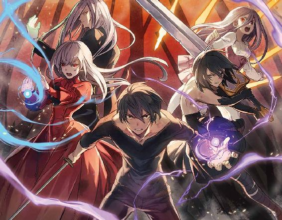
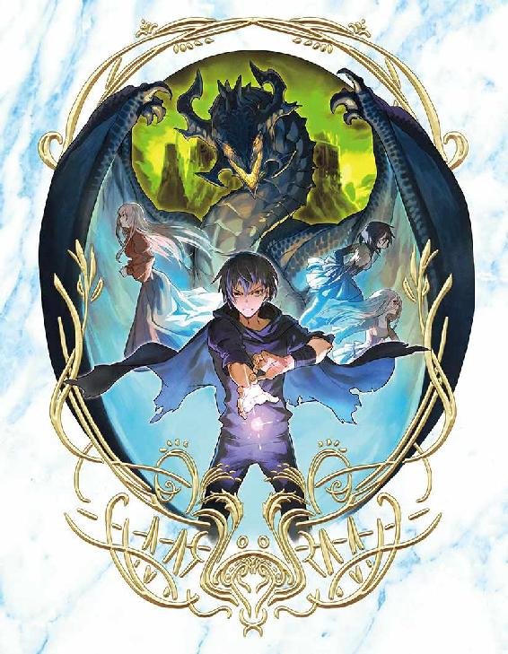
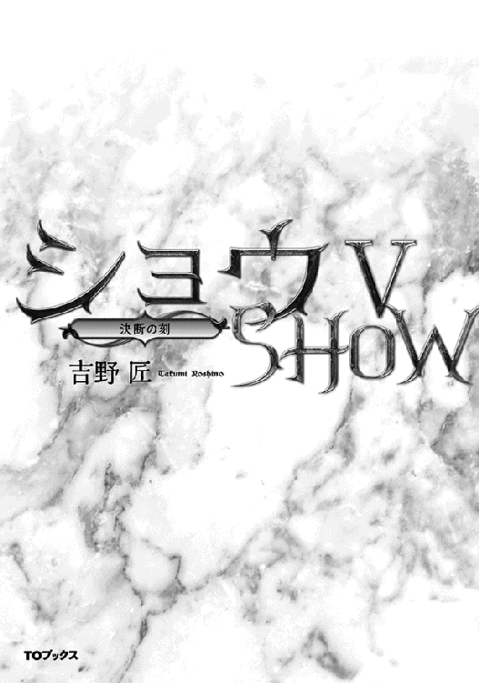
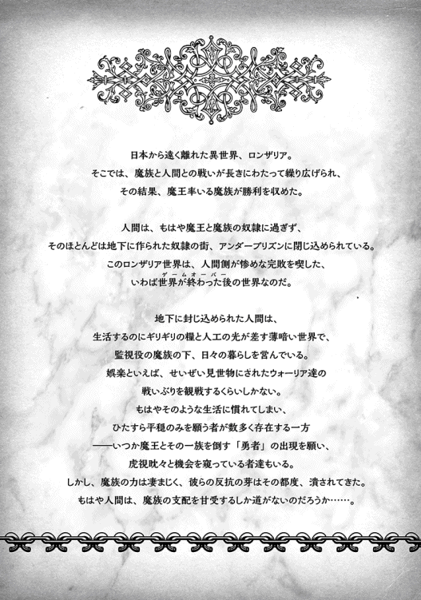
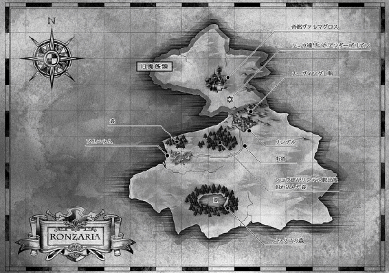
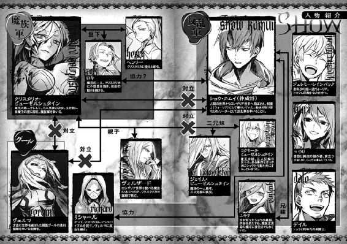
イラスト：天野 英 Hana Amano
デザイン：ヴェイア Veia
マップ制作：藤代 陽 Yoh Fujishiro
序章 ビーストマスター
「随分待たせてくれたが、とうとう成功したか」
ランプ一つのみがテーブル上に置かれた薄暗い部屋で、ヴェルマは微笑して頷いた。
「よくやってくれた」
グール侵攻部隊の指揮官である彼女は、上半身のみを覆う独特のプレートアーマー以外は、スカートを履いた普通の女性に見えるのだが──。
しかしその両眼は、全て真紅の色で覆われている。中心部分が最も濃い赤色で、そこからグラデーションのように赤い色が薄まっていく。しかし、普通なら白目に当たる部分もうっすらと赤く、遠くから見たら完全に瞳が真紅に見えてしまう。
これこそがグールという種族の特徴であり、当然ながらヴェルマの前に座す男も、同じ瞳を持っていた。
アランフェス......それが、彼の名前である。
一見、貴公子然とした上品な男に見える。
服装は銀糸の飾り織りが付いたスーツ姿だし、たとえ腰にレイピアを帯びていても、あまり戦士には見えない。
外見も、長髪を額の真ん中で分けた女性のような顔立ちに見える......遠目には。
ただ一点、彼の目はやや細く、いつも刺すような視線で相手を見つめる癖があり、お陰で全体の印象は残忍かつ酷薄そうに見えた。
ヴェルマに言わせれば、これほど外見と内面が一致する男もいないし、敵と戦う場合はこれほど心強い男もいない。
彼女の補佐役を務めるだけの実力を持っているということだ。
何より、ヴェルマすら一目置く特異な能力を持つことが、彼女が自分の補佐役にアランフェスを選んだ最大の理由でもあった。
そして、今日この日までアランフェスに単独活動を許していたのは、彼にしかできない役目を命じていたからだ。
......指揮官であるヴェルマの賞賛に、アランフェスは口元に笑みを刻んで低頭した。
「ありがとうございます、ヴェルマ様。人間共や魔族共の情報を探り、ようやく生息地域がメーヴィング山脈の奥だと断定しました。そこから先は、楽でしたな」
「今はどこに待機させている？」
「海岸近くにある森の奥です」
「それで、おまえから見てどうだ。戦力になりそう？」
自らも希有な実力を持つ戦士のためか、ヴェルマは興味深そうに尋ねた。
「そうですな、初めて見る種でしたが──単純な戦闘力なら、なかなか比肩する者はいないでしょう。少なくとも、人間や魔族を相手にするなら、無敵に近いような気がします」
アランフェスは淡々と述べた。
「この私とて、自らの特殊能力がなければ、とても相手にならなかったような気がします」
「ほお、そこまでだったか」
ヴェルマはやや感心して頷いた。
アランフェスは大言壮語するタイプではないので、彼がそう言うからには、事実そいつは、それだけの戦闘力を持つということなのだろう。
「数さえいれば、今この大陸の頂点に立っているのは、人間でも魔族でもなかったかもしれないわね」
「仰せの通りです。我らグールですら、敵に回して嬉しい連中ではないですね。もっとも、もうヤツらは絶滅しかけている気がしますが」
「ふふふ......では、滅ぶ前に、我らのために働いてもらおうではないか」
「御意。そのために苦労して見つけたのですからな」
二人は顔を見合わせ、同時に笑みを浮かべた。
「時にヴェルマ様」
表情を改め、アランフェスはヴェルマに問う。
「この街に滞在なさっている理由は？ しばらくは、ここを拠点にするということでしょうか」
二人が今いる街は、大陸西方のランガード湾に近い、アルバランという街だった。
場所的には、西方における魔族と人間の勢力圏の境にあり、いつ戦争が起きるかわからない。そばには魔族の勢力圏に含まれるリンデルの街もあり、今でも小競り合い程度の争いはしょっちゅう起きていた。
つまり、ここも前線のようなものなのだ。
今のところ、グールは魔族と人間を陰で動かし、目立った行動は避けるというのがヴェルマの方針だったはずなので、アランフェスも訝しく思ったのだろう。
「方針を変えたわけではない」
ヴェルマはあっさりと種明かしをした。
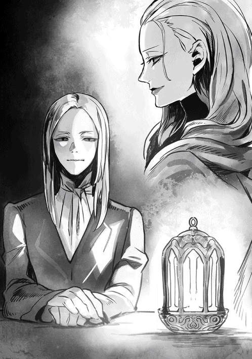
「ただ、そろそろ次の段階に移ってもいいだろうと思ったのよ。おまえも帰還したことだし、今回は我がグールの真の力を敵に知らしめるつもりだ」
鋭いアランフェスは、すぐにヴェルマの言わんとするところを察してくれたらしい。
「なるほど！ 夜とはいえ、道理で街が妙に静かだと思いました」
「静かなのは今だけのこと」
ヴェルマは悠然と笑う。
「すぐに騒動が起きるわ......それも、大陸全土を巻き込むような騒動がね」
「それは楽しみですなあ」
アランフェスは楽しそうに相づちを打ったが、同時に少し危惧を覚えたようでもあった。ヴェルマを窺うように見返したのが、その証拠だ。
「しかし......我らが本気になって、人間と魔族を揺さぶるとすれば、もはや支配下においたアレの出番は来ないのでは？」
「私はそうは思わないわ、アランフェス」
ヴェルマは膝を組みかえ、ゆっくりと首を振った。
「魔族もさほどではないが、人間はさらに弱い......それは否定しないけれど、中には例外もいるのだ。例えば、人間側の反乱軍を率いるショウという輩は、なかなかのものと言えるだろう」
ヴェルマが敵を褒めるのは珍しいので、アランフェスは驚いたように目を瞬いていた。
「せっかくだから、ヤツの底力とやらを見せてもらうのも悪くあるまい」
マスクを付けない素顔のまま、ヴェルマは微笑して呟いた。
☆
「反乱軍に不穏な気配がある？」
わざわざ執務室に報告に来た、家令かつ腹心のヘンリーに、クリスタリカは眉をひそめて見せた。椅子の背もたれに身体を預け、足を組んでヘンリーの殊勝な顔を見上げた。
いつもの皺一つないタキシード姿ではあるが、表情には笑顔の欠片もない。
「場所はどこですって？」
「アルバランという街です、クリスタリカ様」
ヘンリーは辛抱強く繰り返した。
「ランガード湾に近い、大陸北西部における、魔族軍と反乱軍の境界線上の街ですね」
クリスタリカが無言で促すのを見て、ヘンリーは続けた。
「その街を含む、周辺一帯を預かる反乱軍のゲインという男が、我々に対して怒りを燃やしているらしく──コソコソと兵力を集めているようで」
「我々に対して怒りを燃やしている、ですって？」
真っ赤な唇を歪め、クリスタリカはオウム返しに言った。
真紅のビスチェが強調する胸の下で軽く腕を組み、嘲るように述べた。
「反乱軍で警戒すべきはショウ・カムイと、ろくでなしの兄くらいでしょう？ なんで魔王のあたしが、そんな聞いたこともない雑魚に注目する必要があるのよ。あのショウって男は慎重そうだし、どうせ戦にはならないでしょうに」
「......ところがそのゲインとやらは、どうやらショウの命令に関係なく動いてるようでして」
ニコリともせずにヘンリーが答えると、さすがにクリスタリカも真顔になった。
「何それ？ ショウの命令もジェイルの命令も聞かずに、暴走してるってことなの」
「妙なのはそこなのです、クリスタリカ様」
ヘンリーは意識して深刻な声を出した。
「これは、人間側のスパイから得た情報ですが──どうやらアルバランの街を我々魔族軍が襲ったということになっていて、ゲインはそのことで報復を叫んでいるようです。ただし、この襲撃事件については、まだソムニウムにいるショウには報告されていないようです。その意味では、ゲインは完全に独断で動いてますね」
聞いた途端、クリスタリカは頭痛がしたような顔で額に片手を当て、しばらく考え込んだ。
「......それって、前に魔族の勢力圏にある、ルーデンスビルの街で起こったことと似てるわね？ あの時は魔族の駐留部隊ごと、ブラブレスとアーウィンが倒されていたけど」
そこで顔を上げ、クリスタリカはヘンリーに確認した。
「最初、どこかの部隊がアルバランを襲ったわけね？ 街の被害状況は？」
「あいにく、まだそこまでの詳細な情報は入ってきていません。ただ、スパイの話じゃ、幾つかの死体と破壊跡以外、街は空になっていたとか」
ぶすりと考え込んだクリスタリカを見て、ヘンリーは内心で頷く。
おそらく自分と同様、この方も最近ちらつく「グール」という謎の種族のことを思い出しているのだ。
反乱軍のショウ・カムイは、早い段階でグールの侵攻を主張しているが、あいにく新魔王のクリスタリカ率いる魔族側では、そんな古の侵略者の存在は認めていない──まだ今のところは。
噂を聞いたヘンリーやクリスタリカですら、まだ半信半疑といったところである。
それに、今は存在の不確かなグールよりも、クリスタリカ自身の地盤固めが先だろう。表面には出ないが、前魔王のヴォルザードの死については、未だに疑う者がいるという噂も絶えない。
「......少ない情報を元に判断は下せないわ」
しばらく考え、ようやくクリスタリカは言った。
「今は、ちゃんと明らかになっていることに判断を下すしかない。何があったかの調査は続行するとして、まずアルバランに一番近い部隊に、警戒を命じましょう」
「万一に備え、アルバラン付近へ軍を動かすということですか？」
念のためヘンリーが尋ねると、クリスタリカは重々しく頷いた。
既に、最初の小馬鹿にしたような態度は鳴りを潜めている。ヘンリー同様、クリスタリカもこの事件の根が深いことを悟り始めたのだろう。
「こちらから事を荒立てたくないけど、その......ええと、ゲインだったかしら？ そいつがいきなり軍を繰り出したら、防ぐ必要はあるでしょう。こっちの支配下にある街に攻め込まれて奪われでもしたら、また主戦派がうるさいじゃない」
「よくわかります」
ヘンリーは大きく頷いた。
ブラブレスとアーウィンはもうこの世にいないが、まだまだ魔将の中には血気盛んな者もいる。クリスタリカにとっては彼らの怒りが人間に向かうのは都合がいいことだが、最近は魔王に即位したクリスタリカが、「人間に対してあまりにも弱腰すぎではないか？」などと影で誹る者もいるらしい。
これ以上、そいつらに戦いの口実を与えるわけにはいかないのだ。
......少なくとも、クリスタリカが自分の地位を盤石なものにするまでは。
この方針については、クリスタリカの腹心であるヘンリーも、大いに賛成している。
「では、密かに付近の駐留軍に命じ、アルバランの動きを見張るように伝えましょう。万一向こうが攻めてきた時に限り、きちんと逆襲して叩きのめすようにと」
「そう、そうしてちょうだい！」
命令を下したクリスタリカは、少し考え、付け加えた。
「味方の独断に、まだショウは気付いてないと言ったわね？」
「はい。ゲインはいわばアルバラン周辺を任された地方司令官のような立場なので、彼がコソコソ動いている今、すぐに情報が伝わらないようです」
ヘンリーは自嘲気味に笑った。
「それに、味方にもスパイを配置している我々と違って、反乱軍は基本的に味方を信じ切ってますし......ははは」
「ははは、じゃないわよ」
クリスタリカはじろりとヘンリーを睨み、決めつけた。
「情報が伝わるのが遅いなら、こっちで補足してやりなさい。反乱軍を装って、こっちからゲインとやらの動静をソムニウムに伝えるの。ショウにも動いてもらわないとねっ」
「なるほど！」
ヘンリーは狼狽した顔を隠すように、深く腰を折った。
「クリスタリカ様の深謀には恐れ入ります。では、早速そのように」
執務室を退出しようとしたヘンリーは、しかしドアのところでクリスタリカに声を掛けられた。
「いいこと、ヘンリー。今は時を稼ぐのがあたしにとっての上策なの。不穏分子を探し出して一掃した後は、反乱軍だろうがグールだろうが、まとめて相手になってやるわ」
──グールなどという輩が本当に実在するならね、と最後に付け加える。
「あたしの方針を忘れず、常にその思惑に沿う形で便宜を図りなさい」
「ははあっ」
背中に冷や汗までかき、ヘンリーは今一度クリスタリカに深々と一礼した。
もちろん主人の今のセリフは、「これくらい、先におまえが気付かずにどうするのよっ」という叱責なのだった。
独断すると怒るくせに、独断しなさすぎても怒る......それが、このやたらと仕えにくい女主人なのである。
仕える立場のヘンリーとしては、常に気を張っている必要があった。
第一章 騒乱
反乱軍の拠点があるソムニウムの北側には、背の高い松が生い茂る、深い森が広がっている。大陸の中でも最大の面積を誇る広大な森だが、地方によって呼び方が違い、正式な名称というものはない。
ただ、ショウ達反乱軍の中では、主に森の北端の地名を取って「ロンデルシャムの森」と呼ぶことが多い。
森の中はちゃんとした道こそないが、場所によっては馬車が通れるほどの余裕があり、探索のために歩く分には特に不足はない。
ちなみに、このロンデルシャムの森の面積は想像以上に広く、下手に森の中で迷うと、そのまま行き倒れになることも珍しくない。
森の南端から北端に至るまで、騎乗して最短距離を通っても、優に何日もかかるほどの広さがあるからだ。
その、ある意味で恐ろしい森に入って半時間もすると、早速デイルが文句をつけた。
騎乗ですらなく、歩いているせいか、嫌気が差したようだ。
「......何が哀しくて、冬を目前にしたこの時期に、しかも野郎三人でこんな森をうろつかなきゃならんのだ」
元ウォーリアという肩書きの割に、少年っぽい雰囲気を残すデイルは、頭の後ろで両手を組み、早くもやる気が失せた風情だった。
「俺はな、なにもおまえに付いてきてくれって頼んじゃいないぞ」
念のため、横を歩くショウはきっちり自己主張しておいた。
後からグダグダ言われるのは困る......というか、もう言っているわけだが、とにかくこれ以上文句を聞かされたくない。
「最初から、俺とジェレミーの二人で十分だと思うと言ったろ。しかも、仲間の見間違いかもしれないんだし」
──ショウが元ウォーリア仲間の女性から、「薪を集めに森に入ったんだけど、迷った末に入り込んだ奥の方で、妙なものを目撃したのよ」と聞かされたのは、つい数日前のことである。
妙なものとは何か？ とショウが尋ねた時、その女性は「オレンジ色に光るでっかい光の球が二つ......に見えたような？」などと、曖昧なことを言ってくれた。
ただ、ショウはその報告を聞き流すことはしなかった。
というのも、ここしばらくの間、森から戻った者達の間で、この手の報告が妙に増えていたからだ。
彼らの話を聞くと千差万別で、「光源のない場所で光を見た」とか「森を歩いている最中、ずっと誰かに監視されている気がした」とか、挙げ句の果てには「森で地震に遭遇した」等々。
......最後の地震に関しては、彼が主張するその時刻に、ソムニウムでは地震など起きていなかったのだ。
一つ一つの証言を聞くと、結構バラバラなのだが......ショウは個人的にどうもきな臭いものを感じ、ジェレミーを誘ってこの森を探索することにしたわけだ。
余談だが、この森のほとんどは松の巨木で占められているものの、実はずっと奥の方へ入ると、この地方特産のローズオークという野生の樹が群生している一角がある。
桜に似た花を付ける低木だが、切るには手頃な堅さと太さで、しかも燃焼時間が長く、燃料としても保ちがいい。
薪にするにはすこぶる便利なわけで、狩猟目的と並び、ソムニウムの住人がこの辛気くさい森を利用する最大の理由だった。
ただ、奇妙な目撃談が相次いだ場所へ行くためには、数キロ程度の距離、森の中を歩く必要がある。ショウが「念のために、ジェレミーと森を探索してみる」と言った時、「俺も行く、俺も俺もっ」と嘘くさいほどの熱心さで主張したのは、デイル本人なのである。
それを思い出させてやったが、デイルは人の話を無視してくれた。
「だいたいさ、今さら燃料に薪って、薪って！」
拳を固めて暑苦しく連呼する。
「そんな原始燃料じゃなくてだなぁ、ディープブルーは手に入らないのかぁ？ それでなくても、蒸気機関車が走る世の中だぞっ」
ディープブルーというのは、この世界に存在する青く光る特殊な鉱石で、燃料源にも魔法の補助にも使えるという優れものだ。
そういえばショウも、アンダータウンを出てからこっち、むしろディープブルーを目にする機会が減っていた。
「僕ら反乱軍に、そんなの関係ないよ。ピカピカの新技術だった鉄道は、まだ魔族が敷設した短い路線しかないし、それも戦争で絶賛運行停止中だしね。おまけにディープブルーですら、まだまだ縁遠いのさ」
金髪のジェレミーが無駄に明るく言った。
苔生す森の中を歩いているというのに、いつもながらの純白スーツ姿で、違和感が凄まじかった。
「地上に出ても、魔族がディープブルーの供給を独占してるのは、同じじゃないか。最大の産地がメーヴィング山脈の鉱山だから、まあ当然だけどね......あの辺りは全面的に魔族の支配下だし」
そこまでほぼ一息に解説してくれた挙げ句、ジェレミーは不服そうなデイルを見て、くすっと笑った。
「多分デイルは、ショウが行くなら、女の子の誰か──あるいは全員が付いてくると思ったんだろ？ そこで、自分も志願したと......はははっ」
明るく笑い、トドメを刺した。
「アテが外れて、探索要員はショウと僕だけだったけどね。ごめんね、男ばかりで」
「こ、この俺が、そんなさもしい理由で探索を志願したように見えるかっ」
「思うね！」
慌てふためくデイルに、ショウは即答した。
「事実、志願したその瞬間に確信したね。どうでもいいが、妹に手を出すなよなっ」
「へぇ？ 他は手を出していいんだ？」
すかさず混ぜ返したジェレミーを、ショウもデイルも無視した。
「なんだとおっ。ウォーリア時代の決着つけるか、おいっ」
歯を剥き出してデイルが喚く。
「（無視）ジェレミーの言う通り、俺達は狩猟も薪も馬鹿にできるような身分じゃない。肉の供給は重要だし、燃料としての薪もしかりだ。だからこそ、何か起きる前にちゃんと調べておかないとな......実際、証言が増えてるんだし」
「それだけど」
一際太い松を回り込んで避け、ジェレミーが表情を改めた。
「自らが腰を上げたくらいだから、奇妙な目撃談についちゃ、ショウはかなり本気にしてるわけだね？」
「ま、まあ、半ばは勘だけどな」
まだ魔族との決着もついていなければ、グールの動向も不気味なこの時期に、どういうことさ!? などと暗に責められた気がして、ショウは肩をすくめる。
「ほら、ついこの前、グールの連中が南部のノックスの森に潜んでいたじゃないか？ 同じように、この森の奥に潜んでる可能性だってあるだろ？」
「......それだと、何か見たっつー俺らの仲間は、とうに殺されてるんじゃないかぁ？」
疑念の籠もった声音で、デイルがすかさず言う。
「いやぁ、そうでもないんじゃないかな......別にショウの肩を持つわけじゃないけど」
注意深く、転がった枝を避けつつ、ジェレミーが答えた。
「だって、モロに目にしない限り、誤魔化した方がいいに決まってるからね。万一、所在が突き止められたら、また攻められるしさ」
「待てよ。仮におまえらの言う通りだとしてだ。そうすると俺達三人だけで、いきなりグールの潜伏場所に遭遇する危険性もあるわけか？」
今頃になってぞっとしてきたらしく、デイルはその場で足を止めてしまう。
釣られて、ショウとジェレミーも歩みを止めた。三人が黙り込むと、ふいに昼なお暗い森の中の静寂が、ひたひたと圧迫感を持って感じられた。
ショウは咳払いなどして、軽く周囲を見渡す。
もちろん、見通しが悪いのは別として、特に怪しい者などいない。むしろ、この森で今一番怪しいのはショウ達三名だろう。
「そりゃ危険はあるけどな......ただ、怪しい目撃談が多発しているからには、誰かが調べなきゃいけないだろう。まさか、何も確かめないうちに軍勢仕立てて向かうわけにもいかないし」
だいたい、厳密には三人だけというわけでもないのだが、ショウはあえて教えなかった。
言い訳のようなショウの返事に、ジェレミーとデイルは顔を見合わせたが......やがて、ジェレミーが苦笑して言った。
「まあ、君の言うのもわかるし、様子見のメンバーとしてこの三人は妥当かもしれないけどね......でも、森に入った時間が少し遅かっただろ？ この調子だと、帰りは夜の森を抜けることになりそうだよ」
「そうだな......最初に迷っちまったのがまずかった。まさか、薪拾いした経験があるのが、俺だけとは思わなかった」
そろそろ日が傾いて久しい空を見上げる。
その空も、松の枝が折り重なるように伸びているせいで、すっきりとは見えない有様だ。これは、夜になるとかなり暗くなるだろう。
「経験者のくせに、迷ってんなよな」
デイルが待ってましたとばかりに文句を付ける。
「お、おまえこそ、普段から薪拾いくらいしておけよっ」
「やだよ、めんどくさい。店で買った方が早いし」
「おまえなあっ」
ショウとデイルがみっともなく揉めそうになったが、そこでジェレミーが右手を上げて止めた。
「静かにっ。今、何か聞こえた──気がするよ」
この一声で、さすがにショウもデイルも言い争いをやめ、同時に腰に手をやる。ショウは刀、デイルは剣だが、二人とも元ウォーリアなので、こういう時は素早い。
それに......ショウ自身も、ジェレミーの警告と同時に微かな殺気を感じ取った気がしたのだ。
しばらく三人で耳を澄ませたが、特に何も聞こえない。冬が間近のせいか、虫の鳴き声すらしなかった。まさに、耳が痛くなるほどの静けさである。
「気のせいじゃないか？」
緊張に飽きたのか、デイルが息を吐いた。
「なーんも聞こえないぞ」
「いや、でも俺も微かな殺気を感じた......相手は遠かった気がするが」
ショウが呟くと、ジェレミーがぱっとこちらを見た。
「君もかい？ 僕も同じだ。でも、さっきの殺気は遠かったね？」
「ああ。遠くから、気配だけでこっちを探っていた......そんな気がするな。もしかすると、他の仲間が感じた『ずっと誰かに監視されている気がした』ってのは、これのことかもしれないな」
「またまた......二人して話を合わせて俺をびびらせようとしても、無駄だって」
人の話を完全に冗談だと決めつけ、デイルが笑う。
「俺、そんなの感じなかったしな。仮に何か出てきても、ノックスの森にあった武器庫から回収した魔剣があらぁな。俺の魔剣が火を噴くぜ、てなもんだ」
「魔剣は火なんか噴くかっ──あっ」
「うん？」
「うおっ」
途中でショウは気付いたし、少し遅れてジェレミー、それにデイルという順番で振り返った。今度こそ、微かな足音が聞こえる。しかも複数である。
「おかしいな、殺気を感じた方向とは逆だぞ」
ショウは刀の柄に手を掛け、肩をすくめた。
「むしろ、この足音......じゃなくて駆け足は、ソムニウムの方角から来る」
思わず三人で視線を交わしたが、真実はすぐに明らかになった。
まずは、木々の間を縫うようにして走る妹のユキナの姿が見え、次に少し遅れてロクサーヌの姿が見えた。
一瞬、ショウは何かあったのかと緊張したが、二人揃ってドレス姿なのを見て、刀の柄から手を放した。
「ユキナの勝ちっ」
風のようにショウの胸に飛び込んできたユキナが笑う。やや遅れてロクサーヌが到着し、唇を尖らせた。
「い、いつから、これが競争になったのです！ そんな呑気な話じゃないでしょうに」
さりげなくユキナをショウから引き離しつつ、ロクサーヌはきょろきょろと周囲を見渡した。
「ところでショウ、ユウリさんは？ てっきりまた抜け駆けだと思いましたけど」
「いるよ、ちゃんと」
ショウはあっさりバラし、声を上げて呼んだ。
「ユウリっ──てわっ」
「おっと」
「う、嘘っ」
ジェレミーとデイルはもちろん、ロクサーヌ達も小さく悲鳴を上げた。それはまあ、いきなり頭上から人が降ってくれば、驚くだろう。
舞い降りた黒いドレス姿のユウリは、ショウの眼前にふわりと着地した。
少し裾の広がった短めのスカートなので、着地の途中、ショウの目の前に白い太股がちらっと見えてしまった。
「お呼びでしょうか」
ショウを含めた全員が驚きの声を上げる中、ユウリのみは落ち着き払っている。なぜ上から落ちて来たのか謎だが、ショウはいちいち訊かないことにした。
「い、いつから一緒にいたんですっ」
なぜか敬語でデイルが訊くと、ユウリは短く「最初から」と答えた。付き合いの長いショウは、その存在を感じていたが、さすがにデイルとジェレミーは気付いていなかったらしい。二人とも、唖然としてユウリを見ていた。
それと、不機嫌そうに顔をしかめるユキナとロクサーヌを見て、ショウは慌てて話を戻した。
「それで、どうかしたのか？」
「それが......また北部の街が襲われたそうなのです」
表情を改め、いきなりロクサーヌが告げた。
「一刻も早く、ショウに教えて差し上げようと思いまして」
「またっ。今度はどこだ!?」
「アルバランという名の街で、リンデルからそう遠くない場所に位置する、現在の魔族と人間側の境界付近にある街です。ただ、問題は襲われたことよりも、その後の対応なのですわっ」
話している最中に、ロクサーヌは少しずつ厳しい表情になっていった。
「アルバランの街を含む、周辺一帯を任された人間側の守備隊長が、魔族への報復を宣言したらしくて──ついさっき、ソムニウムに報告が来ました。あ、報告といっても、アルバランからではなく、様子がおかしいのを見てとった、他の街からです」
「待ってくれ！ どういうことなのか、最初から事情を説明してくれないか」
さすがに事態の深刻さを感じ取ったショウは、ロクサーヌを促した。
☆
もはや森の奥を調べるどころではなく、ショウはその場でロクサーヌ達から話を聞いた。
彼女と、それにたまに補足してくれたユキナの双方の説明を聞き、ようやくショウは事件の詳細がわかった。
最初に起こった事件自体は、実はひどく単純だった。
アルバランという街が謎の軍勢に襲われ、付近の住民が気付いた時には、そこに住んでいた人間はわずかな死体を残して全て消え失せていた──これが発端である。
これは皮肉にも、つい先日にショウ達が調べた、大陸北東の街であるルーデンスビルで起こった騒動と似ている。あの時、調査に向かったショウ達はグールの軍勢と初めて遭遇し、街に駐留していた魔族軍が倒されるのを目撃してしまった。
ショウ達は途中で街を脱出したが、その後、ルーデンスビルの街は魔族の死体だらけで、人間は跡形もなく消え失せていた。
アルバランの街は、ルーデンスビルとは逆方向の大陸北西部に位置する街だが......やはり、付近の住民が気付いた時には、街には破壊跡だけが残り、人間の姿は死体を含めて全く残っていなかったらしい。
破壊跡があり、家が燃やされた痕跡もあったので、人間側の守備隊長は「魔族の襲撃に間違いない！」と決めつけたらしいが......しかし、ショウ達はそうとも言えないのを知っている。
前回のルーデンスビルの襲撃では、犯人は魔族ではなくグールだったのをショウ自身が目撃しているのだ。となれば、今回も同じことが起きた可能性がある。
ちなみに、今の反乱軍は規模が大きくなってきたので、ソムニウムから各地方に「守備隊長」という名目で指揮官を派遣している。
これはいわば、方面司令官のような立場といえるだろう。
名目上は反乱軍のリーダーであるショウが任命する形だが、実際は反乱の中核となったウォーリア仲間やジェイル達魔族が集まり、相談して決めることが多い。
「あの辺りの守備隊長って、名前は思い出せないけど、誠実そうなヤツだったぞ」
ショウが首を傾げると、それも報告にあったのか、ロクサーヌが教えてくれた。
「ゲインという名の人で、ウォーリア上がりだそうです」
「そうそう、ゲインだ......うん、思い出した」
ショウは頷き、ジェレミーとデイルは揃って首を傾げていた。
ゲインは──ショウ達とは別の地区にあったアンダープリズンを脱出し、反乱軍に身を投じた男で、その時点で数百名規模の仲間を率いていて、人望が厚かった。
反乱初期に仲間になった、今は亡きダルトンと同じで、ウォーリアの中でも有力者だったのだ。
軍議を開き、北西部の最前線付近に彼を配置する時も、全く反対が出なかったほどだ。ショウはともかく、ジェレミーやデイルは、ゲインとソムニウムで親しく話しているのを見たし、守備隊長を決める軍議の時も、二人揃って推薦していたはずである。無論、推薦したのはこの二人だけではなく、ゲインを知る者はみんな太鼓判を押していた。
ダルトンはもちろんだが、あの頃に交わった仲間うちでは、信頼度が際立って高い戦士だったと言えるだろう。
「俺は何度か話した程度だけど、あいつはそんなすぐかっとなるような浅薄なヤツに見えなかったが」
ショウの言葉に、ジェレミーが大きく頷いた。
「そうだね、彼はどっちかというと、今の状況を憂いていたよ。何とかして戦が広がるのを止めたいと言ってたはず」
「そうそう、むしろウォーリアっぽくなかったよな、あいつ」
それぞれ思い出すように述べるジェレミーとデイルに、ショウは大きく頷く。
そういうヤツだとわかったから、ショウ自身も守備隊長としての派遣に反対しなかったのだ。
「そのゲインが、報復を宣言したって？」
「その通りですわ」
「しかも、もう報復のための軍勢まで集め始めてるって」
今度はロクサーヌとユキナだったが、特にユキナの発言にショウは驚いた。
「ちょ、ちょっと！ 軍勢を集め始めてる!? ソムニウムにそんな報告は来てないぞっ」
「だから、アルバラン近郊の街では、既に騒ぎになっているそうです」
ロクサーヌがあっさり言った。
「明らかに守備隊長の独断専行ですし、周囲の街にも共闘を呼びかけているらしく。でも、ショウのところには、何のご報告もないんでしょう？」
「ないね、全くなかった」
ショウは憮然として言った。
だいたい、もしそんな報告が来たら、その場で止めている。
「ノックスの森での戦いの後、俺は反乱軍の勢力圏には、通達を出したはずだぞ。『グールの手口は巧妙で、魔族と人間の共倒れを狙っている。だから万一襲撃があっても、魔族だと決めつけるな』ってな。その通達を出した時、疑念を表明した守備隊長なんか、一人もいなかったじゃないか」
「これも、罠の可能性はありませんか？」
それまで沈黙していたユウリが、ふいに声を上げた。
松の根元で輪になって話し合う中、彼女だけはショウの背後に立っていたのだが──ようやく前に出てきて、ショウの腕に手を触れた。
案ずるようにショウを見つめる。
「思い出してください、ショウ。あのリシャールは、グールには強固な精神支配能力がある、と明言していたはず」
「......うん、その話は確かに聞いた」
渋面でショウは頷いた。
リシャールはグールではあるが、反乱軍側に味方してくれた希有な男である。
彼の忠告はもちろんショウも覚えているが、具体的な事例がこれまでなかったのであまり考えてこなかったのだ。
しかし、いよいよグールが本気を出したということかもしれない。
「となると、仲間の一部......もしくは全員が精神支配を受けている可能性もあるか」
「でも、報告を入れてくれた使者さんの話だと、普通にゲインという人に会って話したけど、妙な様子はなかったって言ってたよ」
小首を傾げ、ユキナが口を挟んだ。
「ただひたすら、魔族によってアルバランが壊滅させられたのを怒っていたって」
この意見にはロクサーヌも頷き、「確かに使者殿の話では、ゲインさんは怒り狂っていた他は、いつもと変わらなかったとは仰ってましたね」と補足した。
「ふむ？」
ショウは一瞬考え込んだが、すぐに決断を下した。
いずれにせよ、今は動く時だろう。
そもそも、ゲイン達駐留部隊がいるアルバランの街の近くには、反乱軍の重要な拠点である旧アルバラン城跡がある。
そこに、かなりまとまった数の兵力が詰めているはずで、事態は楽観視できない。
「よし、とにかく早急にソムニウムに戻って、俺も報告を入れてくれた使者に会う。それからすぐにアルバランに向かおう」
「じゃあ、今日の探索は中止するんだな？」
念を押すデイルに、ショウは渋面で頷く。
「そんな場合じゃなくなったからな」
そこでなんとなく、先程殺気を感じた方向を振り返る。
幸か不幸か、今は何も感じなかった。
「気になるのは確かだが、やむを得ない。後で他の仲間を人選して、調査を引き継ぐ」
もちろん反対する者は誰もおらず、全員、その場から引き上げた。
しかし、夜が更けてからソムニウムに戻ったショウ達に、さらなる驚きが待っていた。
アルバランへ向かうにあたり、ショウは例によって亡き魔王ヴォルザードの長子であるジェイルに留守を任せようと思っていたのだが──彼の屋敷で出迎えた魔族戦士によると、ジェイルは既に側近を引き連れ、ソムニウムを出たという。
「今回は自分の出番だと思うから、後はよろしくとのことでした」
言伝を頼まれたという魔族戦士にそう言われ、ショウは思わず呻いた。
「参ったな......一言くらい、相談してほしかった」
「相談したら、また揉めるのがわかっていたんだろうね」
ポケットに片手を突っ込んだジェレミーが、薄い笑みと共に言ってくれた。
「そうそう。でもって、揉めたらクジ引きってパターンになるのを見越して、今回はとっとと先に出たと。また外れだったら嫌だろうしな」
デイルも腕組して何度も頷く。
「いや、賢いやり方だよな！ 俺だってそうしたかも」
「そんな先を争って駆け付けるような、嬉しい騒動じゃないだろうに」
思わず愚痴が出たが......いずれにせよ、ショウも大人しく留守番するつもりはない。
そこでロクサーヌ達を見渡したのだが、たちまち口々に言われた。
「わたくしは残りませんよっ。今回は何があっても一緒に行きますから！」
「ユキナだって」
「私は、ショウと離れる気は微塵もありませんし」
「あ、あのなあ、今はそんなこと言ってる場合じゃないだろっ」
......ジェイルの屋敷前でにわかに揉めそうになったが、そこでのんびりとした声がかかった。
「いたいた、こっちに来ていたのか。随分と探したよ」
振り向いた刹那、自然と言い争いが止んだ。
ソムニウムの薄暗い街路を悠然とやってきたのが、顔をマスクで覆ったリシャールだったからだ。以前と違い、ローブ姿ではなくちゃんとスーツを着込んでいたが、お陰で高貴な生まれの貴公子のように見えた。特に、仮面舞踏会中の貴族に。
彼がマスクをしているのは、瞳が真紅で出自がグールだと一発でわかるからである。
仲間の大半はもう知っているから同じと言えば同じなのだが、リシャールの方が妙に気を遣い、未だにマスクを取らずにいる。
「わざわざ来るからには、いいニュースだろうな？」
難しい顔でショウが伺いを立てると、リシャールはきっちり首を振ってくれた。
「残念ながら、明るいニュースとは言えないね」
素振りだけは申し訳なさそうに、両手を広げて見せる。
「詳細はもう聞いていると思うが、あれからまた進展があったんだ」
「元魔王の息子が先走ったことなら、もう聞いたけど？」
本人がいないせいか、デイルが遠慮のない言い方をした。
「いやいや、それとはまた別だよ」
リシャールは首を振り、軽い口調で爆弾を落としてくれた。
「実はロクサーヌさん達がショウ君達を呼び戻しに行った後、アルバラン近郊の街から、また他の使者が来てね。......魔族側が反乱軍のゲインとやらの動きに気付き、にわかに警戒を強めたらしいのだな。最新の情報では、既に国境に近い駐屯地から続々と魔族の部隊がアルバランに向かっているそうだ」
「うわあぁ」
文字通り、頭を抱える気分でショウは呻く。
「それで、その使者はまだいるかっ」
無情にも、リシャールは首を振った。
「あいにく、先に来た使者共々、泡を食って戻ってしまったね。彼らの街もアルバランからそう離れているわけじゃないので、不安だそうだ」
「......どいつもこいつも、俺に話す前に消えてくれるなよっ」
思わず愚痴りつつも、ショウは頭上に立ち籠める暗雲を意識せざるを得なかった。
「こうなったら、のんびりしている暇はない。とっととアルバランに向かわないと！」
「うん、今回は本当にそうした方がいい」
打てば響くようにリシャールが答え、ショウ達はとっさに彼に注目した。
「何か、他の情報でもありますか？」
代表してユウリが訊いたが、これに対してはリシャールは首を振った。
「いや、今話した以上の情報はない。だけど......ショウ君はもう気付いてるかもしれないが、私には予知の才能もあってね。ただ、いつも働かないのが困りものだが......珍しく今回はそっちの才能が働いてくれたのさ」
「......一刻も早く、アルバランに向かう方がいいと？」
ショウがそっと訊くと、リシャールははっきりと頷いた。
「その通り。遅れれば、致命的な結果をもたらす......そんな気がするんだ。ただし、『なぜ』と訊かないでくれ。この力は、私自身にも説明がつかないし、自分でコントロールできる類いのものじゃないんだから」
「いや、俺は疑わないさ。なにしろあんたは、俺の養父にソウルバイブルを託した男だからな。そういう力がなきゃ、そもそも当時の養父に目を付けるはずがない」
とっさに考え、その場で判断を下した。
「いつまで使えるかわからないのにすまないが、例の魔力付与のペンダントの力を借りたい。前回と同じく、あんたは残って俺達だけを転移させる方法でいいよ」
「そうだね、今回はそうした方がいい。ペンダントもいつまで使えるかわからないから温存したいが、そのために使い時を見過ごすよりはいいだろう」
リシャールも賛成してくれたものの、ただ彼はショウを見てこうも言った。
「ただし、私の予知は極めていい加減なものだし、君が向かったところで、必ずしも災厄が回避できるとは限らない。それだけは覚えておいてくれ」
「未来がそんな確かなものじゃないことは、さすがにわかってるさ」
わざと軽い口調で言うと、ショウは次にデイルを見た。
「悪いが、デイルはリシャールと一緒に、留守番頼む。俺の代わりにリーダー代理ということで」
セリフの後半は、早速にして不満そうな声を上げた本人を意識してのことだったが......効果はてきめんだった。
「おぉ......リーダー代理......つまり、司令官かぁ」
デイルは大きく開けた口を閉じ、なぜか目を細めて顎を撫でる。
「そういうことなら、まあしょうがないかねぇ。男気のある俺としては、断れないしな」
「大丈夫ですか、ショウ？」
「本当にいいんですか、ショウっ」
「本気なの、おにいちゃん!?」
「ショウも思い切ったねぇ」
なんと、ユウリもロクサーヌもユキナもジェレミーも、それぞれ全く同時に、しかもほぼ同じ意味のセリフを吐いてくれた。
さすがのデイルが顎に手を当てたまま、憮然としたほどだ。
「リシャールが補佐で残るし、大丈夫だろっ。だいたい、アルバランの街からなら、いざとなればひたすら森を突っ切って、十日ほどで戻れるさっ」
ショウは唾を飛ばして反論する。
「ていうか、実は俺だって不安なんだよっ。文句あるなら、誰か他に自主的に残ってくれよ！」
期待を込めて仲間を順番に見たが、それぞれ素早く目を逸らしてくれた。
別に遊びに行くわけでもなし、前途に待つのは危険な任務なのに、なぜかみんな行きたいらしい。
「......彼が残ると何かまずいのかな？」
皆を見比べていたリシャールが、にわかに不安そうに言った。
「一緒に残留する私としては、少し気になるのだが」
「いや、全く問題ない。大船に乗った気でいてくれ」
あえてきっぱりと言い切り、ショウは大風呂敷を広げた。
「それより、アルバラン近郊の街で、あんたの知ってる場所があるか？ 確か、ペンダントの転移魔法は、知らない場所へは転移不可能なんだよな？」
「少し南になるが......でも、さっき地図で確認したところじゃ、アルバランから数時間ほどの距離のはずだよ」
リシャールは太鼓判を押してくれた。
留守を守る仲間に細々とした引き継ぎをした後、ショウ達はリシャールの持つ付与魔力のペンダントにより、北西の街へ転移することとなった。
あいにくリシャールはアルバランには行ったことがないそうなので、あくまでもその南方にある小さな街である。
エランという名の宿が一軒しかないような場所だが、当面の目的地としては、問題ないだろう。
メンバーは、ショウを始めとして、ユウリとユキナとロクサーヌ、それにジェレミーである。他の仲間からは、「一触即発というなら、念のためにある程度の戦力を仕立てて行った方がよくないだろうか？」という忠告もあったが、ショウはこれに対しては断固として首を振ったものである。
「いや、戦いに行くんじゃない。あくまでも、仲間の様子を見るためと──場合によっては軽挙を止めるだめだ」
「あのゲインなら、確かに話せばわかるはずだけどよ」
今回は残留組であるデイルが、珍しく眉をひそめて言った。
「しかし、俺達が最後に会ってから、随分経ってるからな。人は変わるものだぜ」
「......かもしれないが、軍勢を率いて行くのは、やはりまずいさ。最初から喧嘩を売るようなもんだからな」
「それもそうか」
この時、デイルはショウの言葉に納得して引き下がった。
他に反対する者も特になく、もはや深夜の時間帯だったが、ショウ達はすぐにエランの街へと飛んだ。
☆
五人が転移したのは、以前のルーデンスビルと同じく、エランの街の街路である。
木造家屋ばかりが、石畳のメインストリートの左右に並んでいる。
話に聞いた通り、いかにも地方の街という感じで、壁の色や屋根の色が統一された建物はお洒落ではあるが、付近の住人以外には知られてなさそうな街だった。
事実、転移場所をここに決めたリシャールも、「この街は、以前たまたま通り抜けただけだ」と話していた。
ただし、明らかに訝しいこともある。
「......妙だね」
ショウが首を傾げる前に、ジェレミーが周囲を確認して呟いた。
「確かにおかしいな」
ショウも即座に同意した......あまりにも、街が明るすぎる。
普通、地方の街がこんな深夜に明かりを絶やさないなどは、有り得ない話である。
このエランではちゃんと街灯があり、ショウ達が立っているメインストリートには、特に等間隔でオイルランプの鉄柱が並んでいたのだが──。
なぜか、その全てに火が灯っていたのだ。
真っ暗な街を想像していた身には、むしろ明るすぎるほどだった。
「人間世界は不思議ですねぇ」
ロクサーヌが感心したように、ゆらゆらと蠢くランプの炎を見上げた。
「燃料であるオイルがもったいないでしょうに、誰も通らない夜でも街灯を点けるのですねぇ」
「えぇ？ そうなの、おにいちゃん？」
ユキナがショウを見上げたが、もちろんショウは首を振った。
「ないない、そんなの。地方はおろか、中原の都市だって、深夜はほぼ真っ暗みたいなもんだ。こんな時間帯は、酔狂な酒場と宿以外はだいたい閉まってるから、出歩くヤツなんか限られてるからな。それにほら、路地を見ろよ」
ショウは、石畳のメインストリートから、近くの路地の方に顎をしゃくる。普通なら真っ暗なはずのそこには、おそらく臨時にだろう、一定距離ごとに棒のようなものが路上に突き立てられ、メインストリートにあるようなオイルランプがその上に見えた。
いわば臨時の街灯のようなもので、なんでまた深夜に、しかも誰も通らないような狭い路地にあんなものを立てるのか、理解に苦しむ。
「う〜ん......異常事態だよね。なんとなく、いい予感がしないねぇ」
ポケットに片手を突っ込んだまま、ジェレミーが他人事のように言う。
「夜中に過剰な明かりを灯す......それって、要するに外敵を警戒してるってことじゃないかな」
はっとしてショウが見ると、ジェレミーは目を細めて言った。
「戦場で陣を敷く時だって、夜は篝火を焚きまくって夜襲を警戒するだろ？ そういうことだと思えば、納得がいくじゃないか」
全員が、小さな声を上げた。言われてみて、みんなそこに気付いたらしい。
「いや......仮に警戒のためだとしても、俺達は反乱軍だし、味方だろ。それにここはたまたま転移のために来ただけなんで、すぐにアルバランへ移動すれば──」
ショウが自分に言い聞かせるように言った途端、ユウリがショウの肩に手を触れた。
「ショウ、あそこに兵士がっ」
「え、兵士っ!?」
ユウリが指差す路地に、ショウは慌てて顔を向けた。というか、仲間の全員がそちらを一斉に見た。
見れば、別の路地の角から、隠れるようにしてこっちを窺っているヤツ──いや、ヤツらがいた。
プレートアーマーやレザーアーマーが入り交じった格好をした、防具がちぐはぐな連中で、いかにも統一感のない反乱軍の味方に見えた。つまり、味方......のはずである。
全部で三名いたが、全員が明かりを消したカンテラを手に、付近の家の壁に貼り付くようにしてじっとこちらを窺っていた。
しかも、ショウが「いや、俺達は怪しいヤツじゃなくて」などと言い訳をしようとした途端、まるで路地の奥に吸い込まれるように三名全員が後退して消えてしまった。
駆け足で遠ざかっていくのが聞こえ、実に嫌な感じである。
「ひょっとして、いきなりここに出現したのを、ばっちり見られたかな？」
ショウが顔をしかめて言うと、ユウリがはっきりと首を振った。
「いえ、あの三名は私達が話をしている時に、街の奥からこっそり接近してきました。それよりショウ、気付きませんか？」
今やはっきりと危惧の表情を浮かべ、ユウリは周囲を見渡す。
「この街、全然眠ってませんよ」
「うっ」
「あ、ホントだっ」
ショウと、それにユキナが同時に声を上げた。
改めてそう言われてみれば、嫌な気配を感じる......例えて言うなら、それぞれの建物に人が潜んで、窓や鎧戸の隙間から、住人達がこっそりとこちらを観察している──そんな気がするのだ。
その張り詰めた空気の真ん中に、ショウ達がいるのではないか。
「で、でも私達はたまたまこちらに立ち寄っただけで──」
「待て、ロクサーヌ」
今度はショウ自ら片手を上げた。
「四方から急速に気配が接近してくる......しかも、これはかなり大勢だぞ」
「僕の鋭い意見を言わせてもらえれば」
ジェレミーが真面目な顔でショウに告げた。
「こんなトコで立っていないで、全員で街の外までダッシュすべきかもしれないね。もう予感というのも馬鹿らしいほど、嫌な雰囲気じゃないかい？」
「いやしかし、ここらは勢力の境界に近いとはいえ、まだ反乱軍の街だぞ」
一応、反論はしたものの、身体は素直なもので、ショウは既に街の外（とおぼしき方角）を目指し、歩き始めている。
どういうことなのか気にはなるが、とにかくすぐにでも逃げられるように、街の出口付近まで移動しようと思ったのである。
反対する者とてなく、全員がショウの後を付いて歩き始める。
ところが、百メートルも行かないうちに、ユキナが声を上げた。
「お、おにいちゃん？」
「どうした──げっ」
ユキナを振り向いたショウは、絶句した。
今度はいつの間にか、自分達と一定距離を置いて、十名ほどの兵士が後ろを歩いていた......というか、はっきりと尾行していた。
これも全員が無言でショウ達を見つめていて、ひどく不気味である。
「み、右手からも集団が来ます」
ロクサーヌが路地の奥に新たな集団を見つけ、さらにジェレミーも指摘した。
「左からも来るね」
つまり、正面以外は囲まれつつあるわけで、ショウは顔をしかめた。
「ここには味方しかいないはずだろ。俺達は反乱軍だし、こそこそ逃げる必要はないさ」
「でも、魔族の仲間もいるから、誤解される要素に事欠かないよねぇ」
ジェレミーがいわずもがなのことを指摘してくれた。
「ソムニウムじゃ、魔族も人間も関係なく共闘してるんだ。今更、文句言われる筋合いはないさっ」
「ショウ、正面からもっ」
言ってるそばから、ユウリがまた警告した。
確かに、付近の路地から染み出るようにして、また新たな集団が現れている。相変わらず防具も武器もちぐはぐで統一感がなく、ごった煮の反乱軍の特徴をそのまま示すような集団だった。
とにかく、これで正面も塞がれたことになり、やむを得ず、ショウ達はその場で立ち止まった。接近してくる連中は、特に遠慮もなく近づき──。
しばらくすると、ショウ達は周囲を百名程度の兵士達にすっかり囲まれていた。
さすがのショウも危機感を持ち、今や刀の柄に手を掛けていたが......リーダーらしき若者が一人だけ前へ出てきたので、まずはそいつに主張した。
「ヤケに警戒が厳重だが、俺達は敵じゃないぞ。同じ反乱軍だ」
「しかし......魔族も一緒にいますね？」
焦げ茶色の髪をした若者は、一応礼儀正しく言った。あちこちすり切れたレザーアーマーを纏い、若くてもなかなか歴戦の風格があった。
「今は時が時なので、街を上げて警戒中なのですよ」
「いや、そりゃ見ればわかる......というか、わかった。しかし、俺達はソムニウムから来た同胞だって」
「じゃなくてさ」
ジェレミーがじれったそうにショウの肩を叩き、笑顔で相手に教えた。
「そうは見えないだろうけど、この人はショウ・カムイだよ。つまり、君達の上官に当たると思うんだけどな」
「おいっ、そうは見えないだろうけどってどういう──」
ショウが憮然とした途端、まるでそれを遮るように小さな声が幾つも上がった。
それまでは静まり返っていた連中が、たちまちガヤガヤと話し始める。
何より、代表で話していた若者が髪と同じ色の目を輝かせて、歩み寄り、握手を求めてきた。
「それは失礼しましたっ。まさか、そんな大物がこの街を訪れてくださるとは知らず」
「いや......元々、急な用件でもっと北へ向かう途中だからさ」
あまりの態度の変わりように目を白黒させ、ショウはためらいがちに握手に応じる。名を知る者は多かったのか、他にも近付いて握手を求めてくる者が引きも切らなかった。
加えて、ソムニウムに魔族がいることは誰もが知っているのか、最初は警戒して睨んでいた者も、すっかり目つきを和らげている。
ショウ以外の仲間は、それぞれ顔を見合わせてほっと息を吐いた。
ジェレミーがショウの身分を明かしたお陰か、陰険に間合いを詰めていた兵士の集団は、散々ショウを握手責めにした後、嘘のように周囲に散ってしまった。
兵士の群れが解散した後、ショウの周囲には「警備隊長のギョームです」と名乗った若者と、あと数名ほどの兵士だけが残り、彼らの詰め所に案内された。
本当は一刻も早くここを通過してアルバランへ向かいたいところだが、ショウが目的地を話したところ、ギョームが「では、現状を説明させて頂きますよ」と言ってくれたので、まずは情報を仕入れることにしたのだ。
ギョームが招き入れてくれたのは、今は使われていない宿の大部屋で、長年の汚れが壁や床に染みついたような場所だった。元は複数の客を泊めるための部屋だったのを、今は兵舎代わりに使っているらしい。
そのせいか、二段ベッドか幾つかと、大きなテーブルがある。
タバコの臭いが微かに籠もっていて、ロクサーヌが顔をしかめていたが......もちろん、口に出しては何も言わなかった。
「これでも一番いい部屋なんですよ......すいません、汚いところで」
微妙な空気を読んだのか、ぺこぺことギョームが頭を下げる。
「いや、勝手に押しかけたのはこちらだからさ」
実際に恐縮してショウは自分も低頭した。
しかも、ギョームが「まずは軽いお食事と飲み物をどうぞ」と言ってくれて、すぐに食事の支度までしてくれたので、なおさらである。
気付けば、ショウ達は全員がテーブルにつき、羊肉のシチューとパン、それにワインをご馳走になっていた。ただし、ユキナだけは特別に牛乳を用意してもらっていたが。
食事を摂りつつも、まずショウがここへ来た事情を語って聞かせたのだが──ギョームは終始礼儀正しく話を聞き、理解を示してくれた。
そのうち「そういうことなら、我々の中からアルバランへの案内人を出し、馬車も用意しましょう」とまで言ってくれたのだ。
言うだけではなく、「人選と馬車の手配がありますので、しばらく失礼」と述べ、ギョームは一時、席を外した。
彼が大部屋を出て行った後、なんとなくショウ達は顔を見合わせ、ほっと息を吐く。これが計ったように同時で、ユウリとジェレミー以外は思わず微笑していた。
「......どう思う、ショウ？」
笑わなかったジェレミーが、ふいに訊いた。
「どうというのは、怪しいところがあるかってことか？」
ショウがずばり訊くと、ジェレミーはおろか、ユウリまで頷いていた。
二人とも、ギョームの態度に訝しいものを感じているらしい。
「そうだな、愛想が良すぎるってことはあるな。この食事も、何か入ってるんじゃないかと、最初は警戒したくらいだ」
ショウはゆっくりと苦笑した。
でも実際は、ギョームも腹が減っていたらしく、率先して食いまくっていたのだ。一つの大鍋から皿に分けたシチューなので、自分のだけ無事ということはあるまい。
「それに、少なくとも後から俺達を囲んだ住人は、普通そうに見えたな」
「でも、あのギョームと仲間の数名は、目つきが妙だったように見えました」
ユウリが眉根を寄せて言う。
「えぇ、いい人達じゃないですかぁ」
とろんとした目つきのロクサーヌが割って入った。
ワインを飲んだせいか、既に酔う兆候が見える。
「こーんな深夜に食事まで用意してくださった......ですしぃ......」
言いかけたまま、幸せそうな表情でテーブルに突っ伏してしまった。
「おいおい、用件はこれからなんだから──」
あまり飲むなよと言いかけ、ショウはそこで気付いた。
同じく気付いたのか、激しく首を振っているジェレミーと目が合ってしまう。
「おまえもかっ」
「ということは、君もだね」
ちょうど、自分も口元に手をやってあくびなどしかけていたユキナは、ショウとジェレミーの目つきを見て、大きく息を吸い込んだ。
薄赤い瞳をまじまじと見張り、両者を見比べている。
「まさか......このだるさと眠気って、偶然じゃないということ？」
「偶然じゃない......ユウリ以外の全員が、同時にここまでひどい眠気に襲われるはずがないさ」
急速に脱力感が襲ってくる状態を堪えつつ、ショウは呻く。
「先に食べたから安心していたのに......どうやらあいつは、自分も含めて料理に一服盛りやがったらしい」
今からでも何とかしたいが、あいにく、もはや意識を保つのも難しくなっている。
現に、ジェレミーですらテーブルに突っ伏しかけていた。
「ショウっ」
駆け付けたユウリを見て、ショウは少しだけ安心した。魔族の血が流れるユキナやロクサーヌにも効いた薬だが、あいにくユウリには効かなかったのだ。
頭を抱えているユキナと、既に眠ったのか動かないジェレミーとロクサーヌを見て、ショウは辛うじて声を絞り出す。この眠気に抗うのは不可能らしい。
だとすれば、気は進まなくても後のことを頼む他はあるまい。
「ユウリは大丈夫なのか？」
「はいっ」
「よし......なら、この後でユウリも眠った振りをして様子を見てくれ......少なくとも、盛られたのが毒じゃないのは確かだ」
ショウは無理して笑顔を浮かべ、寄り添うユウリを見上げた。
「俺達を眠らせてどこへ連れて行くのか、興味は......ある。途中でヤバいと思ったら......その時はユウリに」
──任せるからさと言いかけ、そこでショウも泥のような眠りに抵抗できず、意識が闇に引き込まれていった。
「わかりました、お任せを。......ショウっ」
最後に聞こえたのは、ユウリがショウを呼ぶ声だった。
第二章 ビーストコントロール
目覚めると、やたらと身体が冷えていて、思わず小さなくしゃみが出た。
ぐらぐらする頭を振りつつ、ショウは寝転んだまま周囲を見渡す。
......自分が小汚いシーツの小山の上に倒れているのはともかく、天井がどう見ても石造りである。しかも、真横を見ると、黒々とした鉄格子が見えたりして、ぎょっとした。
「おいおいっ」
起き上がると、すぐに声がかかった。
「お目覚めですか」
......そちらを向くと、微苦笑を浮かべたユウリが、同じくシーツの上に足を崩して座っていた。ただし、二人の間にはやはり鉄格子があって、互いに行き来できないようになっている。
「俺、どれくらい眠らされてた？」
「今は、まだ早朝でしょうか......数時間は眠っていました」
「──むう。ちょ、ちょっと待ってくれ」
額に手を当てて考え込んでから、ショウは不安定なシーツの小山から下りて、改めて自分の置かれた状況を確認した。
まず最初に、自分が寝ていたシーツを手で押したり捲ったりした挙げ句、これは歪な形の寝具というわけではなく──単にボロ布を集めて小山状に積んだ上に、シーツだけを被せたものだと判明した。道理で饐えたような臭いがしたはずである。
自分がついさっきまで倒れていたそばに、ジェレミーの姿もちゃんとあり、彼はまだ目覚めていない。
そして、女性三名は鉄格子で隔てられた隣にいて──しかも、こっちも向こうも鉄格子で囲まれた牢屋らしい。
つまりどう見てもショウ達は、男女別に分かれて、牢屋にぶち込まれているのだ。
隣の牢で目覚めているのは、シーツの上にちょこんと座ったユウリだけで、他の二人はそのシーツの小山にもたれるようにして座り、平和な顔で眠っていた。
特に怪我もなさそうなので、ショウは自分のいる牢屋を点検してみた。
最初に、鉄格子の下部に付いた小さな鉄扉を試してみたが、当然のように鍵がかかっていた。場所はジメジメと湿気を帯びた地下室のような空間だが、天井が高く、周囲の壁は石材のブロックが積まれた堅牢なものだ。
どこかの屋敷の地下、などという生やさしい場所ではなく、どう見ても本格的な収容施設だ。しかも、ショウ達はたまたま壁際に近い場所にぶち込まれているが、背後にはまだ多くの牢屋が延々と並んでいる。
真ん中の通路を基準にして、その左右に鉄格子の牢屋が四部屋ずつ並んでいるらしい。他に人の気配がしないので、今使われているのは、ショウ達がいる隅の二室だけのようだ。
寒々とした場所でヤケに身体が冷え、しかもやたらとかび臭い。
石積みの壁の遥か上の方に、空気取り入れ口のつもりか小さな四角い穴があるが、それ以外はきっぱりと窓すらなかった。
顔をしかめてあちこち点検するのが終わると、ショウはユウリに向かって尋ねた。いや、もう結論は出ているのだが、できれば否定してほしかったので。
「もしかして俺達、砦かどっかの地下牢にぶち込まれている......とか？」
「その通りです」
無情にも、ユウリは即答してくれた。
「馬車に乗せられて運ばれる間、連中の口からアルバランの城という名前が何度が出てました。おそらく、そこの地下牢でしょう」
「アルバラン城......じゃあ、街にも近いことは近いな」
アルバランの街付近にあった城を思い浮かべ、ショウは頷く。
ここは元々、ショウ達反乱軍が建造したものではなく、魔族との戦いが起きる以前の、ロンザリア帝国時代の領主の城なのだ。
ショウは自ら立ち寄ったことはないが──以前のゲインの報告では、大きな破壊跡も特にないので、今は反乱軍の拠点の一つとして使っていると聞いた記憶がある。
「あのギョームってヤツ、問答無用で俺達を地下牢に放り込みやがったのか」
「というより、彼の仲間ですね。馬車の中で会話を盗み聞きしていたところ、彼らも我々に対する処置には迷っていて、ゲインの命令が出るまでは、閉じ込めておこうという話だったようです」
ユウリがシーツから下りて、鉄格子越しにショウと向き合った。
「ギョームという男は自らも薬を盛った食事を摂ったので、私達と同じく眠ってしまったようです。ただ、後の手はずは決まっていたのか、しばらくしてあの大部屋に何名か入ってきて、宿の前に止めた荷馬車に私達を運び入れました」
そこでユウリは上目遣いにショウを見る。
「......私は寝たふりをしていただけなので、その場で脱出することも可能でしたけど、ショウの最後の指示がありましたので」
「うん、覚えてるさ。もちろん、これでいいんだ。とにかく、連中がどうなってるのか知る必要があるからな。ただ──ここまで扱いがひどいとは思わなかった」
ショウが髪を掻きむしって唸っている途中で、今度はユキナが目覚めたのか、「お尻が冷たいよ、おにいちゃん」とむにゃむにゃと声に出すのが聞こえた。やがて目を開け、しばらくとろんとした目つきで周囲を見渡したが、次の瞬間、口元に手を持ってきて「えぇえええっ」と素っ頓狂な声を上げた。
鉄格子のこっちで見守るショウと目が合い、「お、おにいちゃん、これは一体っ」と慌てたように声を上げる。
ショウは渋面で片手を上げ、告げた。
「待ってくれ。みんなが目覚めてから、一度に説明する」
......というより、しばらく観察すれば、牢にぶち込まれているのは嫌でもわかることなのだが。
ようやく全員が目覚めたものの、ショウの説明を聞いて、当然ながら不満と不平が牢内に充ち満ちた。
「わたくし、まさか生きている間に、地下牢に放り込まれる経験をするとは思いませんでしたわっ」
ぷりぷりしてロクサーヌが足を踏み鳴らす。
やたらと牢の扉をガチャガチャやっていたが、もちろん開くはずがない。
ユキナはやたらと自分の着ているドレスを点検して、「運ばれている間に、触られてたら嫌だなあ」などと斜め方向の心配をしていた。
いや......女性にとっては深刻なのか、鉄の扉に取り付いていたロクサーヌも、ぎょっとしたように振り向いていたが。
「大丈夫、ちゃんと運び手は男女がいて、私達を運んだのは女性のグループだったもの」
まだシーツの山に座ったユウリが、落ち着いて答える。
ただ、ちらっとロクサーヌを見て、こうも言った。
「ただし、ロクサーヌさんは気に入られたのか、呼吸を荒くした女性に、馬車の中でこっそり下着を脱がされてたわね」
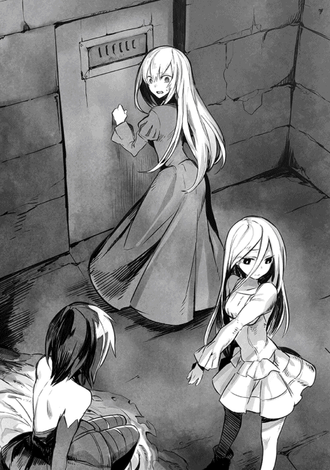
「えぇーーーーーっ」
真っ青になってスカートを押さえたロクサーヌに、ユウリが目を細めて笑う。こういう意地の悪い笑みを浮かべたユウリも珍しい。
「なんて......嘘だけど」
たちまちロクサーヌは真っ赤になって怒った。
「ぜんっぜんっ、笑えませんわっ」
「ちょっと訊きたいんだけど」
言い争いの途中で、ジェレミーが割り込んだ。
「僕らを荷馬車に運び入れる時、ギョームの仲間は堂々とやってたかな、ユウリさん」
「いいえ」
言わんとするところを理解したのか、ユウリはきっぱりと首を振った。
「どう見ても、辺りを憚るような態度でしたね」
ショウとジェレミーは素早く視線を交わす。
「となると、別にあのエランの街にいた、全員が反乱軍に反逆しているわけでもない......ということかな？」
ショウの言葉に、ジェレミーも頷いた。
「その可能性が高いね。命令を出す立場の何名かが、あえてソムニウムの方針を無視して動いている......そんなところかな」
「だとしても、まずいのは同じだ。反乱軍だって、一種の軍勢には違いない。指揮官に任じた各戦士の命令で動いているんだし、そいつらが正しい判断を下せなくなったら、暴走しかねない」
「というより、もう暴走してるんじゃないかな」
ユキナが鋭い指摘をしてくれた。
「だって、おにいちゃんが反乱軍のリーダーだって知ってて、問答無用でこれだもの」
「それは言えてるね」
ジェレミーが即座に賛成した。
「どうせギョームは、アルバランのゲインと通じているだろう。つまり、僕らに反逆する同志ってことさ。こうなれば早くこの豪華な地下牢を脱出して、ゲインやギョームを押さえる方法を考えた方がいいと思う。可能なら、解任するのが一番なんだけど」
「そうだな......ヤツらがこっちの言うことに耳を貸す気がないなら、そうするしかないか。しかし、会おうともしないなら無理矢理ってことになる」
「あの......実はショウ、おかしなことはまだあります」
ユウリが遠慮がちに述べた。
「実はこのアルバラン城、城内にほとんど人の気配がありません」
ショウ達は眉根を寄せてユウリを見返した。
「この城は、常時何百人かの反乱軍が常駐しているはずだけど」
首を振り、ユウリは断言する。
「もし本当にそんな人数が常駐しているなら、私はここにいても気配を探ることくらいはできるはずです。相手は普通の人間なのですから。でも、今はおそらく、いたとしても数えるほどかと」
ちょうどその時、遠くで鍵を開けるような音がして、重々しい鉄の扉が軋む音がした。ショウ達は顔を見合わせた後、一斉に背後──つまり音が聞こえた方を見やる。
何度かの咳払いの後、ゴトゴトとやかましい音がして、ようやくぼさぼさの黒髪をした男が視界に入った。
シャツの上にサイズの合わないコートを着込み、足を引きずった中年男だった。
そいつが、木製のワゴンを押してよたよたと歩いてくる。そばに来て、自分がショウ達に注目されていることに気付き、一瞬たじろいだ顔をした。
「なんとまあ、豪華な捕虜達じゃな」
主に女性三名を見て、小さな目を瞬く。
「ほれ、食事だぞ」
また咳払いなどすると、仕切りのあるワゴンから、得体の知れないシチュー皿を出し、配ろうとした。
ショウは鉄格子のすぐ前まで来て、尋ねてみた。
「なあ、この城って兵士達がもっとたくさんいたと思うんだが、今はいないよな。どうしたんだ？」
訊かれた男は、訝しそうにショウ達を見やり、それから引きずった自分の足を眺めて肩をすくめた。
「それは、残ったわしへの嫌みか？ 連中なら、とっくに城を出て報復に向かったよ。わしは足を怪我していて、行きたくても行けなかったのさ」
「は、報復だって!? どこへ報復だっ」
顔をしかめたショウに、男は当然のように言ってくれた。
「もちろん、アルバランの街を襲った魔族の軍勢にさ。上手い具合に、向こうから街の近くに布陣してくれたからな」
「待て待てっ。メシはどうでもいいから、詳しいことを教えてくれ！ 今、アルバランで何が起きているんだっ」
......答えてくれないかと思ったが、元々彼（ルイスというらしい）は戦いに赴けなくて、気が引けていたらしい。
ショウが訊いてもいないのに「わしは戦いを避けたわけじゃないぞっ」という言い訳まじりに、詳細を教えてくれた。
それによると、（単なる決めつけだが）アルバランの街が襲撃されたと思い込んだゲインは、報復を宣言した後、実際にこの城を含む拠点から兵力をかき集めていたらしい。
ここまでは、ショウもソムニウムで聞いたが、実はあれからさらなる進展があったようだ。
つまり、反乱軍の支配下にあるアルバランで不穏な動きがあるのを察知した魔族側も、危機感を深めて軍勢を集め、アルバランに一番近い魔族側の街（ラインブルクという）へと送り込んだのだ。
つまりゲインは、魔族側の軍勢が待ち構えるところへ、わざわざ反乱軍を率いて戦いに向かったことになる。
「そ、それっていつの話だっ」
「もう何時間も前の話だぞ......わしも戦いたかったが、この足だからな」
臆病だから残ったわけではないのだ、と強調するようにルイスは自分の右足を叩いたが、ショウ達にしてみればそれどころではない。
「た、大変ではないですかっ」
ロクサーヌが真っ先に呻いたし、ショウも気持ちは同じである。
そもそも時間的に見て、おそらくショウ達がエランの街でギョームと問答している頃には、既にゲインは動いていた可能性もある。
思わず、まだ呑気にスープ皿を出しているルイスに、文句を付けてしまった。
「どうせゲインの命令だろうが、誰も疑問に思うヤツはいなかったのかよっ」
「そりゃいたとも！ 実を言うと、わしだって『反乱軍もいきなり好戦的になったな』と思ったくらいさね。でも、ソムニウムからの命令なら、仕方あるまいよ......一応、あそこがわしらの総司令部みたいなモンじゃからな」
「待てよ、こらっ」
ショウはむっとして鉄格子を掴んだ。
「俺達はそのソムニウムから来たんだぞっ。そんな命令出してないし、むしろゲインを止めるために来たんだっ」
「......え」
さすがに作業を中断し、ルイスはショウを見返した。
「しかし......ゲインから回ってきた命令文だと、報復命令はソムニウムのリーダーである、ショウ・カムイが出したということで──」
「ショウは俺だっつーんだ!!」
鉄格子をガタガタ揺すりながら喚くと、ルイスは度肝を抜かれたのか、まじまじと目を見開いた。
「なんとまあ......あんたがリーダーのショウかね？ しかし、あんたらを夜中に運び入れた仲間は、『反乱軍の裏切り者達だ』と言ってたけどのぅ」
「裏切り者はそいつらだよっ。むしろ、ヤツらが俺達の命令を無視して動いてるんだって」
ショウは顔をしかめて教えてやった。
ルイスにしてみれば寝耳に水の話だったらしく、愚かしいほど驚いた表情を見せた。
「ほえええ......じゃあなんで、あんたはこんな地下牢にぶち込まれていなさる？」
「それは、こっちが訊きたいわあっ」
喚いた後、ショウはそんな場合ではないことに気付き、隣の牢から様子を窺っていたユウリに頼んだ。
「ユウリ、このまま脱出して、ゲインを追うっ。もし戦いの前ならなんとか止めないといけない！」
「わかりました」
ユウリは即答すると、そのまま自分のいる牢とショウの牢を隔てる鉄格子まで歩み寄り、黒光りする鉄棒を左右の手に握り、あっさりねじ曲げてしまった。特に力を入れた様子すらなく、見ていた他の仲間が「ほうっ」と感嘆の声を上げたほどだ。
ユウリはそのまま、今度はショウの隣に立つと、同じく鉄格子を両手で掴み、ぐんにゃりと大きくねじ曲げてしまう。
「お......おぉ......わしは夢を見ているのか」
手にした皿を落とし、ルイスがあんぐりと口を開けていたが、ショウ達はその眼前で次々と牢を出てしまう。
最後にショウが、ルイスに尋ねた。
「おいルイス、この城の厩舎はどこだ？」
呆然として見返すルイスの肩を掴んで揺すった。
「厩舎だよっ。わからないのか、戦いを止めなきゃいけないんだ！」
「きゅ、厩舎なら、南の門の近くにあるが──」
「わかった！」
最後まで聞かず、ショウ達はその場で駆け出した。
☆
アルバラン城を脱出するのは、予想していたより容易かった。
というのも、どうやらゲインはこの地域に常駐していたありたっけの反乱軍に動員をかけたらしく、重要拠点だったはずの城内にも、ほとんど人が残っていなかったからだ。
たまに出会うのはルイスのような怪我人や老人が多く、ショウが自分の身分を明かすと、驚いたように「なぜこの城にあんたがっ」と逆に訊く者が多かった。
やはり、ショウ達を連れ出したギョームの仲間は、詳しい説明などは一切せずにこっそりショウ達を運び入れたらしく、武器を振りかざしてまで止めようとする連中はいなかった。
お陰で、地下牢を脱出して半時間後には、ショウ達は全員馬上の人となり、すぐに北を目指して馬を飛ばした。
朝日がようやく昇り始めた薄暗い街道を、ひたすら北へと急ぐ。
目的地は......アルバランの街を越えたさらに先にある、ラインブルクである。
アルバランに最も近い、この地方における魔族側の最前線にある街であり、現在、魔族が軍勢を集結しているはずなのだ。
ショウはまず、状況の把握のために、ユウリを斥候として送り出した。
鳥に変化できる彼女なら、馬で急ぐよりよほど早く現在の情勢を掴めるからだ。
もちろん、ユウリが先行している間もショウ達は可能な限り急ぎ、ひとまずアルバランの街に入った。
「本当に街を空けて出たみたいだね」
まるで廃棄した街のような有様になっている大通りを眺め、ジェレミーが呟いた。
左右に並ぶ商店で営業している店は一軒もなく、全て例外なく雨戸を閉め切っている。いや、雨戸どころか窓や鎧戸まできっちり閉め切り、どう見ても留守のように見える。
これは住人が住む家も同じだが......出陣以前に、街の住人が消える騒動があったらしいので、閑散とした様子はそのせいかもしれない。
「おにいちゃん！」
そのまま街を抜け、先を急ごうとしたショウを、ユキナが呼び止めた。
「ユキナ達がこの街に入った途端、何人かが慌てて北の方へ走っていったよ」
薄暗い路地の一つを指差し、教えてくれた。
「それは多分、ゲインが伏せておいた、見張りのための兵士じゃないのかな......」
馬の手綱を握ったまま、ショウは顔をしかめる。
「なんで味方に警戒されないといけないんだと思うが、今やゲインの軍勢は潜在的な敵になりかけているからな。とにかく今は」
──ゲイン達に追いつくのが先決だっと言いかけた時、翼をばたつかせる音がして、ユウリの帰還を知らせた。
彼女はちゃっかりショウの乗馬に着地し、相乗りの形になった。
ロクサーヌとユキナが抗議の声を上げたが、ユウリは無視して告げた......焦った声で。
「ショウ、引き返してくださいっ。既に戦いは終わっています！」
「えっ」
大通りから街の外れへと向かうつもりだったショウは、さすがに馬を止めた。
ユウリは前に座ったまま、ショウを振り仰ぐようにして報告してくれた。
「ラインブルクに終結していた魔族軍は、ゲインの軍勢が迫るのを察知し、どうも街を出て迎撃に出たようです。既にゲインの軍は粉砕され、魔族軍は現在、このアルバランに向けて進撃中ですっ」
ショウ達は、落胆とも無念ともつかない声を洩らした。
結局、間に合わなかったのだ。
馬の鞍を叩きたい衝動に駆られたが、それでもショウは押し殺した声で訊いた。
「ここに魔族軍が到着するまで、どの程度の余裕がある？」
「長く見積もっても、一時間もないかと......」
「そうか」
ショウはしばらく考え、やむなく決断した。
「すまないがユウリ、後から来るはずのジェイルさん達の軍勢に、これまでの顛末を知らせて、引き返すように言ってくれ」
「ショウはどうします？」
「俺達もソムニウムに戻る」
ショウは即座に答えた。
「ちょっと考えていることもあるし──それに、事態がここまで進展したからには、出直すにしても、今度はそれなりに軍備を調える必要がある。このアルバランから、魔族がさらに南下してくる危険性もあるから、準備はしないと」
ショウは自分を注目する仲間達の顔を見やり、言い聞かせるように告げた。
「ゲインの生死は不明だけど、今はこの戦いをきっかけにして、魔族と全面戦争に陥るのを防がないといけない。それこそ、ヴェルマの──グール達の思うツボだ」
まだショックが尾を引いていたのか、みんな声もなく頷いた。
ショウ達は、途中でギョームのいたエランの街へ立ち寄った。
事前に密かに住人と接触した結果、他の住人達は昨晩の出来事を全く知らないことが判明したからだ。
やはりギョームとその仲間は、独自に動いていたらしい。
ただ、仕入れた情報によると、彼らはもう街を出てしまい、アルバランに向かった後だという。
おそらくは城に閉じ込めたつもりのショウ達の処遇を含め、ゲインに指示を仰ぐつもりで合流する気だったと見える。
となると、現時点でもはや戦死している可能性もあったが──それでもショウは、エランの街の住人にことの次第を話し、ギョームが万一戻った場合は捕縛するように伝えておいた。
アルバランに比較的近いこの街は、今後は魔族の侵攻も警戒せねばならないからだ。
そして午後になってからエランを出ると......無理もないことだが、帰路では皆の口数がぐっと減った。
後はソムニウムに戻るだけなのだが、皆それぞれ物思いに沈み、馬上で揺られている。
ソムニウムを出発して間がないジェイルとはまだまだ距離が開いていたらしく、ユウリは夜になっても戻らなかった。
やがて夕刻になると、ショウ達がロンデルシャムの森と呼ぶお馴染みの森が視界に入ってきたが──。
いかにソムニウムの北方に広がる森とはいえ、ここはあまりに広大である。
仮に街道を通らずに、あの森を突っ切って最短距離を通っても、ソムニウムまではまだ何日もかかる。
こうして見ると、リシャールの持つ転移のペンダントがいかに有り難いか身に染みた。
ともあれ、ショウが今晩の夜営場所を考え始めた頃、ユキナが馬を寄せてきてそっと訊いた。
「......ユキナ達、ずっと尾行されてるよね？」
声は小さいとはいえ、ちゃんとジェレミーにもロクサーヌにも聞こえたのか、二人ともぱっとこちらを見た。
「不覚だな......僕は気付かなかった」
「わたくしもですっ」
ジェレミーとロクサーヌが今になって後ろを振り返る。
しかし、背後はもはや日の落ちた街道が延びているだけである。そもそも、元から見える距離にはいなかったのだ......尾行してたヤツは。
ショウは、なるべく何気ない振りをして、頷く。
「確かに、しばらく前まで尾行されてたな。少し前から気配が消えたんだが、ユキナはまだ感じるか？」
「ううん。ユキナも、もう感じない」
首を振ったものの、ユキナはすぐに続けた。
「でも、尾行してどうするつもりなのかずっと出方を気にしてたら、いきなり途中で尾行をやめちゃったから、かえって気になる。これっておかしくない？ そういえば、アルバランの街でもユキナ達を監視してた兵士がいたし」
ショウは黙って頷いた。
それはショウも感じていたことだが、まだ尾行に気付いていない仲間が不安になると思い、あえて言わなかったのだ。
「そうだな、当初、最初の夜はロンデルシャムの森の北端で野宿するか、途中の廃村で休むかと思ってたけど」
ショウは仲間を見渡して、伺いを立ててみた。
「どこか街道沿いの街で宿を取るか、用心のためにも」
尾行の話を聞いたせいか、あるいはいろんなことが一度に起きて疲れたのか、反対する者はいなかった。
そこでショウは、森の北端を目前にして街道をそのまま行き過ぎようとした──が。
聞き覚えのない巨大な羽音がして、全員が顔を見合わせた。
「......今、森の方から何かが羽ばたく音がしたな？」
念のためにショウが訊くと、全員が頷く。
ユウリが鷹に変化した時も、翼をばたつかせたら似たような音がしたが、今のはあれの比ではなかった。
そもそも、今見たら、ロンデルシャムの森の奥で、何本かの松がまとめて揺れたように見える。もちろん、森に明かりはないので、断言はできないが。
それでも、なんとなく全員が馬を止め、揃って森の北端を眺めてしまう。
「......そう言えば、ロンデルシャムの森では、妙な目撃例が相次いだはずでは？」
今思い出したようにロクサーヌが言った。
「あ、ああ......オレンジ色に光るでっかい光の球が二つとか、光源のないところで光を見たとか、謎の地震があったとか。つい最近じゃ、鱗だらけの何か巨大なものの一部を見た、なんて報告も聞いた気がする」
ショウが証言を思い出している間に、今度はさらに風を巻くような巨大な羽ばたく音がしたかと思うと。
森そのものがざわつくかのように、大量の松が一斉に枝葉を揺らしてざわめいた。
思わず全員が注目しているところへ、いきなりバサバサバサッと凄まじい羽音がして、何かが森の奥から空に飛び出した。
そのまま、巨大なシルエットがぐんぐん夜空に昇っていく。
そいつは、高度数十メートルくらいのところで羽を広げ、下界を見下ろした。
しかも、明らかにこっちを睨んでいるのがわかった。
この世界の満月は、ショウの故郷で見るより遥かに巨大なのに、上空にそいつがいるだけで、月が隠れそうに見えた。
真っ黒な体躯と、左右の翼を含め、縦横が数十メートルはありそうな体格を見て、ショウはまじまじと目を見開く。
全身が黒いぬめぬめと光る鱗に塗れていて、しかも頭部にはツノのようなものも二つ見える。こちらを睨んでいる巨眼は、明らかにそれ自体が光を放っていた......オレンジ色に。
自分の見ている物が信じられず、ショウは囁く。
「こんなのがいたとは、聞いてないぞ」
その独白に、目が覚めたかのように、ユキナが口元に手をやった。
それまでは、ひたすら空を見上げて固まっていたのだ。
「どこに、こんなのがいたのぉーーっ!?」
絶叫調の悲鳴が迸った途端、いきなりドラゴンが急降下してきた。
「や、ヤバいっ」
言わずもがなのことを、ショウは思わず口走ってしまう。
「全員、散れぇーーーっ」
その掛け声に応じたわけではなかろうが、ショウの乗る馬がまず派手に身震いしたかと思うと、いきなり駆け出した。それがトリガーになったかのように、四人の乗る馬がそれぞれでたらめに走り出す。
人間よりも、馬の方が先に怯えてしまったようだ。
結果的に、ユキナとジェレミーは森の北端目掛けて街道を逸れてしまい、ショウとロクサーヌの馬は、それぞれ街道に沿って疾走を始めた。
暗い森を右横に見つつ、必死で逃げていく。
「ああっ。おにいちゃーーんっ」
ユキナの悲鳴のような声がしたが、そちらを心配するどころではなかった。
ショウが背後を振り仰ぐと、ドラゴンはどう見ても自分達に向かって急降下してきたからだ。
「こ、こっちに来やがった！」
「な、なんですの、あの生き物っ」
ロクサーヌの悲鳴のような声に、ショウは全力で叫んだ。
「まさかのドラゴンだよっ!! よもや、こんな街の近くに出るなんて！」
「えぇえええええっ」
「いいから逃げるんだ！」
ショウとロクサーヌは二人同時に声を張り上げ、ひたすら馬を駆る。馬も怯えきっていて、騎手に急かされるまでもなく全力で駆けているのだが、到底逃げ切れる気がしない。
事実、背後でゴオオッという暴風のような音がしたかと思うと、背中に風が吹き付けるのを感じた。
ショウが振り返ると、まさに急降下したドラゴンが、併走するロクサーヌを標的に爪を伸ばすところだった。
警告はもはや時を逸していて、ショウはそのまま馬上から彼女に飛びつく。
「ロクサーヌっ」
「え──きゃあっ」
二人して馬から転がり落ちた瞬間、怒りに満ちた咆哮を上げて、ドラゴンが頭上を通り過ぎる。大音響に等しい鳴き声に、耳の奥がじんじんした。
「い、痛いっ」
「ごめんっ。非常事態だったんで」
「い、いえっ。こちらこそ！」
ショウはロクサーヌに手を貸して立たせ、自分達が完全にジェレミー達とはぐれたのを見て取った。
「とりあず、問題は俺達だけかっ」
「見て、またこっちへ来ますっ」
ロクサーヌの言う通りだった。
翼を広げた漆黒のドラゴンは、巨体の割には信じがたいほどの機動性を発揮して前方で急激にターンし、再びこちらに急降下してきた。爬虫類じみたオレンジ色の両眼が、暗闇で目立つ光を放っているのまで、はっきり見えた。
それに、黒光りする翼が轟音と共に風を巻く音も。
「誰がやられっぱなしでいるものですかっ」
ショウより先にロクサーヌが叫んだ。
まだ距離があるのに、両手をまっすぐに突き出して上空のドラゴンを狙っている。
「落ちなさいっ、ブラッディストリーム!!」
言下に、ロクサーヌの周囲の大気が陽炎のように揺らぐのがわかった。不可視の衝撃波がまっすぐ走り、巨体のドラゴンにまともにぶち当たった──ように見えた。
「グアアアアアアアアッ！」
「え、ええっ!?」
首を振っただけで、平然と怒りの唸り声を上げたドラゴンを見て、ロクサーヌが唖然としてしまう。おそらく、直撃したのにここまで平然としている敵を見たのは、初めてだったのだろう。
ただ、この攻撃はドラゴンをさらに怒らせることには成功したらしく、またゴオッという音がして、大気が鳴動した。ドラゴンが息を吸い込み、なおかつ若干白くなった喉の辺りが赤くなっているのに気付き、ショウは問答無用でロクサーヌを抱き上げた。
「ショ、ショウっ!?」
「ブレス攻撃が来るぞっ──マジックウォール！」
念のためにコマンドワード（発動短縮呪文）を発し、ロクサーヌを抱えたまま、その場で大きく跳ぶ。
直後にまた咆哮が轟き、灼熱の炎が洪水のごとく押し寄せきた。魔法防壁は数秒も持たずに消滅したが、一瞬とはいえガードしてくれたお陰で、助かったようなものだ。またしても二人して街道脇に転がったと同時に、真紅の火線が辺りを真昼のように照らし出す。
ようやく咆哮が止んだ後は、街道の表面が真っ黒に炭化していた。
そしてまた暴風のような音がして、ドラゴンが地面すれすれを通過していく。巨大すぎて街道はおろか、その横に広がる森の松まで翼でなぎ倒している。
しかも、二人の至近を通り過ぎる一瞬、ドラゴンが唐突に長い尾を振るのが見えた。しかも、振る挙動を見せた途端、霞んだように巨大な尾が消えたように見えた。
「伏せろっ」
まだ呆然としているロクサーヌを押し倒し、ショウはその上に覆い被さる。下でロクサーヌが焦った声を上げたが、それどころではない。
間一髪でまた風切り音がして、ショウの背中のすぐ上をドラゴンの尾が薙ぎ払ったのがわかった。
倒れていたのが街道の隅だったので、またしても近くの松が三本ほどまとめて破壊され、寒気がする音と共に倒れていく。
それでも──とにかく避けることに成功したらしく、ドラゴンは悔しげな鳴き声を上げて、また方向転換を始めている。
「大丈夫かっ」
「え、ええ......あの......」
ロクサーヌが赤い顔をしていたお陰で、ショウは自分が起き上がる際に、ドレスの胸をまともに掴んでいることにやっと気付いた。それくらい緊張しきっていたためだが、今更のように焦って飛び起きてしまう。
「ご、ごめんっ」
「いえっ......ありがとうございます......何度も助けて頂いて」
囁き声のロクサーヌから目を逸らし、ショウはあえてまた街道上に駆け出した。
「ショ、ショウっ」
「逃げるにしても、まず隙を作らないと」
ショウは返事代わりに叫んだ。
「大丈夫、無茶はしない！」
本心とは全く別のことを述べ、またターンして戻ってきたドラゴンをきっと見据える。
「おい、調子に乗るなよ、トカゲ野郎。貴様が時代遅れだってことを、教えてやるよっ」
ドラゴンは想像以上に知能が高いと聞いた気がするので、ショウはあえて大声で叫んだ。
実際、ショウが嘲っているのを理解したらしく、ドラゴンはまたしても怒りの咆哮を上げ、ゴオッと息を吸い込んだ。
「今だっ──バーストレクイエムっ」
ショウが真っ直ぐにドラゴンを指差した刹那、拳大の光球が飛び、ドラゴンの喉の下辺りに潜り込む。
次の瞬間、ギィンっという歪んだ音と共に、光弾が閃光を発して爆発的に広がった。それはドラゴンの巨体をも覆い尽くすほどの光量であり、光の拡大と共にさらに絶叫調の鳴き声が響き渡り、ドラゴンは途中で墜落した。
重々しい地響きを立てて街道上に落ち、その場でのたうち回る。ブレスを吐く間際だったので、口から炎が微かに漏れていた。
しかし、ようやく死の光が拡大を終え、辺りが元の闇に戻った時──さほどダメージを負った様子もなく、ドラゴンはまだ健在だった。
普通なら綺麗さっぱり消えるほどの魔法攻撃を受けても、致命傷にはなっていない。
「さすがと言うべきなのか！ 文字通りの化け物かよ、くそっ」
愚痴りつつも、ショウはその場で走り出す。
元々、ドラゴンを地上に引きずり下ろして動きを止めるのが目的だったので、現状でも予定通りと言えば予定通りなのだ。
「ちょっとショウっ。無茶しないでください──て、ああっ」
叫んだロクサーヌが、その直後に口元を押さえた。
それも当然で、今の叫び声のお陰で、地上で暴れていたドラゴンがぱっと首を上げたのだ。疾走していたショウは、ドラゴンと至近で睨み合うことになり、冷や汗をかく。
やむなく、その場でルナティックモードを使った。
一瞬、静止したようなドラゴンの首を正面に見据え、その場で大きくジャンプする。目標は、ドラゴンの頭である。
辛うじて届き、見事に巨体の頭上に着地した。黒くぬめるように光る鱗を足下に、躊躇なく抜刀して刀を振り上げる。
狙うのは、一際目立つオレンジ色の眼である。
そのまま思い切って振り下ろし、巨眼にぶっ刺した。
「これで、どうだあっ」
途端に、血も凍るような咆哮がして、ショウはたまらず振り落とされた。
空中で一回転して、なんとか着地したが、ドラゴンが自分と同等の素早い反応を見せたことに驚いていた。左目を潰されたドラゴンは、耳が潰れるような鳴き声を張り上げ、その場で大きく羽ばたいている。
今度こそブレス攻撃が来るかと緊張したが......意外なことに、黒いドラゴンはそのまま上空に舞い上がり、ぐんぐん上昇していった。
気を張っていたせいか、ショウはその場で大きく息を吐く。
「に......逃げてくれたか......」
「ショウっ」
紅潮した頬のロクサーヌが走ってきて、胸に飛び込んできた。
「さすがですっ。後少しだったじゃないですか！」
「は......ははは」
ロクサーヌの言いように、ショウは思わず乾いた笑みを洩らした。
ソウルバイブルの禁忌魔法のお陰で、辛うじて反撃はしたが......あいにく、敵へのダメージはさほどなかったように見える。流血こそしていたものの、ヤツは幾つか裂傷を負っていた程度なのだ。本来、その程度で済むような魔法ではないのに。
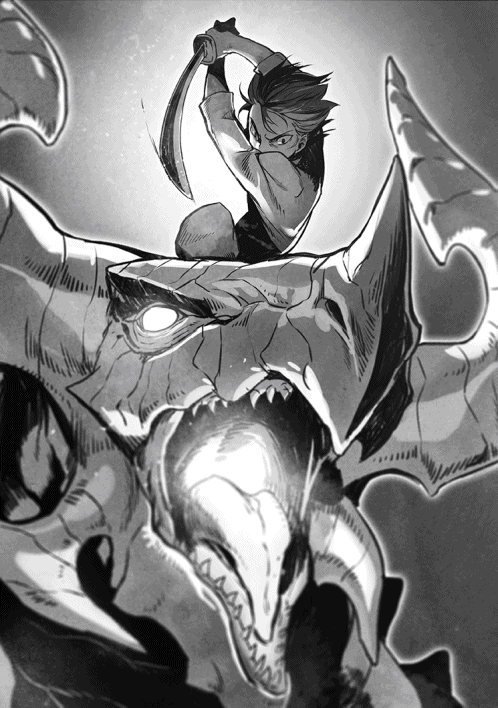
むしろ、最後に逃げてくれて助かったというべきだろう。
ひとまず森の中へ避難したところで、ようやくユキナが追いつき、やや遅れてジェレミーも追いついた。
二人とも暴走する馬が足を止めず、思いがけなく森の奥深くまで入っていたようだ。
そのためか、心配したユキナなどは途中で自ら馬を飛び降り、そのまま走ってきたらしい。
「よかったぁ、おにいちゃんが無事で」
ユキナは、汗だくな以外は全く無事なショウを見て、胸を撫で下ろしていた。
「ふふふ......ユキナちゃんに見せてあげたかったですわね。ショウが身を挺してわたくのために雄々しくドラゴンと戦うところを」
いきなり、思いっきり脚色した自慢など始めようとしたロクサーヌに、ユキナが思いっきり舌を出した。
そんな真似をするのを、ショウも初めて見た気がする。
「べぇえええっだ！」
そのままショウの腕にしがみつき、ぷいっと横を向いてしまう。
「な、なんですか、その態度はっ」
たちまち両手を拳に握りしめ、ロクサーヌが膨れ出す。
しかし、今宵のユキナは機嫌が悪く、彼女を見もしなかった。
「べっつにぃ！」
いつもなら止めるところだが、さすがに今はショウもそんな気分ではなかった。
「とにかく......歩いてでもいいから、森を進もう。ここでのんびり立ってたら、また来ないとも限らない」
反対する者は誰もいなくて、一人だけ馬を引いたジェレミーを先頭にして、全員で森の中を歩き始める。この森は道なき場所とはいえ、蛇行して注意深く歩けば、馬が進むことも可能だった。
「......ドラゴンの生息地は、確かメーヴィング山脈の奥深くだと思ったけどね」
しばらく進むと、ジェレミーが独り言のように言った。
「ああ、俺も養父からそんな話を聞いたな。もはや、人間世界とは袂を分かって、孤高に生きているとか」
「わたくしも父からそう聞かされましたわ」
「ユキナは、他の魔将から『ドラゴンはもう、人里で見ることはない』って聞いたよ」
「いや、みんな正解だろう」
ショウは月夜を見上げてため息をつく。
「多分、前に味方がこの森で異変を感じたってのは、全てあのドラゴンが原因だったんだと思うが──あんなヤツが、広いだけが取り柄のこんな森に引っ越してきたとは、とても思えないね。ただ、一つ思い当たることがある」
ショウは、いつの間にか喧嘩をやめて自分に注目するロクサーヌやユキナ、それに熱心に聞いているジェレミーを順番に見た。
「ソウルバイブルの禁忌魔法には、ビーストコントロールって魔法があるのさ。前に、ギーガン・ロシュフォードも使ってただろ？ まあ、ヤツが操ってたのはオークだけど」
「では、ショウもその気になれば、さっきのドラゴンを支配下に置けるのですかっ」
「いや、そんな自信はないけど、仮にあってもどのみちもう遅いんだ」
勢い込んで訊いたロクサーヌに、ショウは渋面で首を振った。
「あいにく、既に誰かが支配下に治めたドラゴンには、もう何者の声も届かない。術者が死なない限り、奴隷に成り下がったままだ」
「あの──」
そこでユキナがショウを見上げた。
「どうした？」
「さっきは見間違いかもと思ったけど、ユキナが走って戻る途中、誰かが木立の影に立ってた気がするの」
「本当か!?」
ショウはもちろん、全員が足を止めた。
「わからない......マント着けた背中だけを見た気がしたけど、すぐに消えたのよ。それにあの時は、おにいちゃんの元へ戻ることしか考えてなかったから。でも、今の話を聞いたら、やっぱり偶然何かがそう見えたわけじゃないのかもって思って」
「本当に誰かがいたとして、ソウルバイブルを──しかもそんな特殊な術を使えるヤツとなると、そんなゴロゴロいるはずがない」
ショウはひっそりと独白する。
「例えば、グールとか？」
言いにくいことを、ジェレミーがあっさり指摘してくれた。
「元々ソウルバイブル自体、グールの先祖が編み出した魔法なんだよね、確か」
「その通りだな」
ショウはゆっくりと頷く。
「となれば、また来る可能性もありますわね」
静かな森の中を警戒するように見渡しつつ、ロクサーヌが言う。
「なにしろ、別にドラゴンは死んだわけじゃありませんし」
「だろうな......さっきのドラゴンは、元気一杯に逃げただけだし」
ショウは渋々頷いた。
二度とやり合いたくない魔獣だが......そうも行かないのかもしれない。
☆
魔族軍を出奔した者は別だが、まだ魔族軍に残っている者で、グールの存在を確かな事実として信じる者は、極めて少ない。
魔将の一人であるロキは、その少ない一人だった。
そもそもロキは、クリスタリカの「ショウ達反乱軍が父のヴォルザードを殺した」という説明に疑いを持っていた。
そのため、彼の独断で密かにショウの行動を監視していたのだが──これがきっかけとなり、ロキはショウがグールと対決した現場に駆け付けることができたのだ。
グールそのものと出会ったわけではないが、ヴァルマグロス（魔界の帝都）を脱出したノイマンや、既に裏切り者扱いになっている、ヴォルザードの長子ジェイルと再会し、もはやグールの実在とクリスタリカこそが魔族の裏切り者であるという事実を、完全に信じている。
......そのロキは、本来ならとうにヴァルマグロスに帰還しているはずなのだが、なぜか予定がクリスタリカの命令で変更され、途上のルーデンスビルに駐留していた。
以前のように街のホテルを本営代わりとして、ずっと留まっている。
これは、ロキ自身は知らないものの、実はクリスタリカの腹心であるヘンリーが原因だった。
彼が「この男、本当はノイマンなどの同志ではないだろうか」という可能性を考え、クリスタリカに進言して、あえて帰還させないように手を回したのである。
以前、ロキが少数の部隊でショウ達を尾行して、ノックスの森までしつこく追跡したのも、ヘンリーの疑いを深める遠因となっている。クリスタリカ大事のヘンリーにすれば、「限りなくシロに近いとは思うが、疑惑のタネがあるだけでも、調査の必要がある」と思っている。よって、「完全に疑いが晴れるまでは、ロキを帝都から遠ざけておくにしかず」と決断したわけだ。
ここまで用心深い男だからこそ、クリスタリカもヘンリーを腹心として重用しているのである。
後は、ロキの身辺調査をじっくりやるだけ──だったのだが。
しかし......今は、そうも言ってられない状況になってきた。
というのも、アルバランの街周辺を預かる反乱軍のゲインという男が、何をトチ狂ったのか、魔族に対する報復を宣言し、しかもソムニウムの意思を無視し、実際にアルバランから一番近い魔族の街、ラインブルクに侵攻してきた。
もちろん、アルバランでの騒ぎを早くから察知していたヘンリーは、クリスタリカの命令もあって、とうにラインブルクに兵力を集めている。
そのお陰で、このやっかいなゲインと進撃してきた人間共を迎え撃って叩きのめしはしたが......どういうわけか、この情報は瞬く間にヴァルマグロスに広まってしまい、今だ健在な魔将達の怒りを煽ることになった。
彼らのほぼ全員がクリスタリカに面会を求め、「生意気な人間共に思い知らせるべきですっ」などと──丁重に、しかし強固に主張する始末だった。
この懇願を一蹴できるほどにはクリスタリカの権力基盤はまだ強固とは言えず、やむを得ず、彼女は自ら腰を上げることにしたらしい。
「おそらく代筆でヘンリーが書いたんだろうが、その証拠がこれさ」
ヴァルマグロスからの使者が去った後、魔将のロキはホテルの私室に副官を呼び、命令書を見せてやった。
そこには「直ちに駐留軍の半ばを率い、アルバランへと向かわれたし。率いてきた軍勢を駐留軍として街に留めた後、貴公自身は手勢を率い、反乱軍が放棄したアルバラン城を接収した上で、城にてクリスタリカ様の到着を待つように」とある。
文面を二度読み直した副官のアシュレイは、眉をひそめてロキを見返した。
いつも悩むように眉間に縦じわを刻んだ男だが、この時は特に不審そうだった。
「反乱軍を迎え撃ったのは、確かラインブルクの街ではなかったですか？」
「それで合ってるさ。しかし、ヘンリーがラインブルクに送り込んだ将兵に、魔将はいなかった。一番上の地位で千騎士でね。そいつは血気にはやった味方の突き上げを食らい、ゲインを叩きのめした後、そのままアルバランまで逆侵攻して占領しちまったんだ」
「なる......ほど」
アシュレイは、ゆっくりと頷いた後、どこか探るように上官を見た。
実は、彼はロキからショウを尾行した顛末を聞き、さらにグールの実在とクリスタリカの裏切りについても聞かされている。
アシュレイの気性を知るロキが、あえて全てを話したのだが......そのお陰で、彼も今や立派な反クリスタリカ派となっていた。
「この命令文を信じるなら、クリスタリカもアルバランに来るということでしょうね」
アシュレイは、もはや現魔王を呼び捨てにしていた。
「そういうことになる」
わざと声を低め、ロキは頷いた。
「......チャンスかもしれませんね」
上官の期待に応えるように、アシュレイが小さく述べた。
「問題は、まだ我が部隊の全てにクリスタリカの悪行を話したわけじゃないことですね。誰が味方で誰が敵か、全くわかりません」
「その通りだ。しかし、半数は残せとの命令だから、怪しそうなヤツは全部、このルーデンスビルに置いていくことはできる」
そこでロキはため息をつき、天井を仰いだ。
「ただ、命令じゃアルバランの街に部隊を残せとあるから、どうせ城の方でクリスタリカと合流する時には、俺の部隊なんてほとんどいないことになるけどな」
深く考える時によくやるように、癖毛が多い金髪を手で掻きむしる。
「まあ、仮に慎重に策を練って万全の機会を待ったところで、どうせヘンリーの監視の目はどこかに光っているんだろうが──しかし、いつまでも座視しているわけにはいかないだろう」
珍しく微笑みを消し、ロキは底冷えのするような目つきをする。
「別に自分が忠臣だとは思わんが、しかし前陛下を殺されたのを、そのまま見過ごす気はない。賭けてみるべきか」
「私もそう思いますっ」
「ならば、やはりこれは一つの転機かね」
「そうですね、クリスタリカは用心深い女ですから、そうそうわかり易い隙は見せてくれないでしょう。向こうからこっちの手の中に来てくれるというなら、確かに転機です。こちらの兵力が少ないとはいえ、さすがに倒すチャンスくらいはあるでしょう」
「うん」
同意したものの、この時点でもロキにはほのかな疑いがある。
アルバランに自分を送り込むのは、一番あの街に近い場所にいる魔将がロキだからである──と見るのが普通だが、他の可能性が消えたわけではない。
端的にいって、クリスタリカかヘンリーが仕掛けた、何らかの罠かもしれない。
しかしそうは言っても、いつもヴァルマグロスのヴィルヘルム城に籠もっているクリスタリカが、（部隊を率いてくるとはいえ）わざわざ向こうから城を出てくれるのだ。
これほど絶好のチャンスが、そうそう訪れるとは思えなかった。
「......反乱軍にいる、ジェイル様やノイマン殿、それにショウにも連絡を付けるか」
自分の不安を、ロキは策を補強することで埋めようとした。
何もかも自分達でやろうとするのは、そもそも無理があるのだ。
クリスタリカはそこまで甘い相手ではない。今や魔界の全権を握っているとなれば、なおさらである。
「頼るのは心苦しいが、馬鹿なプライドのために、絶対の勝機を逃がすわけにもいかないだろうな」
「よいお考えです！」
アシュレイの声が弾んだ。
「早速、ソムニウムのジェイル様に連絡を取りましょう」
上官の表情を見て、アシュレイはぐっと声を低めた。
「もちろん、くれぐれもヴァルマグロスの連中に気取られないように」
「おーい、俺の命令を先取りするなよ、アシュレイ」
終始厳しい表情だったロキは、ようやくそこで苦笑してみせた。
確かに勘付かれる危険もあれば、失敗する危険もあるだろう。
しかし危険というなら、そもそもこれ以上クリスタリカを放置することの方が、よほど危険なはずだ。
グールの存在が明らかとなりつつある今、クリスタリカは、人間と魔族の双方の敵も同然なのである。
放置しておけば、人間のみならず、魔族の未来にとっても障害となる。
ロキにはそれがわかっているだけに、絶好のチャンスが訪れるというのなら、それを逃すべきではあるまい。
第三章 禁忌魔法の弊害
ソムニウムに帰還したショウ達の元へ、次々と続報が来た。
中でも最大の驚きは、魔将のロキが前魔王の長子ジェイル・ビューゼルシュタインやショウ達に宛てて送ってきた密書で、魔族独自の通信手段を使わず、わざわざ使者を立てて寄越した。
彼は用心深い男らしいが、それでも、今回は作戦を決行するに当たって、齟齬をきたすことがないようにしたかったようだ。
当然、この件でショウ達はジェイルの仮住まいとなっている煉瓦造りの屋敷に集まり、軍議を開いた。
長方形のテーブルに着いたのは一部に過ぎないが、例によってその周囲には主立った者が全員揃っている。
ショウがまず議題として掲げたのは、「クリスタリカがアルバランを訪れるのに乗じ、あの女を討つつもりです」というロキの決意と反乱軍への協力要請である。
出会った時の印象では、彼はかなり慎重な男だと思ったのだが、随分と思い切った手に出たものだと思う。
ただ、ロキをよく知る魔将のノイマン──彼もまた反クリスタリカ派で、ヴァルマグロスを脱出して、今はジェイルの元へ身を寄せているのだが──その彼が太鼓判を押してくれた。
「いや、ロキ殿はそういう男ですよ。決意するまで時間はかかりますが、一度決意すると迷わぬ男です」
思慮深そうな表情に強固な自信を漂わせ、ノイマンはきっぱり言い切った。
「なるほど」
ショウは考え込み、今度は正面に座すジェイルを、それに兄のそばに座すロクサーヌを、順番に見つめた。
「貴方やロクサーヌは、クリスタリカを倒すことに異議はないわけですね？」
「ない！ 父殺しとなった時点で、ヤツは我が宿敵となった」
「わたくしも、今度は迷いませんっ」
兄妹揃って断言したが、ショウは特にロクサーヌの顔をじっと見つめる。
しかし、彼女は決然とした表情でショウを見返し、目を逸らすことがなかった。どうやら決意は本物らしい。
慎重なショウも、ここに至って決断した。
「わかりました。確かに情報統制してグールの情報を遮断し、ひたすら自己の利を追い求めるクリスタリカは、仮にグールの実在を知ったところで態度を変えはしますまい。そういうことなら、俺もアルバランでクリスタリカを攻めるという案に賛成します」
この瞬間、室内は戦士達のざわめきで満ちた。
クリスタリカが全ての罪を反乱軍になすりつけたことについては、誰しも憤慨していたからだ。実を言うと、今に至るもその悪影響を完全に脱したとは言えない。今もまだ、あの女が垂れ流す大嘘の情報を一部、あるいは全部信じている人間も多い。これは、敵味方を問わずにだ。
「ただ、アルバランに向かうのはいいとして、俺から一つ提案があります」
ショウはここで、自分の斜め後ろにひっそりと立つ、リシャールを見た。
彼はいつもの地味なローブ姿であり、一人だけ仮面で両目を隠しているせいか、部屋の中ではかなり浮いていた。
「......リシャール、以前のあんたの提案を受けようと思う」
言われたリシャールは、すぐには返事をせず、黙したままショウを見つめ返した。
彼が無言なせいか、最初からずっと退屈そうにしていたデイルが口を挟んだ。
「なんだよ、提案って？」
「ソウルバイブルを、希望者に習得させようってことさ」
ためらいを振り切るように告げると、デイルは一瞬灰色の目を大きく見開いたかと思うと、次に喜色満面で叫んだ。
「おお、きたきたあっ。ついに俺も、魔剣持ちに加えて、最強魔法使いになるのかっ」
ショウの斜め前で、万歳をするように両手を上げる。
ざわついた周囲と違って、態度が明確過ぎるほど明確だった。
「いや......そもそも覚えられるかどうかって問題があるんだけどな、魔法には。普通の魔法だって、いくら習得しようとしても、発動しない場合の方が多いから」
「いやぁ、他ならぬ俺なら大丈夫だろっ」
どこからそんな自信が湧いて出るのか、デイルの強気発言は微塵も揺らがなかった。
「い、言っておくけど、これはそんなありがたいものじゃないぞ」
あまりにもデイルが軽いので、やむなくショウはきっちり警告した。ちゃんと教えておかないと、後で「話が違うっ」などと言われても困る。
「まず、ソウルバイブルは普通の魔法と大きく違う。あの偽ヒーローのギーガン・ロシュフォードは知らずに使っていたようだが......おそらく使えば使うほど、本人の寿命を削ることになるはずだ。俺には確信があるんだ」
念のため、リシャールを振り向くと、彼もゆっくりと頷いた。
「その通り。なるべくなら、使わないに越したことはない。術の強弱にもよるが、高度なものになればなるほど、肉体と魂に負担をかける。そして最後には魂が摩耗して、術者自身が倒れることになるだろう......ソウルバイブルという名称は伊達じゃないんだ」
リシャールは、あえて詳しく説明してくれた。
「そのギーガンとやらに会ったことはないが、ショウに聞いた限りでは、その時点で彼は残りの寿命をほとんど使い切っていたはずだ。彼は写本を元にソウルバイブルを覚えたそうだが、それが誤りなのさ。この魔法は自らの魂で習得するものであって、知識として読んで得るものではないんだよ。正規の道を経ずして魔法の上面だけを習得すると、心身共に負担が倍増してしまう」
そこで一拍置き、彼は確信の籠もった声音で言う。
「別に反乱に失敗しなかったとしても、そのギーガンとやらは、もう亡くなっていただろうね。......ソウルバイブルに生命力を吸い取られて」
さすがに部屋の中が静まり返った。
唯一デイルのみが、「そ、そうだったのか......俺ぁまた、なんでショウもギーガンみたいにザクザク人工兵士を量産しないのかと思ってたぜ」などと、人の気も知らずにほざいてくれた。
「派手な術と引き替えに命を落としてちゃ、反乱どころじゃないだろう。あいつだって、知ってりゃもう少し考えたはずだ──いや、それ以前に、ソウルバイブルの写本を投げ捨てるべきだったんだがな」
不機嫌にショウは言い返す。
「あの石板のようなソウルバイブルの欠片を手にした時点で、俺は教えられなくてもわかっていたんだ。この魔法は生半可なやり方で記憶したところで、命を縮めるだけの結果に終わるってな。......まあ、ちゃんと覚えたところで、やっぱり魂を削るのは避けられないわけだけど」
そこで、ずっとショウの態度を見守っていたジェレミーが述べた。
「それでも君は決断したわけだ？」
「あくまで、習得は希望者に限るけどな......ああ、そういうことだ」
どうにもならない苛立ちのせいで、テーブルの上を掌で軽く叩く。
「アルバラン周辺を守っていたゲインが暴走したのは、明らかにグールが彼を支配下に置いたためだ。そんな嫌な力を使うグールを相手に、尋常な手段では勝てない。ソウルバイブルを習得しても危険は付いて回るが、少なくとも魔法抵抗力は格段に増す」
「それに、あのドラゴンもまだいるよ、おにいちゃん」
ちゃっかり左横に座ったユキナが、思い出させるように言ってくれた。
「それと、あのクリスタリカも、ソ、ソウルバイブルを使うし」
自分が幻術を食らった時のことを思い出したのか、そこでユキナはぶるっと肩を震わせた。
クリスタリカがソウルバイブルを知ることについては、初耳だった者が多いらしく、ここでまたざわめきが洩れた。
「そう、あのめんどくさいクリスタリカもいるし、さらにはブラックドラゴンもいる。特にあのドラゴンは、どうせまたいつか襲ってくるだろう。グールのヤツら、わざわざメーヴィング山脈の奥に潜んでいたドラゴンを見つけて、引きずり出してきやがった」
うんざりして言うと、座りきれないほど部屋に詰めかけた仲間が、全員顔を見合わせた。
ドラゴンの実在を疑う者はいないが、いかんせん、実際に目にしたものは少ない。そんな希少種までグールが手駒にしたと知り、改めて驚いているのだろう。
「そんなわけで、俺達も力を付けなきゃいけないってことだ......どんなに気が進まなくてもな」
わざと深沈とした声で言ったせいか、室内はしわぶき一つ聞こえないほどだったが。
その中で、あえて立場を表明した者がいる。
「希望者には習得させるということでしたね、ショウ？」
右隣に座るユウリが、張りのある声で言った。
「いや待てっ。ユウリも少し考えてから」
人が忠告しようとしているのに、遮るように言ってくれた。
「この身が習得できるかはわかりませんが、私は断固として希望します」
「いやだから──」
「ああ、出遅れちゃった！ ユキナも希望するわ、はいはいっ」
たちまち焦ったようにユキナが両手を上げ、上座でジェイルと座っていたロクサーヌが叫んだ。
「ちょっと待ってください！ 人のセリフを先取りしないでくださいましっ。当然、わたくしが一番でしょうっ」
「おいこら、遊びじゃないぞおっ」
ショウは思わず怒鳴りそうになったが、途中でなぜか周囲の騒ぎを無視して頭を抱えているデイルに気付き、顔をしかめた。
「なんだよ、なんか言いたいことでもあるのか、デイルっ」
「いや、そのな」
デイルは顔を上げてショウ──ではなく、その横に座すユウリのドレスの胸元辺りを眺めつつ、難しい表情で腕組などした。
「俺は今、命惜しさとプライドと煩悩を、心の計りにかけているところでな。しばし待ってくれ」
......何が「しばし待ってくれ」かと。
「意味がわからんぞ！」
「僕はわかる気がするねぇ」
一人だけ愉快そうに、ジェレミーが言う。
「要するに、女性絡みってことさ......でもって、最後は煩悩が勝つと。どうせ何をしたって、予約済みなのにねぇ」
例によって、他人事のようにけらけら笑った。
「う、うるせえぞ、てめえっ」
図星だったらしく、デイルが喚いた。
「ショウだって、三人いっぺんに毎晩がんばるわけにはいかんだろうが、ええっ!?」
「......おまえ、この深刻な状況がわかってるか？」
ショウは自分こそ頭を抱えたくなった。
☆
ソウルバイブルは危険だと口を酸っぱくして説明した上、「その上でなお覚えたい者はいるか」と希望者を募ったところ、呆れたことにソムニウムに集う戦士の七割くらいが希望を申し出た。
しかも、この数字はウォーリア以外の戦士もまとめた統計なので、ウォーリアのみに限って言えば、九割以上が「希望する！」と申し出ている。
さすがは命知らずの戦いの専門家であり、「わしは剣のみで戦うのが流儀っ」といったよほどの変わり種以外は、ほぼ全員が希望したと言っても過言ではないかもしれない。
ショウは別の意味で頭が痛くなったが、とにかく以前、ロクサーヌ達と地下で謎の空間を見つけた、エクス神殿跡に希望者を集めた。
ただし、いっぺんに押し寄せられても困るので、まずは百名を選んで来てもらったわけだ。上手く行くようなら、翌日から人数を増やして続々と試す予定である。
もちろん、地下の遺跡に散っていた死骸の数々は、この試みの前にショウを始めとするウォーリアの有志が手分けして運び出し、埋葬している。
いくらなんでも、死体が散らばる中で習得の試みなどしていられないからだ。
最初のメンバーには、ショウの仲間がほぼ全員、顔を揃えていた。
魔族からはジェイル・ビューゼルシュタインまで顔を見せていて、今も前の方で微笑して立っている。
魔王の長子だったプライドもあるし、辞退するのではないかと思ったショウの予想は、あっさり外れた。
「......そんないいものじゃないと言うのに」
この期に及んでぶつぶつボヤきながら、ショウは床の穴を見やる。
綺麗に塞がれていたはずの床は、リシャールによって再び開放──早い話が破壊して道を空けられ、地下へ下りるやたら長い階段が露出している。
もちろん、あの地下遺跡へ至る道である（ちなみにショウが地下へ降りたあの夜、後で床を塞いだのも、やはりリシャールだったらしい）。
気は進まなかったが、ショウはここでも、屋根が半ば崩落して瓦礫が散らばり放題の神殿に立ち、皆を前に説明した。
それは主に、以前同じこの場所でロクサーヌ達に語って聞かせた話と同じである。
そもそもソウルバイブルを禁忌魔法としたのが、前の魔王であるヴォルザードその人であり、「あまりにも危険だから」というのがその理由らしい──というところから始め、自分の知る限りの事実を教えてやった。
「......最後に言っておくと、普通の魔法はマナを魔力に変換して使うものだが、ソウルバイブルが力の源としているのは、おそらく俺達が潜在的に持つ力そのものだ。俺はかつて、養父から受け継いだ石版によって、ソウルバイブルの初歩を知ったが、ここの地下にある遺跡は、要するにあの石版と同じ役割を果たすんだと思う。個人の才能に応じて、ソウルバイブルへの道を開く......多分、そういう意図があるんだろう」
そこまで話すと、眼前に集まった人間と魔族の集団の中から、先生に質問する生徒よろしく、ジェレミーが手を上げた。
「今の話の中で、旧ロンザリア帝国のクラウス王が、魔王ヴォルザードが発見したこの遺跡に興味を持ち、探索の手を伸ばしたと言ったね？ しかも、彼が派遣した遺跡調査員は例外なく全員が恐怖に顔を歪めて死んでいたと？」
「その通り。その後何度やっても同じ結果だったからこそ、当時のクラウス王はこの遺跡を封印し、しかもそれだけじゃ飽き足らず、その上にこのエクス神殿をぶっ建てたのさ。これは、エクス神信徒の街が始まりだった、このソムニウムができた遠因でもある。おそらくクラウス王は、ソウルバイブルが自分達の手に負えないことを悟り、間違っても他の誰かが利用できないよう、遺跡そのものを隠そうとしたんだ」
さらにジェレミーが何か言おうとしたが、ショウは彼を目で抑えた。
何を訊きたいのかは、よくわかるからだ。
「その辺りの事情は、俺よりリシャールの方が詳しい。俺も後で彼に訊いたことだ」
珍しく、ローブ姿ではなくかっちりしたスーツ姿のリシャールを手招きする。
ただ、マスクを着けているのは同じなので、やはり一人だけこの場から浮いているように見えるのは仕方ない。
「クラウス王の頃には、地下の遺跡は調整されずに放置されてたんだよ」
リシャールは端的に述べた。
「つまり、本来は才能に応じて力への扉を開く仕組みなのに、誰が来ても奥義に近いような、ソウルバイブルの上級術を押し付けようとしていたのさ」
彼はため息をつき、首を振った。
「おそらく、超古代にこの地下施設を建造した我が先祖は、何らかの事情でこの大陸を去るにあたり、このシステム──つまり遺跡を隠し、なおかつ念のためにそんな措置をしていったのだろう。当然ながら、ただでさえ究極とも言えるソウルバイブルの上級魔法を、無制限に与えることなど不可能なんだ。それは、まだ歩くことを知らない赤ん坊に、全力疾走を強制するのも同然だ。......誰が来ても全滅に終わったのは、それが原因だろうと思うね」
「お、俺達も死ぬ可能性があるってか？」
いきなり腰が引けたデイルの質問に、リシャールは笑い声を立てた。
「はははっ。いやいや、それはもうないよ。以前、ショウ君達が入った時だって、実はその前に私がまずこの遺跡に入っているのさ。......あのペンダントは、壁や床の向こうに何かがあるとわかれば、別に行ったことがなくてもその場で跳べるからね」
心配そうにざわついた皆を、安堵させるように頷く。
「あの時はショウ君と融合したソウルバイブルの石版に反応して、彼だけにシステムが反応するよう調整しておいたが。今はそういう制限もないし、目に余る危険もない。古代の文献を当たって、ちゃんとそれぞれの力量に応じて心の鍵を開くようにしてある。言うまでもないが、まだ負担が大きすぎると遺跡のシステムが判断した場合、習得は不可能だけれどね。少なくとも死ぬことはない、うん」
そこで思い出したように付け加える。
「それと、最初に遺跡のシステムから二つほど質問されるけど、その質問に嘘はつかないように。どうせバレる仕組みになっているからね」
一通り説明を終えたところで、今度は珍しくジェイルが質問した。
「鍵を開くとはどういうことかな？」
「あ、申し訳ない。私の言い回しだけどね、これは」
不気味な仮面姿のまま、リシャールは照れたように笑う。
「ソウルバイブルについては、私にもわからないことが多い。ただ、ショウ君が先程言ったように、私もこの魔法は、人が最初から持つ力を元にしていると確信している。ほとんどの者はそれに気付かぬまま一生を終えるんだろうけど、元々人間は巨大な力を秘めているのさ。この遺跡はその力に気付かせるのが役割のようなもので、その意味で鍵を開くと言ったわけだよ」
「人間じゃないと駄目ってことはないわね？」
今度は随分と心配そうにユウリが訊いた。「えっ？」という顔をして皆がユウリを見ようとしたが、幸い、ロクサーヌがすぐに大声を出した。
「あ、同じく魔族もっ」
「関係ないと思うね。そもそも、グールだって厳密には人間じゃないので」
おどけたようにリシャールが両手を広げ、皆の笑いを誘った。
余談だが、ショウの見るところ、最近のリシャールはその人柄が広く知られてきたせいか、以前より彼を忌避する者が減ったように思う。
「よぉおおおし、そんだけ訊けば上等だっ」
さっきまで腰が引けていたデイルが、いつの間にか最前列にいて、ガッツポーズを取っていた。
「とっとと現場に案内して、俺を速攻で最強魔法戦士にしてくれ」
「......最強はともかく、じゃあそろそろ降りるかな」
リシャールがショウを振り返り、ショウも頷く。
「言い忘れたけど」
ショウは慌てて声を張り上げた。
「下まで長いし、亡骸を片付けたとはいえ、まだかなり臭いは残っている。そこは我慢してくれ」
ありがたくない注意に、また周囲がざわついたが、少なくとも踵を返して去ろうとした者は誰もいなかった。
魔族もそうだが、ウォーリアも死臭くらいではいちいち怯えたりしない。ただ、ロクサーヌは発見したあの夜を思い出したのか、顔をしかめていた。
リシャールを先頭に、皆がぞろぞろと階段を下りていくのを、ショウは渋面で眺めた。本来なら止めたいところだが......グールを相手にしては、武装を強化したくらいでは、不足だろう。
やはり、それなりに皆が力を付ける必要がある。
「......ダルトンやザックのような犠牲を出すのは、もう願い下げだしな」
ショウがむっつりと呟くと、ふいに軽やかな足音がして、ユキナが駆けてきた。
「おにいちゃん！」
「お、どうした──」
こちらにぶつかりそうな勢いで走ってきた妹を迎えようと、ショウは慌てて両手を広げたのだが。
「わわっ」
胸の中に飛び込んできたユキナは、そのまま背伸びして素早く口付けし、照れたように微笑んだ。
「勇気をもらわないとねっ」
「ゆ、勇気って」
ショウの方が慌てたが、赤くなったユキナは、そのまま列に駆け戻るところだった。幸いにして、ユウリとロクサーヌは既に階段の下で、今のを目撃はしていなかったようだ。
その代わり、たまたま今の光景を目撃していたウォーリア仲間が、手を叩いて囃してくれた。
「相変わらず、盛んだねぇ、帝王はっ」
「よっ、女殺し！」
「憎いよ、この色男ぉお」
「死ねや、このエロガキがあああっ（デイル）」
「う、うるさいわっ。おまえらも気楽に笑ってないで、せいぜい本番でチビらないように覚悟しとけよっ」
逆に脅してやったが、連中はゲラゲラ笑っているだけである。
戦いが生業だったウォーリアを怯えさせるのは、なかなか難しいようである。
そのままエクス神殿の地上で待つ間は、それこそ生きた心地がしなかったのだが......時が経つにつれ、少しずつ人が戻ってきた。
意外と礼儀正しいところがあるのか、それとも人間に気を遣ったのか、あのジェイルは順番でいうとかなり最後の方だったし、それにユウリやロクサーヌ達もしかりである。当然、妹のユキナなどはよほど最後にあたり、ショウは一人で気を揉んでいた。
......というのも、階段を上って戻ってくる連中の大半が、不満そうな顔をしていたからだ。
「お、俺の才能値が不足たぁ、どういうこった！」とか「究極の目標はハーレムっ、のどこが悪いんでぇっ」などといったろくでもない呟きが聞こえてくるか、あるいは黙ったまま膨れっ面で去って行く者が多かった。
......どうでもいいが、呟いた内容は、おそらくシステムが希望者に与えた言葉のことだろう。ショウにも覚えがある。
要するに「おまえは習得不可とは何事だよ、クソがっ！」ということだろうが......それにしても、想像以上に成功例が少ない。
たまにやたらとはしゃいだ足取りで戻ってくるヤツもいるが、そういうのは大抵、ショウも名を知るやり手のウォーリアが多かった。
彼らがどの程度の力に目覚めたのかは知らないが、数は少ないものの、そういう連中は例外なくショウを見て、ぐっと親指を立てたり、ニカッと破顔したりした。
「......あのイカサマなシステムなんかアテになるのかと思ったんだが、こうして見てると、実際に実力者はパスしてるみたいだな」
少々感心したところで、今度は下手くそなガラガラ声で歌う声と共に、最後は「イィイイイヤッホォオオオオ」という脳天気過ぎる叫び声がして、デイルが階段から走り出て来た。しまいには大きく片手を天に突き上げ、ジャンプまでしてくれた。
そのまま、真っ直ぐショウの元へ駆け寄ると、いきなり哄笑を始める。
「うわっはっは！ これで俺もおまえに追いついたなっ。いや、むしろ追い抜いたな！」
「前言撤回だ......やっぱりあれ、全然アテにならん気がするな」
ショウはてきめんに渋面になり、両手に美女を抱いたような緩みまくった笑みのデイルを見た。
「で、得たソウルバイブルは？」
「おうっ。とりあえずファイヤーボムってのを使える感じだ。あの辛気くさい部屋、すげーなっ。入る前は全然知らなかったのに、今やちゃんと、体内で力を解放するコツや、その時の感覚まで頭の中にあるぜいっ」
「ああ、やっぱり初歩からか」
少しほっとして、ショウは呟いた。
「ナントカに刃物って言うしな......自分で勧めておいてなんだが、その程度から始めてもらうのがいいような」
「なんだとおっ。燃やされたいんか、おいっ」
鼻息も荒く喚かれたが、ショウは無視した。
それより、他の仲間がどうなったかの方が気になる。
......しかし、ショウの心配をよそに、少なくともあの時のショウが経験したような得体の知れない痛みを感じた者は皆無だったらしい。
以後続々と戻ってきた他の仲間からも、そういう話は一切聞かなかった。
「......ただ、関係者が全員習得できたのは、喜ぶべきことなのかねぇ」
例外なくニコニコと笑うユキナ達を見渡し、ショウは一人で顔をしかめる。
習得した魔法はそれぞれの才能によって違いはあるが、誰も彼も宝でも得たように思っているように見える。
ショウに言わせれば、知らずに済むならその方がいいに決まっているのに。
「あれ、デイルは？」
いつの間にか姿が見えなくなっているのに気付き、ショウはジェレミーに尋ねた。
「ああ、彼なら......覚え立ての魔法を試すんだって、さっき満面の笑みで神殿を走り出て行ったけど？」
ジェレミーが口元だけで笑って言ってくれた。
「うわぁ」
本気で頭を抱えてしまい、ショウは呻いた。
満面の笑みでというところが、特に嫌過ぎる。光景が目に浮かぶようではないか！
「だから嫌だったんだよなあ！ 子供のおもちゃじゃないぞっ」
「あの人のことは置いて」
ユウリが慰めるように、ショウの肩に手を置いた。
「今度はショウの番ですよ」
「う......そうだな」
元より、最初からそのつもりで来ているのだ。
大きく息を吸い込んでから、ショウもまた、見覚えのある地下の階段を下りていった。
ショウは一人で地下まで階段を下り、見覚えのある真っ黒な金属──に見える何かで覆われた部屋に入った。
相変わらず味も素っ気もない部屋であり、周囲は全て光沢のある黒い金属で覆われている。入口のそばに、一人で残っていたリシャールが「中央に微かな印がある。そこに立つといいよ」と教えてくれた。
「この奥にも部屋がある気がしたんだがなぁ」
「実際、あるとも」
リシャールはあっさり白状してくれた。
「壁の向こうが調整室のような場所になっているのさ。私もペンダントの力がなきゃ、入れなかったな。どうやら太古の先祖は、壁ごときは問題なく転移できたらしい」
そこで振り向いたショウに肩をすくめて見せる。
「でも、調整はもう済んでるよ。今のシステムは極めて安全だ。中央に立っても大丈夫」
「心配はしてないって」
ショウは苦笑して中央に歩み寄る。
言われてみれば、確かに教えられないとわからない小さな十字形の印が、部屋の中央にあった。
もう一度深呼吸した後、ショウはその印の上に立つ。
警戒していたが、あの夜のように、自分と一体化したソウルバイブルが光の渦となって飛び出すことはなかった。上で説明する時にリシャールがほのめかした通り、あれはショウのみにシステムが反応するよう、彼が設定しておいた結果なのだろう。
そして、すぐに四方の壁からショウに光が集まり──そのまましばらく時間が過ぎた。
以前はほぼ間を置かずに声が聞こえたのだが、今回はあの時に聞いた謎の声がなかなか聞こえない。
よほど時間が過ぎ、ショウが振り返ってリシャールに様子を訊こうかと思った頃、ようやく聞き覚えのある声がした。
『汝はソウルバイブルの奥義に迫りつつある。才能値は十分だが、これ以上の制限解除は、場合によっては命に関わることもあるだろう。命の危険を考えれば、ここで満足した方がよいと思うが』
ショウは思わず眉根を寄せた。
今回は、余計な質問は抜きにして、いきなり不思議なことを言うと思ったのだ。
このシステムは一種のマシンに過ぎないと思っていたが、恐ろしく人間臭い忠告をするものだ。あるいは当時これを創造した術者の付与魔力が、未だにこの場所に残留思念となって残っているのかもしれない。
「いや、俺は先へ進むよ」
穏やかに、しかしきっぱりとショウは言い切った。
「自分だけのためなら、いつ引き返してもよかった。でも、今戦っているのは自分も含めた仲間全員のためだからな......立ち止まっていられないんだ」
声に出して言ったが、返事はしばらくなかった。
またしても長い間が開き、ようやく声が答えた。
『あえて困難な道を選んだ汝に、祝福あれ！ 汝には奥義を得る資格がある。望みに従い、全ての制限を解除しよう』
「うわっ」
途端に、頭の中が真っ白になり、光で埋め尽くされた気がした。
そう、今度は周囲の壁ではなく、間違いなく内部で光が弾けたのだ。それは何となく、何年も前に自分と一体化した石版が元になっていた気がするが、確かなことはわからない。とにかく、脳裏を乱舞する光はショウの視界にまで影響を及ぼし、何一つ見えなくなってしまっていた。
「ショウ君っ」
どこか遠くでリシャールの声がしたような気がしたが、答える余裕もなく、ショウは意識を失っていた。
次に目覚めた時は、夕日で茜色に染め上げられた、地上のエクス神殿跡に戻っていた。
ショウはユウリに膝枕されていて、不満そうな顔ながら、その後ろにはロクサーヌとユキナの姿も見える。
女性達の後ろにちゃんとリシャールもいて、ショウと目が合うと頷いて見せた。
「がっかりさせて悪いが、君をここまで背負って上がったのは、私だよ」
「そりゃ苦労かけた」
ショウは憮然として答えた。
少し惜しかったものの、ゆっくりと上半身を起こし、その場に座り込む。まだすぐに立たない方がいい気がしたので、あぐら座りの姿勢になった。
「それで、何があったか訊いていいかな？ 実のところ私も、光が消えた後に君が急に倒れたから、驚いたんだ」
「いやそれが──前と同じ声に、奥義を授けると言われたな」
「よかったではないですか！」
ユウリが一番に声を上げ、ロクサーヌとユキナがそれに続いた。
「やったね、おにちゃんっ」
「さすがは無冠の帝王ですわっ」
「......せっかく忘れかけていたんだから、もうその寒いリングネームは、やめてくれ」
ショウは特にロクサーヌに顔をしかめて見せ、ようやくもう大丈夫と見て、そろそろと立ち上がった。まだ頭がじんじんしているが、少なくとも目立つ悪影響はないようだ。この分なら、すぐに回復するだろう。
「あれ、別に本を読んだわけじゃないのに、頭に染み込むように知識が入ってくるね」
ユキナが興奮気味にショウの腕を取る。
「才能値っていうのをクリアする必要と、どうして力が欲しいのかっていう質問があったけど──条件がそれだけなら、かなり便利なシステムじゃない？ おにいちゃんも新しい魔法を覚えたの？」
「......覚えたことは覚えたけど、世の中に美味い話はないって実感した。こりゃ、できることなら使わない方がいいだろう」
ショウは改めてユキナとロクサーヌとユウリを順番に見やり、厳命しておいた。
「他のみんなも......なるべくなら使わないことをお勧めする。名前通り、この魔法は本当に魂というか、生命力を削るぞ。根源は自分の力なんだからな」
そこでようやく、リシャールが棒を飲み込んだような姿勢で立ち尽くしているのに気付いた。
「なんだよ？ おまえも何か言いたいことでも？」
「いや......少し驚いただけだ」
リシャールは大きく息を吐いた。
「私の知る限りでは、仲間内でソウルバイブルの奥義を会得できたのは、ヴェルマだけのはずなんだ。君は既に、私よりあの禁忌魔法に精通したようだよ」
「多分、羨ましがることじゃないと思うぞ」
ショウはにこりともせずに言ったものである。
「後悔はしてないけど、なんとなく抜き身の刀を飲み込んだような気分だ。人の手に余る力だな、これは......正直、あの遺跡も封印した方がいいような気がする」
声の調子から完全に本気の独白だとわかったのだろう。
リシャールを始めとして、四人揃って驚いたように顔を見合わせていた。
☆
リシャールの言い方を借りれば、あの地下遺跡で「心の鍵を開かれ」てソウルバイブルを習得したのは、希望者の一割にも満たなかった。
しかも、そのほとんどは初級とも言うべき魔法だったのだが──ショウが口を酸っぱくして「なるべくなら使わない方がいい」と忠告したにもかかわらず、その日の夜から早速、手痛いしっぺ返しの事例が頻発した。
つまり、「せっかく便利な魔法を覚えたんだし、いっちょ試すか！」と思ったのは、何もデイルだけに限らなかったのだ。
曲がりなりにも習得した仲間の多くが、その夜のうちにもう試してみたらしい。
もちろん、人気のない場所でこっそり魔法を発動したのだが──。
夜が明けるまで、やれ「どこそこで火が出た」とか「大きな音で叩き起こされた」とか「雷鳴みたいなのが空を走った」などの事件で、ソムニウムはずっと騒がしかった。
おまけに、夜が明けたら明けたで、「デイルが路上でゲロ吐いて目を回している!?」という通報をきっかけにして、続々と似たような報告がショウの元に寄せられた。
もちろんそれらは全て、ソウルバイブルを試したことによる、手痛い教訓である。加減がわからぬ最初のうちは、ショウも同じ経験をしたのでよくわかるのだ。
もっとも、この魔法は慣れたところで、使った後に出る喪失感と脱力感、それに場合によっては胸の苦しみにも襲われるから、いいことは一つもない。力には代償が伴うという言葉を地で行くのが、このソウルバイブルという魔法なのだ。
それでもショウはこの危険な試みを中止することはせず、希望者の全員が試すまで、地下遺跡への道を閉ざすことはなかった。
ただ、最後の希望者が地下で試した時点でも、やはり「全体の一割以下」という習得率は変わらなかった。そのうちで、さらに初級以上の攻撃魔法を取得した者というと、ショウが訊いて回った限りでは、ユウリ以外にはいなかった。
ショウとユウリはある意味では一蓮托生も同然なので、これはまだ許容範囲だったかもしれない。ただし、ロクサーヌやユキナは大いに膨れていたが。
そして、ショウ達がソムニウムで戦いの準備をしている間にも、事態はめまぐるしく動いていた。
魔族軍では臣下達である魔将の「強い希望」を受け、ついにクリスタリカが重い腰を上げ、四千の軍勢を率いてヴァルマグロスを出陣したのだ。
新魔王としての最初の親征であり、彼女率いる魔族の精鋭は、続々とメーヴィング山脈を越えつつあるとの情報が入った。
さらに、アルバラン城を接収して守備しているロキからジェイルに密使が来て、クリスタリカがアルバランを訪れる正式な日時が決まったと教えてくれた。
彼の知らせによると、クリスタリカ自身は街へは立ち寄らず、その近くのアルバラン城に腰を据え、そこを侵攻軍の本拠とするつもりらしいとある。
この一報を聞いたショウはすぐに自分の家で軍議を開いたが──今回はいつもと違い、ごく少数の仲間内のみを集め、作戦を明かした。
「クリスタリカがアルバランの街ではなく、その付近の城へ籠もっちまうのは痛かったが、
しかし、それ以外は全て、魔将のロキから事前に連絡があった通りだ」
ぐるっとテーブル上を見渡し、ショウは全員の顔を一人ずつ見ていった。
全員の覚悟が定まっているのを目で確かめ、ショウはずばり告げる。
「俺達はあいつの軍勢に応戦するために北上すると見せかけ、その実、アルバラン城に侵入してクリスタリカを討つ！」
「よしっ。今度こそ、前回のような不発はあるまい」
正面に座ったジェイルがまずは声を張り上げる。
「この僕自身で不肖の妹を倒し、魔族を目覚めさせてくれよう」
彼を始めとして、この場にいた全員が声を上げ、決意を新たにした。
ショウはその場で席を立ち、リーダーとしての号令を下した。
「ならば、出陣だ！」
『おぉーーーーーっ』
数は少ないながら、皆の声が唱和した。
☆
魔族の帝都、ヴァルマグロスを出たクリスタリカは、メーヴィング山脈を越え、まずはその麓の街、リンデルに宿を取った。
当然、民家も全て接収しての滞在だったが、クリスタリカ自身は街のホテルに逗留し、夜には早速、腹心のヘンリーを呼んでいる。
「お呼びでしょうか、クリスタリカ様」
ヘンリーはいつもの執務机ではなく、ソファーに足を組んで座る主君の前で、深々と一礼する。
短いスカートの奥に目が行きそうになるのを我慢するのが、かなり大変だった。
「そんな物欲しそうな顔してないで、横に座りなさい」
「よ、よろしいのですか」
言われた通り、いそいそとヘンリーはクリスタリカの横に座る。すると、そこで当然のように肩に腕を回された。こういう仕草は男がするものではないかと思うが、彼女らしいとも言えるかもしれない。
「おまえのことだから、既にロキのことは調べてあるわよね」
「ええと、アルバラン城の守備をお命じになった、ロキ様ですね？」
「そう、まさにあいつのことよ」
顔の至近から意味ありげに微笑され、ヘンリーは思わず内股になってしまった。無論、タキシード姿で妙な真似はできないが、密着されると意識してたまらない。
「ヘンリー？」
「は、はいっ、聞いていますとも」
慌てて目を瞬き、ヘンリーは即答した。
「調査はしましたが、特に怪しい点はありませんね。彼はまごう事なきシロで、我々の側か──あるいは、この僕にも悟らせないくらい、用心深い方かのどちらかでしょう」
「ふふん？」
微妙な言い方をした後、クリスタリカは妙な質問を投げかけた。
「このあたしが、どうしてあのロキにアルバラン城の守備を命じたと思う？ 疑い深いあたしにしては、意外だとは思わなかった」
実はロキに命令書を代筆して送ったとき、まさにヘンリーは意外に思っていたので、まじまじとクリスタリカを見つめ返した。
見開かれた薄赤い瞳が、ゆっくりと真紅に変化していくのを、魅入られたように見つめてしまった。
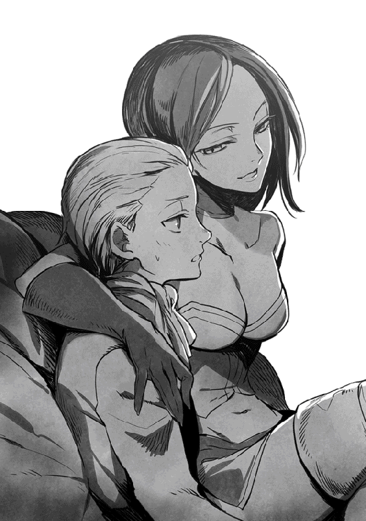
「いくら調査しても、何も出なかった。それはそれでいいのよ、ええ。おそらく彼はシロなのでしょうね。現実に怪しい点が見つからないというのなら。でも、あたしもおまえも、一度はあいつを怪しいと思った......違う？」
「ち、違いません。彼を調べるべきだと進言したのは、僕ですし」
「もちろん覚えていますとも。その時、あたしは思ったものよ......ああ、こいつはちゃんとわかっているなと」
ヘンリーの耳元で、クリスタリカが囁く......まるで毒を吹き込むように。
「さあ、ヘンリー。ここまで言えば、あたしと付き合いの長いおまえなら──あたしの考えがわかるわよね？」
睦言のように囁かれ、浅ましくヘンリーの喉が鳴った。そうか......さすがはクリスタリカ様だと思った。
この方は、おそらく最初からそのつもりでいたのだろう。
やはり、悪のカリスマともいうべき女性だ。
第四章 クリスタリカの罠
霜が降り、冬の訪れが確実となった朝、ショウ達はソムニウムを出陣した（と公式に宣言した）。
今回は、ショウ達が魔族の迎撃に出るのが当然なので、軍勢を小分けにしてカムフラージュするような真似はせず、二千の部隊が堂々と街の門を出た。
ただし、反乱軍のリーダーであるショウは、本陣代わりの馬車に乗り、仲間の前にはほぼ姿を見せずにいる。
進軍中は、主に馬車の中で作戦を練っているからだ──ということにした。
もちろん、戦の目的として公に掲げているのは「現地の反乱軍と合流し、アルバランの街を奪還する！」というものであり、間違ってもアルバラン城を攻めるなどとは言わない。
ただし、出陣した軍勢のうち、一部は途中で夜陰に紛れ、そっと軍列を離れる手はずになっている。
この部隊の目的地は本命のアルバラン城であり、城を守るロキと呼応して、クリスタリカを倒すための軍勢なのだ。
さらに、部隊を率いるはずのショウは、まず自分達だけが仲間に先立ってソムニウムを先発している。
二台の馬車を仕立て、軍勢が出陣する前日の夜には、もうソムニウムを出ていた。
「にしたって......何も同じ馬車に女性三名がぎゅうぎゅう詰めにならなくても」
ショウは幌で覆われた馬車の中で愚痴った。
元の世界の車と違い、絶望的に揺れが激しく、クッションの代わりになるものを持ってこなかったことを後悔していた。そういえば、前も同じことを考えた気がする。
今回は、前に馬車で出た時の反省を生かし、最初から荷物運搬用の大型馬車を調達してきたのだ。つまり、幌付きの荷台に二人掛けのベンチを三列に置き、御者を入れて七名が乗れるように改造した代物である。
今は最初のくじ引きで負けたユキナが、幌の外で四頭の馬を操る御者台に座っている。
しかし、御者経験がほぼ皆無である妹の操縦で走ってるかと思うと、それもまた不安の種だった。
ショウの隣にはロクサーヌが座っているが、仲間うちで機嫌よくニコニコしているのは、今のところ彼女だけだった。時折、前の座席から後ろを振り向くユウリが、「席を交代する時間じゃないかしら」と半時間置きにロクサーヌと睨み合うのも、ショウの気を重くしていた。
おまけに、二つ前の席では、ジェレミーが横に座ったデイルのいびきがうるさいと、早速にして苦情を洩らしている。
部隊に先んじて夜にソムニウムを出たせいか、即座に眠気を催したらしい。
「物見遊山じゃないんだがなぁ」
ショウは狭い座席の上で揺られながら、思わず独白していた。
それでも、四日目の夜までは、それなりに順調に進んだ。
夜は交代で見張りを立て、後の者は荷台の後ろにスペースがあるので、見張りの順番が来るまで休む──。
そのようなやり方で進んだが、四日目のその日、当初の予定通り、反乱軍の小部隊が駐留する村に着き、ショウ達はその晩は村の屋敷を借りて休むことにした。
最後までずっと馬車で過ごすと、さすがに疲れが溜まるだろうということで、行程の途中、二カ所ほどそういう場所を選択しておいたのだ。明日この村を出た後は、また七日目くらいに、同じような場所で泊まる予定になっている。
とにかく、夕刻過ぎに村に着いたショウ達は、早速我慢していた風呂などを利用することができて、かなり疲れを癒やすことができた。
ただ、ショウは村に着いても油断はせず、駐留部隊ではなく、自分達からも見張りを二人立て、交代で屋敷の周辺を警戒するようにした。
......女性陣から苦情が出なかったのは、あるいは彼女達もショウと同じく、とうに気付いていたからかもしれない。
この屋敷は元々、臨時の客人のための宿泊場所に使われているらしく、一階の大部屋には暖炉もあればテーブルもあり、軽い食事を摂ったり談笑できるようになっている。
そこに集まった時、早速、デイルが苦情を申し立てた。
「なあ、なんでまた屋敷で泊まる時にまで、警戒の見張りがいるんだ？ 村に駐留する仲間がいるだろ？」
テーブルの椅子を持ってきて暖炉のそばに置き、皆で談笑している時だった。
ショウはその質問に、ちらっと左横のロクサーヌを見た。今はジェレミーとユウリが外で警戒に当たっているが──そう言えば、彼女も今のところ、何も言わない。
顔を見るとやはり、小さく頷いていた。
「......村に駐留している仲間の見張りは、あくまでこの村や付近の街の警戒のためにしてるだけだからな。俺達個人の敵を警戒しているわけじゃない」
ショウはゆっくり答えたが、この説明ではわからなかったらしく、デイルは浅黒い顔を不審そうに歪めていた。
じれったくなったのか、右隣のユキナが断言した。
「ユキナ達、尾行されてるのよ」
「えっ」
本気で勘付いてなかったらしく、デイルは素っ頓狂な声を上げた。
早速立ち上がって、薄暗い部屋を見渡している。
「いやいや、別に屋敷の中にはいないよ、今のところ」
ショウは笑って首を振った。
「ただ、昨晩くらいから、嫌な気配が馬車の後を付いてきてる。あえて教えて皆の不安を煽ることはないと思ったんだが......おまえ以外は気付いてたみたいだな」
「お、俺以外はってなんだよ、おい。俺だけが鈍いみたいに聞こえるだろうが！」
デイルがむくれたが、ロクサーヌが「実際、その通りですわ」ときっぱりはっきり言い切り、固まっていた。
ショウはあえて無視して、ぼそぼそと続ける。
「問題なのは、以前、リシャールに尾行された時と違って、今回尾行してくるヤツには、悪意がたっぷり混じってるのさ。有り体に言えば、微かな殺気を感じる。こうなると、用心のためにも今夜以降、もう野営はやめた方がいいかもな」
「マジか!?」
デイルは立ち上がったまま、本気で驚いていた。
やはりこいつは、ずっと気配に気付かなかったようだ。
「それって、ジェレミーの野郎もちゃんと気付いてる？」
「交代制の見張りを立てる時、文句言わずにしっかり同意してくれたからな。そりゃ、言わないだけであいつも気付いてるんじゃないかー」
ショウは、用意されていた薪を新たに暖炉に投げ込み、さらりと告げた。
「ここはまだ反乱軍側の勢力圏なのに、厚かましく尾行してくるんだ。いつ襲われるかわかったもんじゃない。だからほら、おまえ以外はみんな今も武装してるだろ？」
ユキナやロクサーヌが帯剣したままなのを、今更のように指摘した。
付け加えれば、ユキナなどはマントで隠してはいるが、その下は魔将の頃の戦闘スーツ姿である。いつでも戦える準備をしているわけだ。
「それに、こんな深夜でもまだみんな起きてて、こうして集まってるでしょう？」
ユキナも「わからないかなぁ？」というようにデイルを見上げた。
「みんな、敵を警戒している証拠だよ」
「な、なんてこった......俺はてっきり、ショウが人の目を盗んで、ロクサーヌちゃん達といちゃいちゃする気かと。だからこうして見張ってたのにようっ」
「お、おまえなあっ」
ショウは憮然として喚いた。
「言いがかりの中でも、それは最悪から二番目くらいにひどいぞ！」
「畜生、俺だけがのけ者だったとは!?」
デイルは、ショウの弾劾を聞いていなかった。
仁王立ちのまま、ぷるぷる震える手で拳を固める。
「こうしちゃいられない、俺も武器を取ってくるっ」
言うなり、本当に壁際の階段を駆け上がってしまった。
こんな状況にもかかわらず、ロクサーヌとユキナは顔を見合わせて笑っていた。
ユキナは、未だにロクサーヌと血縁関係なのを本人に話していないらしいが......少なくとも、以前よりは話す機会が増えたように思う。
そのうちショウも、苦笑を浮かべて首を振った。
「ロクサーヌちゃんと呼ばれるのは嫌だったんですが、なぜかもう慣れてしまいました」
「ユキナなんか、最近よく散歩に行こうって誘われるよ......なぜかいっつも、夜遅い時間帯なんだけど」
「まあ。それはわたくしもですわっ」
ロクサーヌが呆れたように笑った。
「なにっ」
何気なく聞いていたショウの笑顔が、見事に強張ってしまう。
「とんでもない野郎だな、あいつっ。人のことはエロガキ扱いするくせに！」
ショウの顔を見たロクサーヌ達が、逆に嬉しそうに笑っていた。
しかし......あいにく和やかなムードは、本当にこの瞬間までだった。屋敷のドアを大きく開く音がして、いきなりジェレミーが飛び込んで来たのだ。
振り向いたショウ達は、険しい顔の彼を見て、思わず立ち上がった。
どうしたっと訊く前に、ジェレミーは鋭く告げた。
「ショウ、どうやら敵らしいっ」
☆
デイルがまだ屋敷に残ったままだが、構っている場合ではなかった。
ジェレミーの表情にただならぬ緊張感が見られたからだ。
ショウ達が外へ走り出ると、既にユウリが待っていて、手短に告げた。
「大型の飛行物体がこの村に接近してきます！ そろそろ、人間の目でも見えるかと」
ユウリが指差す方を見ると、確かに黒い影が夜空の彼方に見える。......いや、今ちょうど欠けた月の前をよぎり、それが翼を広げた鳥のようなものだとわかった。
「くそっ。ありゃ多分、いつぞやのドラゴンだっ」
しばらく観察した後、ショウは呻いた。
そう言えば、飛来してくる方向も、ロンデルシャムの森がある方角である。
比較するものがない空なのでわかりにくいが、この調子だと、この村に着くまでそう時間は残されていないだろう。
「ショウさん、どうしましたっ」
駐留部隊の見張りが、屋敷の前に立つショウ達を見て、走ってきた。
「ドラゴンが間もなくここへ来るっ。俺達はヤツを引きつけるために村を出るから、人数分の馬の用意を頼むっ」
「──ええっ!?」
いきなり意外なことを聞かされたせいか、武装した兵士は目を丸くした。
「ド、ドラゴンと言いましたかっ」
「いいから、急げっ」
説明する暇などないので、ショウはわざと声を荒げて怒鳴った。
弾かれたように兵士が走り出す。
「おおいっ」
そこへ、ようやく帯剣したデイルが屋敷を飛び出してきた。
「何があった!?」
「とりあえず、走るんだっ」
ショウは号令だけして、すぐに自分も兵士を追って走り出した。
駐留部隊が管理する厩舎に案内され、人数分の馬を借りて全員が走り出す頃には、既に兵士達も夜空から迫るドラゴンのシルエットに気付いていた。
見張りが仲間を叩き起こしたのか、村の建物から次々に寝ぼけ眼の兵士が飛び出してきていたが、ショウは馬上、頑として命じた。
「あれの相手は俺達がするっ。元々、あいつは俺達が狙いなんだ」
「し、しかしっ──あっ」
最初に駆け寄ってきた兵士がまだ何か言いたそうなのを無視し、ショウはすぐさま馬を駆って走り始めた。他の仲間も、一斉に馬を駆って追ってきた。
人気のない夜更けの街道を急ぎつつ、ショウは密かに臍を噛んでいた。
警戒は怠っていなかったものの、てっきり「襲うなら宿泊地の村や街ではなく、道中だろう」と予想していたからだ。
「けど、向こうは俺達がどこにいようがお構いなしだったらしいなっ」
たてがみに上半身を伏せるようにして、ショウはボヤいた。
「どうしますっ」
すぐ後ろに着けたユウリが尋ねたが──ショウとしても返事のしようがなかった。それに、どのみち夜空に見えるドラゴンは、もうかなり大きくなっている。
「戦うしかないだろう......なるべく村から離れたところで」
背後から呼ぶ声が聞こえたのは、その時である。
「ショウ、待ちたまえっ」
「な、なにっ」
「兄上っ!?」
ショウとロクサーヌの声が重なる。
聞き覚えのある声に慌てて振り向くと、なんと今頃は部隊を率いて後から向かっているはずのジェイル・ビューゼルシュタインが、同じく馬で追ってくるところだった。
マントを纏い、白銀の髪をなびかせて馬を駆る彼は、月明かりしか望めないこんな場所で見ても、貴公子然として見える。
事実、この土壇場に等しい場面で悠然と微笑み、ロクサーヌに軽く片手を上げていた。
「愛する妹よ......僕が来たからには、安心だ」
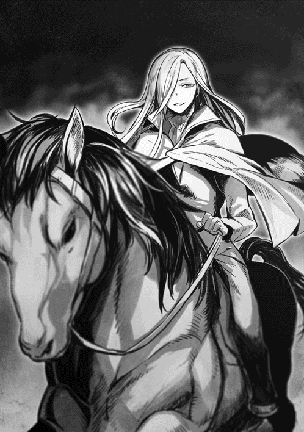
「じゃなくてっ。貴方は本隊を率いるはずでしょうに！」
「ふ......僕もいい加減で学習するのさ、ショウ」
ジェイルはショウのそばに馬を寄せ、薄い笑みを口元に刻む。
「どうやら騒動は、君を選んだかのように起こるらしいからね」
そうではなく、本隊を指揮するはずがこんなトコに来てていいのかっと喚きたいところだが、事態は切迫している。
やむなく、ショウは渋面で頷いた。
「敵の尾行には気付いても、味方の尾行には気付きませんでしたよ......でも、今となっては貴方にも手伝ってもらう他ありませんね」
「本隊の方はちゃんとノイマンに任せてあるんだし、そう嫌そうに言いたもうな、君」
ジェイルは意味ありげな顔で微笑んでから、背後を振り返った。
「あれを見たまえ......僕がいてよかったと思うはずだ」
彼が指差す方を見て、ショウ達はまた一斉に声を上げた。しかし、今度のそれは呻き声に近い。
というのも、次に現れたのも馬を駆った男だったが......こいつは見覚えのある肌に貼り付くような鎧と、両目を隠したマスクをしていたからだ。
「グ、グールかっ」
「そうだ......戦士階級の一人で、アランフェスという。ヴェルマ様の障害を排除するために来た」
マスクの男は口元を歪めて笑った。
「先日は思わぬ不覚を取ったので、今度はドラゴン任せにはせず、私も剣を振るうことにしたのだ。まあ、そうして正解だったようだ」
不気味なマスクが、ジェイルの方を見る。
「ショウはもちろんのこと、今回は無能者だったヴォルザードの長子もいるか。......前回の失敗を補って、余りあるだろう」
「貴様......我が父を、無能者と言ったか？」
ジェイルの笑みが綺麗さっぱり消え、見る見る瞳が真紅に染まっていく。日頃の悠然とした態度は鳴りを潜め、今や彼はショウの腕に鳥肌が立つような殺気を纏っていた。
「聞き捨てならんセリフだ......非礼は貴様自身の首であがなってもらおう」
「ショウ、ドラゴンがっ」
二人のやりとりを見ている間に、ユウリが叫ぶ。
そちらを見るまでもなく、ドラゴンは翼の音が聞こえるほどの距離に迫っていた。
ショウは即座に決断して叫んだ。
「そいつはジェイルさんに任せるっ。俺達は全員でドラゴンを倒すぞっ」
「あっ。ショウ君、妹をっ」
ジェイルが何か言いかけたが、どのみちもう遅かった。
ショウ達は既にまた馬で駆け出していたし......それにジェイルには、抜剣したアランフェスが襲いかかるところだったからだ。
しかし、ショウ達もそちらを気にしている場合ではなく、馬のたてがみに上半身を伏せるようにして、全員が必死で駆けている。
急降下してくるドラゴンは、ショウに潰された左目の傷が生々しく残ったままで、上空を通り過ぎる際、こちらを睨んで怒りの咆哮を上げた。
相変わらず、大気をビリビリ震わせるようなとんでもない音量であり、後ろの方でデイルが「ひえっ」と声を洩らしていた。
漆黒のドラゴンは、すぐに攻撃してくることはせず、そのまま一度ショウ達の上空を通り過ぎ、遥か後方で大きく向きを変え、背後についた。
「戦闘機のドッグファイトじゃあるまいし、いちいち人の後ろにつきやがって！」
先頭のショウが渋面で振り向くと、例のブレス攻撃を浴びせるつもりだろう、また大きく息を吸い込む音がした。
実際、咽の部分が見る見る赤く染まっていく。
「ヤ、ヤバいっ。みんな──」
散れっと指示を出す前に、最後尾のデイルがなぜか無理に馬を止め、馬首をドラゴンに向けた。
「あ、馬鹿っ。何する気だっ」
「決まってるだろっ。あの辛気くさいドラゴンをぶち落とすんだよっ」
止める隙などなく、即座に覚えたての禁忌魔法を使ってしまった。
「猛き炎よ、我が力となりて姿を現せ──ファイアーボム！」
威勢よくドラゴンを指差した途端、夜空を染め上げるような炎の塊が、デイルの遥か前方で炸裂して広がり、上手い具合に飛来したドラゴンそのものを飲み込んだ──が。
「グギャアアアアアアアアッ」
次の瞬間、先程に勝るほどの怒りの咆哮が夜空を震わせ、華々しく炎をまとわりつかせたまま、ドラゴンが飛び出してくる。
超低空飛行であり、派手な風切り音まで聞こえてくる。
「馬鹿、逃げろっ」
ショウは慌てて叫んだが、言われるまでもなくデイルは馬を放棄し、その場で路上に転がり落ちている。
「か、彼女もまだいないのに、死ねるかああああっ」
跳ね起きた後、叫びながら全速力で走り出した。もちろん、街道の脇へと。発動直後はまだ脱力感に襲われるはずなのに、今は尻に火がついたらしい。
当然、ショウ達も全員がデイルとは逆方向へ街道を飛び出し、道なき草原に馬を繰り出した。灼熱のブレスが吐き出されたのはまさにその直後で、炎の洪水は主人が遁走した哀れな馬を呑み込み、そのまま街道をナメるように焼き払いつつ、ショウ達のすぐ後ろを通過していった。
直前でユウリが自らの魔力で皆の背後に魔法防壁を展開してくれなかったら、確実にショウ達も焼け死んでいたはずだ。実際、掠っただけなのにユウリの防壁は真っ赤に染まり、途中で綺麗さっぱり消えてしまった。
「くっ」
「あ、熱いっ」
「やだっ」
たちまち熱風が襲い、たまたまそばにいたショウとロクサーヌ、それにユキナが揃って声を上げる。
この三人を始め、ユウリもジェレミーも含めた五人全員が、今や草原の向こうにポツンと見える森の方を目指して駆けているが......逃げ込むのに間に合うかどうかは、微妙なところだった。
なぜなら、ドラゴンはデイルは無視して、きっちりショウ達の方へ方向転換してきたからだ。人数の多い方を狙う気らしい。
「デイルのヤツめぇえええ」
おそらく逃げのびただろうから、ショウは遠慮なく盛大に愚痴った。
「いくらソウルバイブルだろうと、元々が火に強いドラゴンに、炎系の魔法なんか効くかあっ。ファイアーボムより上級のヘルファイアだって、結果は同じだ！ せめて、それ以外だろっ」
それを聞くと、今度はジェレミーが振り向きざまにソウルバイブルのコマンドワードを叫び、さっとドラゴンを指差した。
「我が怒りを敵へ示せっ、ブルーライトニングっ」
その刹那、夜空に不気味な青い閃光が走り、ちょうどブレス攻撃をかけようとしていたドラゴンの頭部に炸裂した。単独ではなく、四方から襲いかかるような華々しい雷光の輝きで、漆黒のドラゴンが青白く照らし出される。
これは、多少は効いたらしい。ドラゴンはまた鳴き声を上げたが、それは明らかに苦痛によるもので、ぐらりと巨体が揺れるのがわかったからだ。
それを見たロクサーヌもジェレミーと同じ魔法を浴びせ、そのせいか低空を飛んでいたドラゴンは草原に激突し、今度こそ猛々しい憎しみの咆哮を上げた。
──今だっ。
この時、ショウは迷わず馬首を巡らし、逆にドラゴンに向けて突っ走った。止めるためか、仲間が口々に叫ぶ声が聞こえたが、構わず全力で馬を駆り、ドラゴンの間近に迫る。やっと向こうが気付いてぎらっとショウを見据えた時には、すぐ前まで来ていた。
ドラゴンは素早い反応で首をもたげようとしたが、ショウはまず身軽に鞍上に立ち上がり、そこから大きくジャンプした。
狙いはもちろん、前と同じくオレンジ色に光る巨眼である。
空中にあるうちに抜刀した後、一旦ヤツの頭上に着地して、瞬時に刀を振り下ろす──今回もタイミングは完璧だったが、あいにく直前で向こうが頭をもたげたため、狙いは逸れてしまった。足下に当たる頭部に刀が突き刺さり、ドラゴンはショウの魂が吹き飛ぶような凄まじい鳴き声を放った。
それだけではなく、苦し紛れに翼を動かし、その場から飛び上がってしまう。
「ショウっ」
ロクサーヌが悲鳴を上げ、ジェレミーが叫んだ。
「飛び降りろ、ショウ！ 舞い上がろうとしているぞっ」
「うわっと」
せっかく刺さった魔法付与の刀は抜け、ショウはとっさに、頭上に生えたツノのような二本の突起物のうち、片方に手を伸ばした。
せっかくのジェレミーの忠告だったが、反射的にしがみ付いてしまったのだ。気付いた時には、ドラゴンはもう夜空に舞い上がった後である。
ドラゴンは空中でむちゃくちゃな飛び方をして暴れ回り、ショウを落とそうとしたが、そうはさせじとショウはあくまでツノ状の突起にしがみつく。それだけではなく、まだしぶとく手にしたままの刀で、足下の頭を刺しまくってやった。いかに頑丈な鱗とはいえ、さすがに魔法付与の刀を完全に弾くことはできない。恐ろしく固かったのは事実だが、手応えはあり、刺す度にドラゴンが吠え狂った。
「おにいちゃんっ！ ブルーライトニングっ」
追撃してきたのか、地上からユキナの声がしたと思うと、三度同じ魔法のコマンドワードが聞こえ、ショウはドラゴンの全身に痙攣が走るのがわかった。おそらく、下腹にでも直撃したらしい。
これでかなり弱ったようで、ドラゴンは酔っ払いのごとく蛇行しつつ空を渡り、ショウ達が逃げ込もうとしていた森の方へ進路へ変える。
「今度は自分が逃げ込もうってかっ。そうは行くか！」
しぶとくしがみついたショウが喚いた途端、なんと上空から声がした。
「ショウっ」
「おお、ユウリ！」
空を飛べるユウリは、元の姿を保ったまま、ドラゴンの上空を飛んでいる。目が合った瞬間、ショウは思いっきり叫んだ。
「ユウリ、トドメを！ 俺なら大丈夫だ、ちゃんと逃げるっ」
「わ、わかりましたっ」
ためらいつつも、ユウリは応じてくれた。
森目掛けてドラゴンが高度を落としたのを機に、即座に詠唱に入る。
「万能なる闇よ、ここに力の理を示せ。我が命により天を隠し、地に破壊をもたらさんことをっ──来たれ、キリングフィールドっ」
「はははっ。さすがはユウリっ。もうその術を使える域に到達してたか！」
それに、いい判断である。
ドラゴンの巨体相手なら、広範囲を破壊するこの魔法は非常に有効だろう。
ショウの哄笑と同時に月明かりが完全に暗黒に閉ざされ、一瞬だけ耳が痛くなるような静けさと暗黒に包まれた。
ギリギリのタイミングで、ショウは刀を抜いて頭部から飛んだ。まだ空中にあるうちに、背後で爆発音が轟き、ドラゴンが悲鳴のような鳴き声を放った。間違いなく、ユウリの攻撃はドラゴンを直撃したのだ。
ヒノキを何本もなぎ倒しながら、ドラゴンが森に墜落していく。途中で跳んだショウは、一度、夢中で間近に迫った幹を蹴って方向を変えたが、暗さ故にそれ以上は幸運も続かず、太い枝にしたたかに身体をぶつけ、そのまま落下した。
せいぜいが数メートルの落下だったのは、まだしもの幸運だったが......隆起した根が露出した地面でしたたかに背中を打ち、痛みに呻いた。
「いってぇええ......くそっ」
それでも痛みを堪えて跳ね起き、ショウはドラゴンが墜落した場所へと走った。さすがに、もう逃がす気はない。
黒い巨体は、自分がなぎ倒したヒノキに折り重なるようにして、血まみれになって倒れていた。ただ、未だに命は尽きておらず、長い首を必死で持ち上げようとしている。また上空へ逃げられないうちに、ショウは首に飛び乗ると顔の方へ走り、今度こそ半ば閉じたオレンジ色の巨眼に刀を突き立てた。
刀身が貫く瞬間、ドラゴンは力を振り絞ってまた舞い上がろうとしたようだが、一瞬の差で間に合わなかった。
柄まで貫き通した後、ショウはずり落ちるようにして大地に降り立つ。その途中、ドラゴンの長い長い悲鳴にも似た鳴き声を、確かに聞いた気がした。
倒れたドラゴンが断続的に痙攣するのを見て、ショウは大きくため息をついた。
「悪かったな......おまえが好きで俺達を襲ったわけじゃないのは、わかっているんだが」
そこで自分も力尽き、ショウは刀を抱えてその場で座り込んでしまった。
座り込んでいたショウがユウリと共に森を出ると、ちょうどユキナとジェレミーが二人を探しに森へ入ろうとするのにかち合った。
細かい怪我や小さな火傷などはあったが、五人揃って無事なのを確かめた後、今度は飛び降りた馬を見つけて街道へ戻ってみた。
......少し戻ると、デイルが街道の脇で大の字に倒れているのに出くわし、さすがに四人共ぎょっとしたのだが......慌てて駆け寄ると、こいつは単に大口を開けて気絶していただけだった。おそらく、命の瀬戸際だったのを回避した途端──ソウルバイブルを使った反動がどっと来て、一気に苦痛が押し寄せたものと見える。
馬鹿らしくなったショウが、即座にデイルを蹴飛ばして起こしたのは、言うまでもない。
目覚めた後も、やれ「眉毛が片方焦げた」だの「使う度に反動があるなんて最悪の魔法だ」だのと文句の言い放題だったが、ショウが「ロクサーヌ達は全員我慢してるのに、愚痴を垂れ流すなっ」と一喝すると、さすがに静かになってくれた。
事実、ショウ以外の四人は程度の差こそあるものの、皆時折胸を押さえたり、過呼吸に陥ったりしていて、顔色もよくなかった。
自分にも覚えのあることなので、ショウは「慣れると、多少は苦痛が和らぐよ」と慰めてやったが──。
その際にユウリが「ショウはいつもこんな思いをしていたんですね」とポツンと述べた言葉が、仲間達の心情をそのまま表していたかもしれない。特に女性達のショウを見る目は明らかに変化し、「初級のソウルバイブルでこんな有様だと、ショウが使うレベルになるとさらに危険なのでは？」と、ロクサーヌやユキナがしきりに心配していた。
まあその通りなのだが、ショウとしては肩をすくめる他はない。
自分だって、使いたくて使っているわけではないのだ。
「それより、ジェイルさんは」
話を変えるためにわざとらしく街道を見渡したが、あいにく六人が立っている近くには見当たらなかった。
「兄上に限って、滅多なことはないと思いますが......」
そう答えつつも、ロクサーヌもにわかに心配になったようで、率先して道を戻っていく。彼女を追うようにしてショウ達も後を追った。
やがて、路上──どころか、街道の真ん中にクレーター状の大穴が開いている場所があり、その隅にジェイルが倒れているのが見えた。
「あ、兄上っ」
ロクサーヌを先頭に、六名が一斉に駆け寄ると、その騒ぎでようやく目を覚ましたのか、彼はゆっくりと目を開いた。
慎重な動作で上半身を起こすと、ショウ達を見て会心の笑みを浮かべる。
「まあ......それなりの実力者には違いないが、結局は僕の敵じゃなかったね。途中で、逃げてしまった。君達のことがなきゃ、迷わず追ったんだが」
身を屈め、慌てて手を貸そうとするロクサーヌに、引きつった微笑を向けた。
強気の発言の割には本人もかなりボロボロで、着ているスーツなどは既にボロ雑巾も同然の有様である。
それでもあえて強がりを見せるのは、実に彼らしいと言える。
もちろん、ショウは心からほっとして頷いた。
「貴方が無事でよかったですよ」
「おーい！」
新たな声がして全員がそちらを見ると、出てきた村の方から、駐留軍の兵士がバラバラと駆け付けてくるのが見えた。
騒ぎを見て、遅ればせながら駆け付けてくれたのだろう。
さすがに安堵したのか、全員が顔を見合わせてため息をついた。
☆
魔将のロキは、クリスタリカから受けた命令通り、副官のアシュレイと共に手勢を率いてアルバラン城に入城した。
その際、ちょっとした幸運があった。
ロキは、魔族内では慎重な男として知られている。
従ってこの時も、初めて訪れるアルバラン城に入城するに当たり、当時の文献や城の構造に至るまで、入念な調査と下準備をしたのだが──。
そのお陰で、この城には反乱軍が見落としていた、重要な仕掛けがあることがわかった。
きっかけは、蔵書室に積まれたままの大量の古文書だった。
そこで調査に当たった部下の一人が、埋もれたままになっていた、かつての城主直筆の文献を見つけたのである。
その内容を調べた結果、思わぬ発見をしたわけだ。
ただし、報告を受けたロキは配下に固く口止めをし、副官以外にはこの一件を誰にも教えようとしなかった。
ともあれ、これで反乱軍が放棄したアルバラン城は、無抵抗でロキの支配下となった。
ただし、ロキの部隊のほとんどは、アルバランの街に駐留させたままである。彼自身は、わずか数百名の手勢を率いて入城したに過ぎない。
というのも、帝都ヴァルマグロスを出陣したクリスタリカから使いが来て、「アルバラン城には帝都から率いてきた軍勢を入れるので、貴公の部隊はアルバランの街に残すように」と重ねて命令を受けたからだ。
この時点でロキは密かに違和感を抱き、今度は逆に南下中のクリスタリカの部隊に向けて自ら使者を送った。
口上は、「私自身が城を出て、陛下を途中までお出迎えに参上致します」というものだが、クリスタリカの返信は短く「それには及ばない。貴公は城にて待ち、あたしが到着した後は、共に反乱軍の指揮を執るように」とあった。
この書面を受け取ったロキは、副官のアシュレイを呼び、まず尋ねたものである。
「弟は元気かい？」
「はあ」
忠実な副官は、訝しそうにロキを見た。
「連絡はとっていませんが、もちろん城内で元気にやっていることでしょう」
「そうか、それを聞いて安心した」
ロキは破顔すると、ようやくクリスタリカから受け取った二通の書面を見せた。
アシュレイがそれを読み終わると、すぐに重ねて質問した。
「君は、この二つの命令をどう思う？」
「......最初の予定通りではないでしょうか」
「そうなんだが、俺としては疑問が二つほどある」
ロキはアシュレイと共に部屋を歩き、二人で私室から外を眺めた。ここからでもアルバランの街は微かに見えるが、もちろん今やロキの部隊が駐留しているお陰で、特に異状などはない。
「一つは、俺の部隊はアルバランの街へ残せという命令だ......これは既に、ルーデンスビルの街で同じ命令を先に受けている。ここでまた繰り返すのは、いささかくどい。よほど俺が頼りないと思われているのか......あるいは、あえて念を押す理由があるかだ」
アシュレイがまじまじと横顔を見つめるのを感じ、ロキは続けた。
「もう一つは、俺の出迎えを断ったことだな。クリスタリカの性格からして、そういう申し出は本来なら受ける気がする。魔将の俺が、城を出てあえて出迎える......これは、彼女にとっては権威固めのためにも悪いことじゃないはずだ」
実際にそう思ったからこそ、ロキも相手を油断させるために、出迎えるという申し出をしたわけだ。
......しかし、クリスタリカは「それには及ばない」ときっぱり断ってきた。
「別に何の証拠もないんだが、何となく嫌な予感がするんだな......俺はこういう勘には鋭い方でな。幸運の方は、当てた試しがないんだが」
「考え過ぎではないでしょうか？」
しばらく考えた後、アシュレイはきっぱりと言った。
「もしもロキ様を過剰に警戒するのなら、むしろ城から出そうとするはずでは？」
「うん、普通ならそう思う」
ロキは素直に頷く。
そこで、ちらっと長年一緒にやってきた副官を見た。
「しかし逆に言えば、堅牢な城にいるからこそ、油断する元にもなるわけだ。俺としちゃ、今回のクリスタリカはそっちの効果を狙っている気がしたんだよ」
冷静に説明している間に、窓の外ではついに小雨が降り出した。
「では......反乱軍のジェイル様達と連携する約束も、一時取り止めますか？」
ためらった末、アシュレイは一応の提案をしてきた。
しかし、ロキはこれに対しては、はっきりと首を振った。
「いや。今のところ、クリスタリカが俺を排除しようとしている証拠もない。ないからには、やはり今回の一件は千載一遇のチャンスだ。おいそれと取り止めはできんさ」
ロキは悩ましいため息をつく。
「ただ、計画は決行するとしても、保険はかけておこう。この際、是非とも君の協力が必要だ」
「もちろん、私はいつでも喜んで協力しますともっ」
アシュレイは勢い込んで言ってくれたが、おそらくこれは彼の意思に反するはずだ。それはわかってはいたが、ロキはあえて悪戯っぽく述べた。
「それはありがたいな。実はこの保険は、君にしか実行不可能なんだ......いや、正確には君達兄弟にしかね」
☆
ショウ達の一行は、ドラゴンを倒した後も北上を続け、いよいよアルバラン城の近くまでやってきていた。
城にほど近い村で数日待った後、遅れて到着した五百の軍勢と、予定通りに合流を果たした。ちなみに、ソムニウムを出陣した本隊の残り千五百は、既に反乱軍の最前線の街となりつつある、エランの街に到着している。
こちらにも既に近隣の反乱軍駐留部隊が合流しつつあるので、最終的には敵側の魔族とそう変わらない規模になっているはずだ。
これで、エランの街とアルバランの街に両陣営の軍勢が詰め、睨み合う図式ができている。ちなみに、互いの街の距離は騎行数時間ほどに過ぎず、まさに一触即発状態だった。
「だが、アルバランの街の魔族軍を攻めると見せかけ、俺達の狙いの本命は、実はアルバラン城のクリスタリカだ」
森の中にひっそりと建つ山小屋で、ショウは仲間を相手に説明していた。
木こりが森を訪れた時に作業に使う場所らしいが、その十五畳ほどのスペースが、今はショウ達の臨時司令部となっている。
木製の作業台の上に手描きの地図を置き、ショウが森を示す一角を指差した。
「俺達が今いる森はここ、アルバラン城は森を出た北東方向だ」
「うん、森から近いね」
合流したリシャールが、大きく頷いた。
「しかし、ショウ君が指揮する部隊で、城を落とすということかな」
「城内には今やクリスタリカの旗下の軍勢がいるんだから、そんな無謀はしないさ。進入路については、ちゃんとアテがある。城内のロキさんが、時間を合わせて城の南側の門をこっそり開けてくれることになっているんだ」
作業台に群がった仲間が、それぞれ表情を緩めた。
命知らずのウォーリアといえども、攻城戦の経験がある者などいないので、ちゃんと手はずができているとわかり、ほっとしたのだろう。
「ただし、問題もあってな」
水を差すようで申し訳なかったが、ショウは思い切って告げた。
「実は、ロキさんからの使者が後から来て、『何事も問題なく計画を実行するようなら、反乱軍が到着した頃に、もう一度使者を送る』と言ってきたはずなのに......今に至るもその使者が来ない」
「つまり、襲撃計画のゴーサインが来ないってことかい？」
ジェレミーが念を押す。
ショウは顔をしかめて頷いた。
「そういうことだな......何らかの事情で使者を送れなくなったということも考えられるんだが」
「襲撃計画の日取りと時間は決まっているのですか」
ロクサーヌの質問に、ショウは肩をすくめてみせた。
「そう、決まってるから困っているわけさ。このままだと、ゴーサインが出ないまま、襲撃に向かうことになる」
「こっちからロキさんに質問の使者を送れないの？ どうしましたかーって？」
ユキナがもっともなことを言って首を傾げた。
「それができたら一番なんだが、あいにくもう無理だ。クリスタリカの軍勢は既にアルバラン城に到着してて、警備が厳しいのさ。迂闊に使者なんか送れない」
「それが原因じゃないのかよ？」
今度はデイルが突っ込む。
「こっちから送れないんだから、向こうだって今は無理ってこった」
「そうかもしれないが、しかしあの人は用心深い人だし、警戒が厳重になるのは最初からわかっていたはずなんだよ。わかった上で、どうにかして使者を送る手はずを付けていたと思うのさ、俺は」
念のためにショウが同じ魔族のノイマンやジェイルの方を見やると、二人とも賛同してくれた。
「まさに、彼はそういう男ですね」
「僕の知らない間に、妹と遊んでいたような油断ならん男だからな」
......ノイマンはともかく、ジェイルの言いように、ロクサーヌが赤くなっていた。
「ひ、人が聞いたら誤解するじゃありませんか、兄上っ」
「誤解も六階もあるものか！ その話を聞いてから、僕はロキを大いに警戒しているっ」
憤然としたジェイルを見て、ショウは当初、何の話かわからなかったが......そういえば、前にロクサーヌがロキのことを『あの方は、わたくしが子供の頃によく遊んでくださいました』と説明したのを聞いた気がする。
未だにそんな他愛ない思い出に腹を立てるジェイルに驚くが。
「いやそれは今は──」
別に関係ないから、とショウが言いかけたのに、ユウリが絶妙のタイミングで、しかも笑顔で口を出した。
「そう、ロキさんとくっつくのね。いいことじゃないかしら。彼、よい人に見えるし」
「冗談ではないっ」
「わたくしの相手は決まってます！」
ジェイルとロクサーヌの声が綺麗に重なり、かなり大きな声だったこともあって、小屋の中が静まり返った。
それに、ユウリは平然としていたものの、ロクサーヌが真っ赤な顔になっていたせいか、ショウは自分でも思いがけなく狼狽していた。
しかし、さすがに今はそういう話をしている時ではない。
途中から、なぜかショウこそ全員の注目を浴びていたが、無理に話を戻した。
「......話が逸れたが、ロキさんの事情はどうあれ、俺の心はもう決まっている。クリスタリカを討つなら、向こうが出てきてくれた今が、絶好のチャンスだからな」
そこまで述べ、ショウはぐるりとみんなを見渡した。
「とにかく、今はタイムリミットが来るまで、なるべくロキさん達の情報を探ろう。彼が今、どうなっているのか気になる」
軍議らしきものを終えた後、ショウはその晩、自ら森の中を警戒する任務に当たった。
情報収集は他の仲間がやってくれているところだし、今自分にできることと言えば、これしか思いつかなかったのだ。
ここに潜むのは今夜一晩ではあるが、見つかる危険性が去ったわけではないだろう。
ただ......どういうわけか、今晩に限ってジェレミーがぶらっと現れ、森をうろつくショウに付いてきたのは参った。
「おまえは休んでもいいんだぞ」
一応、そう告げてやったが、ジェレミーは首を振った。
「まあそう言わず......たまにはいいじゃないか。このところ、二人で話す機会もなかったしさ」
「そりゃまあ、付いてくるなとは言わんさ」
内心で首を傾げつつ、ショウは落ちた葉が堆積する森を歩く。
みんなから少し離れた途端、ジェレミーがぽつんと言った。
「君も、そろそろ誰を選ぶか決めた方がいいな」
「うおっ」
完全な不意打ちだったので、不覚にも隆起した樫の根に蹴躓き、ショウは危うくぶっ倒れそうになった。
「いきなり何だよっ」
「......いや、余計なお世話だと思ったけど、友人としての忠告でね」
いつものようにポケットに片手を突っ込んだジェレミーは、妙に物悲しい声でショウに言ってくれた。
「僕なんか好きな人がちゃんといたのに、お互いに打ち明ける前に、戦争で泣き別れだしねぇ」
しみじみとした声音でそんなことを言う。
「今の状態がいつまでも続くとは限らないんだからさ」
ショウは足を止め、ジェレミーをまじまじと眺めた。月明かりだけを頼りに歩いているので、表情を窺いづらいが......いつものジェレミーと違い、冗談を言っているようには見えなかった。
「初めて聞いたな、おまえの昔話」
「あまり言いたくないんだよ、妙な目で見られるのはわかってるから」
「俺なんか異世界人でフォリナーだぞ？ おまえが俺以上に妙な目で見られることなんかないだろ」
ショウは促すように言ってやる。
樫の幹に片手を当てたジェレミーは根負けしたようにため息をついた。
「わかったよ。確かに自分のことを何も話さずに、君にエラそうに説教するのもおかしいだろうね。......実は僕は、かつてのロンザリア帝国の諸侯の家で生まれたんだ。もちろん、今やそんなの全然関係ないけどね。家どころか、国ごと消し飛んだし」
ショウの顔を見て、肩をすくめて付け加える。
「ちなみに、年齢も本当は十代じゃない。開戦当時はまだ少年だったけど、今の僕は十代どころか、君よりはだいぶ年上だね。名前はもちろんだが、若く見えるのを利用して、年齢も偽っていたのさ」
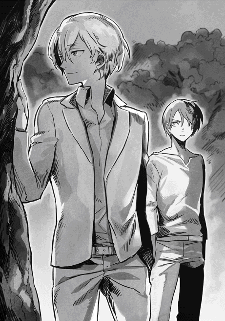
「年齢も驚くが......しかし、ロンザリアの諸侯ねぇ」
ショウは真剣に唸ってしまった。
もしかしたら高貴な身分だったのかもしれないと思ったが、これは予想以上だった。
この世界における諸侯とは、かつてのロンザリア帝国時代に大勢いた貴族の中でも、特に自らの領地を持つ大貴族を指す。身分と家名だけの貴族が大半だった当時の貴族社会において、堂々たる特権階級に当たるのだ。
「僕は運が良かった」
ショウの方を見ずに、ジェレミーはどこか遠くを眺めて話す。
「魔族との戦争が起きた時は、まだ若輩で父上の後を継ぐ前だったし、それに魔族の侵攻があった時、当時の帝都があった北部には不在だったんだ。親戚の家の葬儀に父上の代理で出席しててね。もちろん、侵攻の話を聞いて慌てて家に戻ろうとしたんだけど、その時にはうちの領地がある地方は魔族の占領下にあって、すぐには戻れなかった。でも、僕は親戚連中が止めるのを聞かず、あえて戻ったよ......庶民に化けてさ」
ジェレミーはようやくショウと向き合う。
ただ、やはりその視線はショウを越えて、どこか先の暗闇を見通しているように見えた。
「随分無茶をやって、ようやくうちの城があった地方まで戻った。でも、もう遅かったんだ。そこで地元の住人に訊いたら、もう僕の家族は全員が亡くなった後だった。それも、うちを訪れていた婚約者を含めてね。侵攻当時、私兵を出して魔族軍と戦ったものの、洪水のように押し寄せる軍勢を支えきれずにあっけなく敗走、そのまま城に籠もって全員が自決したらしい。何も、母上や婚約者を含む女性達まで父上の真似をすることはないと思うけど、当時の貴族社会っていうのは、そういうものだからね。敵に囚われるくらいなら、死を選ぶのが美徳ってことになっていたから......僕もそうだけど、婚約者なんてまだほんの子供だったのにねぇ」
ショウはその辺りで止めようとしたのだが、ジェレミーは今や自ら話したがっているように見えた。というより、吐き出さずにはいられなかったのかもしれない。
「その後、絶望した僕は自分もみんなの後を追うために、武器を持って一人で魔族軍の陣地に駆け込み、斬り死にしようとした。でも運命の悪戯か、死にきれずに囚われ、その場で捕虜となってしまった。......結局、戦が終わってからも身柄をアンダープリズンに移され、ずっとくすぶっていたわけさ」
どこか達観したようにジェレミーは続けた。
「僕に限って言えば、先の大戦はあの瞬間に終わったも同然だったね。一人で狂ったように魔族軍の陣地に駆け込み、何人かの戦士を斬った時点で、もう僕は悟ってしまったんだ。彼らを恨んだところで、家族も婚約者も戻らないんだって。もう僕は二度と以前の自分には戻れないし、一人で生きていくしかないんだってさ」
そこまで話すと、ジェレミーはショウを見て目を瞬き、軽く肩に触れた。
「そんな顔をしたもうな、君。あえてこんな話を聞かせたのは、もちろんさっきの忠告のためだよ。神ならぬ人の身じゃ、未来なんてわからないんだ。だから、大事なことは先延ばしにしない方がいい......そう言いたかった」
「そりゃ悪いな、気を遣わせて」
辛気くさい表情のままだとジェレミーにかえって悪いと思い、ショウは無理して苦笑のようなものを浮かべる。
「わかった、おまえの忠告は忘れずにおく。だけど......おまえも一人ってこたぁないだろ。仲間もいりゃ友人もいるじゃないか。余計なお世話だが、また恋人ができる可能性だってあるかもしれない」
「仲間や友人については、君の言う通りだね......ただ、恋人はどうかな。僕にとっては、亡くした彼女は生涯の伴侶のつもりだったからさ」
そこでジェレミーは押し黙り、ショウもあえて「そうか」と頷くに留めた。
こればかりは本人の問題であり、他人がとやかく言えることではない。恋人でこそないが、親しい者を亡くすことがどれだけ辛いかは、ショウも身に染みて知っているのだ。
なんとなくしんみりした雰囲気になったその時、暗闇の奥で微かな音がした。
湿った土を踏みしめるような足音であり、明らかにこちらへ接近してくる。
「......こんな時間に、森に来る用事なんかあるか？」
「ひょっとしたら、敵かもしれない」
「ここを知るのは、事前に場所を知らせたロキさん達だけのはずだが」
「それがクリスタリカ達にバレたとしたら？」
「有り得る話だなっ」
そこまで話すと、ショウとジェレミーと顔を見合わせ、計ったように同時に動いた。
腰の武器に手をやり、向かってくる相手を左右から挟むように駆け出したのだ。
「──誰だっ」
まずショウが低く誰何した途端、意外にもちゃんと返事があった。
「待て、攻撃するなっ。私は味方だ！」
返事だけではなく、急いで両手を上げて敵意がないことを示していた。
肩で大きく息をしていて、今までずっと走ってきたように見える。
「我が名はアシュレイ！ 魔族軍の魔将、ロキ様の副官だっ」
ショウは慌てて刀の柄から手を放し、彼に近付いた。
「そちらは反乱軍だろうか？」
緊張したような声が尋ねる。
「そうだ！」
ショウは安心させるように頷いてやった。
「俺はショウ、こっちはジェレミーだ」
相手は確かに魔族の男で、魔族軍独特の戦闘スーツ姿だった。もうこの時点でショウは彼が知らせようとしていることがわかった気がした。
......おそらく、ロキに何かあったのだ。
第五章 決戦、アルバラン城
ショウはアシュレイを伴って急いで作業小屋へ戻り、皆を集めてから彼の話を聞いた。
作業台を囲んでの立ち話になってしまうが、この際はやむを得ない。何より、アシュレイ自身が軍装を解く間も惜しむほど、報告を急いでいた。
それも当然で、彼は開口一番、ショウの予想通りの言葉を述べた。
「......クリスタリカめは、ロキ様を問答無用で地下牢へ閉じ込めました」
憤懣やるかたない表情の彼の言葉を聞き、集まった全員が呻き声を上げた。
「彼ほど用心深い男が、何かミスでもしたのかな？」
ジェイルのこの問いに対し、生真面目そうなアシュレイは激しく首を振った。
「いいえ、そうは思いません。もしれっきとした証拠があるのなら、拘束する時にその事実を話したはずです。しかし、配下を使ってロキ様を拘束した際、ヤツの腹心であるヘンリーは、ロキ様に何の説明もしませんでした。ただ単に『貴方達には逆賊の疑いがあります』と曖昧なことを述べたのみです。つまり、我らの部隊はほぼ問答無用で地下牢に放り込まれたのですっ」
「ちょっと待ってほしい......部外者の私が口を出すのもなんだが」
そこでリシャールがアシュレイを遮った。
マスクをした彼については、既に説明を受けていたが、それでもアシュレイの目つきは胡散臭そうだった。
「何か？」
「いや......君の話はやたらと詳しいが、君もまた、ロキ殿の副官なのだろう？ そんな重要な地位にあるのに、よく逃げられたものだね」
「ああ、なるほど......これは私の方が失礼しました」
意外にも、気を悪くするどころか、安堵したようにアシュレイが頷いた。
「慌てていて、そのことを先に説明するのを忘れました。実は私が逃げられたのは、ロキ様がこうなる可能性を考えていたためです」
「どういうことかな？」
ショウが尋ねると、アシュレイは詳しく教えてくれた。
それによると──。
ロキは以前、ショウの部隊を密かに尾行したことで、自分が既にヘンリーやクリスタリカから疑いの目で見られていることに気付いていたらしい。それに加え、今回のクリスタリカはアルバラン城に入城する前に、書面でくどいほど彼に「部隊の大半はアルバランの街に留めるように」と命じていた。
これは、裏を返せば「城には自分の部下を大勢入れるな」と命じたに等しい。
この命令で危険を察知したロキは、万一に備えてアシュレイを自分の私室にある隠し部屋に潜ませたのだという。
実はあの城には、後から発見されたそういう仕掛けが幾つかあり、クリスタリカ側はまだそんなものが存在する事実を知らなかったのだ......というより、発見していたロキが、あえてそんな報告をせずにいた。
結果的に、この保険は正解だった。
ロキの密かな予想通り、クリスタリカは城に到着するなり、ロキとその部下をまとめて捕縛してしまったからだ。
この時、主に動いたのは彼女の腹心であるヘンリーで、クリスタリカ自身はロキと会おうともしなかったようだ。
「私は夜陰に紛れて城を脱出しましたが、これもまだヤツらが察知していない、城主が脱出するための地下道があったからです」
アシュレイはそう説明し、さらに付け加えた。
「しかも、彼らは未だに私の脱出に気付いていないはずです。なぜなら、私には双子の弟がいるのですが......その弟をロキ様の副官アシュレイとして仕立て上げ、城に残してありますから」
それを聞き、ジェイルとノイマンが感心したように唸った。
「なるほど、君は上官のために家族を影武者にしたわけか」
「上手い手ですな」
「全てはロキ様のお考えです。用心深い上官のお陰で、私はこうして急を知らせることができたわけです！」
アシュレイは誇らしそうに戦闘スーツの胸を張る。純粋に上官のロキを尊敬しての言葉なのが、表情からよくわかった。
「よろしい、そこまで聞けば十分だ。よく知らせてくれた、アシュレイ」
まだ傷も完全には癒えていないだろうに、ジェイルが底冷えのする微笑を浮かべ、ショウを見た。
「僕にも思うところはあるが、まずは君の意見を聞こうじゃないか」
「......まあ、貴方と同じ考えかもしれませんが」
あえて譲ってくれたジェイルに低頭し、ショウはさらりと告げた。
「もしもクリスタリカが、俺達反乱軍とロキさんとの申し合わせを察知していたなら、俺達が何も知らないまま、ロキさんの内部呼応を期待して城へ突入してくると考えているでしょう」
「いえ、ロキ様は何も話してないはずでっ」
アシュレイが上官のために発言しようとしたが、ショウは笑って頷いた。
「わかってますよ。おそらくクリスタリカは、疑惑のみでロキさん達を拘束したんでしょう。もちろん俺は、囚われのロキさんが余計なことを話すとも思ってません。ただ、どこからか情報が洩れた可能性は皆無じゃありませんし、あの女のことだから、俺達がしてくることも、ちゃんと考えていると思いますね」
穏やかにそう説明してやり、話を戻した。
「──それで、クリスタリカが俺達を警戒しているとして、この際、まずはその期待に応えてやればどうかと」
ショウはそこで、アシュレイを見た。
「ただし、あらかじめ部隊を二つに分けます。片方は、アシュレイさんが逃れてきた秘密の地下道を使い、侵入します。これで一時的には向こうの意表を衝くことができますから、こっちはしばらくは保つはず。そこで敵の目を釘付けにしている間に、もう一方の部隊が地下牢にぶち込まれているであろう、ロキさんとその部下達を救出するわけです」
「うん、だいたい僕の考えと同じだ」
満足そうにジェイルが微笑した。
「地下から侵入した突入部隊はしばらく持ちこたえる必要があるが、別働隊が地下のロキ達を救出すれば、城内を大混乱に陥らせることができるだろう。その隙に乗じて、クリスタリカを倒す手だな」
「では、この計画でいきますか」
ショウは念のため、アシュレイを見やり、彼が大きく頷くのを確認して、作業台の周囲にいる全員を眺める。
誰も反対を表明しなかったので、すぐに続けた。
「後は......二つに分ける部隊の人選と、人数の振り分けを」
などと言いかけた途端、即座にユウリが手を上げた。
「ショウと行きます！」
「だから、いつも早いですわよっ」
ダンッとまだドレス姿のロクサーヌが作業台をぶっ叩いた。今度こそ先に言おうと身を乗り出しているところだったのに、それでも先を越されて腹に据えかねたらしい。
ユキナも同じくむっとした顔をしていたが──。
何を考えたのか急ににっこりと微笑むと、これ見よがしにショウの腕にすがり付いて見せた。
「ユキナなんか、誰の方針も無視して勝手に付いていくものっ」
「お、おいおい......」
以前より激しくなってきたユウリ達の自己主張に、ショウは人知れず冷や汗をかく。というか、仲間の視線が非常に痛かった。特に、来たばかりのアシュレイの「なんだ、この人は」と言わんばかりの、ぽかんとした表情がたまらない。
「かぁああああ、見せつけてんじゃねぇぞ！ ふざけんな、くそっ」
割と本気で頭に来たらしいデイルが、自分もバンバンと作業台を叩いていたが......今回は珍しく、ジェイルが介入した。
「僕とショウ君がそれぞれの部隊を率いるのは当然として、ロクサーヌは今回、僕と来た方がいいな。なにしろ、クリスタリカは危険な女で」
「えぇええええっ」
皆まで聞かず、即座に唇を尖らせたロクサーヌを見て、ジェイルはさすがにむっとした顔になった。
「愛する妹よ、最近のおまえはよそよそしくなってきたように思うな」
「そんなことはありませんけど、わたくしはショウと行きたいですし」
「またクジで決めればどうだい？」
既にすっかり復調したジェレミーが、面白そうに焚きつける。
「今回はそんなわけにはいくものかっ」
ジェイルが即座に却下し、ロクサーヌを説き伏せ始めた。
アシュレイとノイマンは関わることを放棄したのか、さりげなく二人から離れていた。
☆
揉めに揉めたものの、最後はロクサーヌが根負けして折れることとなった。
ジェイルは今回、どうあっても妹から目を離したくなかったようだ。突入するのが、クリスタリカが待ち構えるアルバラン城なので、その気持ちもわからなくはない。
ただ、ロクサーヌが折れたのは、ジェイルが「地下牢のロキを救出する部隊」を率いることになったせいもある。
兄から「僕らに協力しようとしたロキ達を助けるため、協力してほしい」と言われ、同じ魔族のロクサーヌは断り切れなかったのである。
他に、ジェイルの部隊にはリシャールも同行することになった。
彼には例の付与魔力を持つペンダントがあり、ジェイル達の部隊百名を、城壁のすぐ外から内側に転移させるのが役目である。
基本的にまるで知らない場所へは跳べないのがこの転移の力なのだが、「眼前にそびえる壁の向こう側」など、ごくごく短い距離ならその限りではないからだ。
というわけで、ジェイル率いる地下牢の救出部隊は百名、後の四百名はショウが率いてアシュレイが逃げてきた地下道を辿って城内に侵入することになった。
深夜......ショウ達は密かに森を出て、遥か昔に廃村となった場所に集合した。
アルバラン城からはわずか数百メートルの距離に過ぎず、東方を見れば、夜空にそびえ立つような灰色の城壁が見えている。
そこでジェイル達百名が城に向かうのを見送り、ショウはいよいよ、問題の地下通路がある場所へと集まった。
仲間に訊くと、そこはかつての教会であり、ショウが名も知らぬ神を崇める場所だったらしい。ただし、この村は先の大戦以前から廃村だったらしいので、村はもちろん、この教会も荒れ放題である。
石造りのため、外見こそそのままに見えたが、入口の扉が片方外れていたせいで、中に風雨が入り込み放題となっている。お陰で、木製の床は半ば以上が腐って抜け落ち、あちこちから雑草が顔を出している有様だった。
たくさん並んでいる長机と椅子も半数以上はどこかへ持ち去られ、窓もその多くは破壊されていた。
アシュレイが案内してくれたのは、その教会の地下室で、元は食料倉庫のように使われていた場所らしい。
床の一角に取っ手の付いた四角い切れ込みがあり、アシュレイがその前に立って小さくコマンドワードを唱えてから取っ手を引っ張る。
するとその部分がそっくり開き、下に続く階段が見えた。どうやら、規定の呪文を唱えないと開かない仕組みらしい。
入る前に、アシュレイが説明してくれた。
「この地下通路は城の主館──つまり元の宮殿の地下に通じています。宮殿には東館と西館があり、ここから進むと東館の地下に出られるのです」
「なるほど......確か俺が放り込まれた地下牢は西館にあったから、ジェイルさんが上手くやってくれれば、挟撃の形になるな」
「地下牢に放り込まれたですと？ あそこはつい先日まで、反乱軍の支配下にあったと思いますが」
びっくりしたようにアシュレイが訊いたが、ショウは曖昧に笑って首を振った。
ここで、ショウが経験したややこしい騒動の顛末を説明してもしょうがない。
「反乱軍なんかやってると、毎日が波瀾万丈でね。それより、急ごう。挟撃するにしても、俺達は先に騒ぎを起こして、敵の目を引きつけないと」
「わかりました！」
アシュレイは拘束されているロキが心配なのか、すぐに賛同した。
本心は自分がジェイルの部隊につきたかっただろうが......しかし、地下道を行くのなら、彼の案内は必要である。
「では、急ぎましょう」
ショウを先頭に、全員が頷いた。
階段を下りた先に現れた地下通路は、高さこそ身長ギリギリではあるが、二名くらいなら横に並んで歩ける広さがあった。
城主の緊急脱出用というだけではなく、いざという時は王の側近も含め、ある程度の人数を逃がせるよう配慮したのかもしれない。
ただし、黴びたような臭いとひび割れた通路からして、ここが長らく放置されたままなのは事実だろう。
石材のブロックで固めた足下も、染み出る地下水で、歩くとぴちゃぴちゃと音を立てている。二列縦隊で四百名が延々と行軍するとなると、かなりの大移動だった。
「地下を歩く俺達はまだしも、ジェイルさんは大丈夫かな」
ショウは心配になって呟いた。
「百名とはいえ、なにしろあの人達は城壁の眼前まで行くわけだしなあ」
本音は、同行したロクサーヌの方がより心配なのだが、それはあえて言わずにおいた。どうせ他の仲間にはバレているだろうが。
「ジェイル様なら大丈夫でしょう」
アシュレイが太鼓判を押してくれた。
「あの方の魔力はヴァルザード様に勝るとも劣りません。インターセプションの魔法を使えば、百名くらいなら気付かれずに接近できるはずです」
「うん、俺もあの人の実力は信頼しているんだが──」
ただし、とショウはあえて言葉を飲み込む。
思わぬところでグール戦士のアランフェスを取り逃しているし、今回はことの始めからグールの影がちらついている。
また予想外の場面で、ヤツらの邪魔が入る可能性も皆無ではない。
......そこで背後を振り向くと、ユウリとユキナが並んで歩いていて、ばっちり目が合ってしまった。
もちろん、彼女達の背後には四百名の仲間が続々と続いているわけだ。
「後ろにいたのか！」
「それはいますとも」
「やだなあ、もちろんいつもそばにいるよ」
二人とも、苦笑して答えてくれた。
今回、ショウは悪照れすることもなく、大真面目に頷いた。
「本当にできるだけそうしてくれ。城内に突入したら、何があるかわからんしな」
「そろそろお静かにっ」
アシュレイがそっとショウ達に告げた。
「もうすぐ、城の地下に到達します」
「わかった！」
ショウは前に向き直り、大きく息を吸い込んだ。
☆
別働隊を率いるジェイル・ビューゼルシュタインの魔族の集団は、アシュレイのような案内人がいなかったこともあり、予定より少し遅れてアルバラン城の西館を見上げる城壁前に辿り着いた。
もちろん、全員がジェイルが発動したインターセプションの魔法をかけてもらっている。この魔法は身体が透明になるわけではないが、城壁などで見張りに立つ兵士の視覚に割り込み、あたかも存在しないかのように誤認させることが可能なのだ。
到着して明らかになったことだが──。
西館は、西側の壁が城壁そのものと一体化している特殊な構造であり、その下に立って見上げれば、最上階の六階までずっと見上げることができる。
つまり東館とは違い、ここは城壁そのものが、西館の壁を兼ねているのだ。
「さて、情報では、この西館の地下が地下牢らしいのだが」
ジェイルは顎に手を当て、眉をひそめた。
この構造だと、壁の向こうですぐに敵と遭遇するだろう......どうやら、一度閉じ込められていただけのショウは、それを知らなかったと見える。アシュレイもまた、上官を助けることに夢中で、そこまで気が回らなかったのかもしれない。
「リシャール、君の力でそのまま地下へ転移することは可能かな？」
ジェイルは振り向いてリシャールを呼んだ。
「見たところ、こちらは完全にノーマークのようだし、西館の窓からこちらを見張っている者がいるでもない。地下に直接転移しても、何ら問題ないように思える」
ただし、ここから東へ百歩ほど離れた城壁部分には、防御城塔（見張り兼防御のための塔）があり、そこには兵士が詰めているが、今のところ、魔法のお陰で彼らが騒ぐ様子はない。
ただ、今になって東の方で微かなざわめきと剣撃の音が聞こえてきた。
これは間違いなく、ショウが率いる四百名が地下道を辿り、東館へと突入した騒ぎだろう。それが証拠に、あっという間に西館の各階の窓にも明かりが灯り、館内で騒ぎと慌てたような駆け足の音が聞こえてきた。
今まで静まり返っていたせいか、兵士らしい誰かが「東館だ、東館の方で敵が侵入したらしいぞっ」と怒鳴る声まで、鮮明に聞こえた。
「あ、兄上っ」
たちまち、焦ったロクサーヌが前へ出てきて、ジェイルの上着の裾を引っ張った。
「早くロキ殿達を助け出して、わたくし達も加勢しませんとっ」
「そうですな。こうなると、急いだ方がいいでしょう」
同行しているノイマンも、すぐに賛成した。
「わかっているとも！ 今そうするところだよ」
二人の懸命な表情を見て、ジェイルは苦笑する。
言葉通り、未だにマスクを着けたままのリシャールを促した。
「そういうわけだ。多少は難しくても、可能なら地下牢へ直接転移してもらいたいが」
「しかし、壁の向こうどころか地面の下なら、確実に場所が推測できないとまずい──」
言いかけ、リシャールは急にあらぬ方を見た。
そこには、鉄格子が嵌まっているが、煉瓦数個分ほどの小さな穴がある。リシャールと、それに焦っていたロクサーヌが自ら膝を屈め、争うようにその中を覗き込む。
すぐに、嬉しそうにロクサーヌが声を上げた......ただし、囁くような音量で。
「兄上っ。この下で間違いありません。ずっと下の方に、牢が並んでいるのが見えますもの！」
「む──そのケチくさい穴は、換気口のつもりだったかな」
ジェイルは鷹揚に頷く。
「リシャール、これなら問題あるまい？」
「いいでしょう」
納得したように頷き、リシャールは百名全員を見渡した。
「ではみんな、おおざっぱでいいので、人数を三グループに分けてほしい。さすがに、この百名を一度に転移させるのは難しいのでね」
最初のグループに混じったジェイルは、ロクサーヌとノイマンを伴い、地下牢に転移した。
そこは、広さだけは相当なものだった。
真ん中の通路を基準に、その左右に四部屋ずつ、鉄格子の牢屋がずらっと並んで続いている。奥の突き当たり間近に一つだけランプが壁にあったが、とても地下階全域を照らすほどではない。
無事に転移が終わると、その薄暗い地下牢の全域に驚きの声が満ちる。どうやら、ほとんどの仲間は起きていたらしい。というよりも、東館から聞こえる騒ぎで目覚めたのかもしれないが。
ロキを含めてその部下も全員ぶち込んだせいか、地下牢は今や満杯状態だった。
「ジェイル・ビューゼルシュタインだっ」
ジェイルはまず大声で名乗って皆を安堵させ、即座に尋ねた。
「鍵の在処を知る者は？」
「い、入口のところにかかってます、ジェイル様っ」
遠くで誰かが答えるのを聞いた途端、ノイマンが「私がっ」と声に出し、走り出した。続いてロクサーヌも後を追っていく。
ただ、ジェイルは換気口の近くの牢から自分を呼ぶ声が聞こえたので、そちらへ歩いて言った。......思った通り、スーツの上衣のみを脱いだロキがいて、ジェイルを見て深々と低頭した。
「そういえば、リシャール殿は転移の魔法が使えるそうですな。いずれにせよ、不甲斐ない有様で申し訳ないです。しかしクリスタリカの暴挙については、アシュレイが知らせたはずですが」
いささか危惧する声に、ジェイルは笑って頷く。
「知らせてくれたとも。だが、安心するがいい。これはこちらの作戦だ。ショウと二手に分かれて、クリスタリカの意表を衝くのさ」
急いで作戦を説明した後、ジェイルは首を傾げた。
「しかし、おまえほどの男がこの程度の牢に」
言いかけ、床を見て目を瞬く。
「なるほど......魔法封じの結界か。ならば、無理もない」
見覚えのある魔法陣を見て、ジェイルはようやく納得した。
この特殊な呪縛魔法のかかった結界内に囚われると、魔法を使えなくなるのだ。
「しかし、あいにく僕にはあまり意味がないな」
ジェイルは薄く微笑すると、太い鉄格子を両手で掴み、ぐっと力を入れた。たちまち溶けた飴のように鉄格子がぐんにゃりとねじ曲がり、ロキが出られるほどの空間を作ってしまう。
すぐに苦笑したロキが出てきた。
「恐縮です！ しかし......ジェイル様が来られたということは、もはやお覚悟はできたのですか？」
「それは、我が不肖の妹を倒す覚悟ができたのか、という意味かな？」
ジェイルは目を細め、顔中に凄みのある笑みを広げた。
「あの者を倒すのに、覚悟などいらぬな。あの女は我が父を殺した！ 言い訳などできるものではないし、殺すのにためらいがあるものか」
「そう......ですか」
ロキは複雑な表情で息を吐く。
その間にも、次々とジェイルの部下達が牢内に転移を果たし、たちまちにして囚われの身だった兵士達が全員、脱出を果たした。
「よし、全員、出たな！」
ジェイルが機嫌よく声を掛けた途端、ロクサーヌが後を引き取った。
というより、大声で割り込んだ。
「すぐに、東館へ攻め込んだショウ達と呼応して、クリスタリカを倒しましょうっ」
「愛する妹よ、僕のセリフを取ってくれては困るな」
ジェイルの呆れた声に、ようやく微かな笑い声が広がる。もちろん、ジェイルとロクサーヌの兄妹仲がよいのは、周知の事実なのだ。
微笑みつつも、ジェイルが号令をかけようとしたその時──。
思わぬ人物が制止をかけた。
「待って頂きたい！」
中央通路の隅で一人で立っていたリシャールが、着込んでいたローブを捌くようにして、元来た方──西館の壁部分を見上げている。
「......どうかしたかね？」
ジェイルが眉をひそめて訊くと、彼は換気口のある壁の上部を眺めたまま、ゆるゆると首を振った。
「馬鹿な......この気配は」
「何かあったのですか？」
焦れたノイマンが尋ねる。
リシャールは──ただ大きく息を吸い込み、それから唐突に叫んだ。
「全員、壁からなるべく離れろっ」
その時、ジェイルは背筋に冷たいものを感じ、すぐそばに立っていたロクサーヌを抱えて大きく跳んだ。ほんの一瞬だけ遅れ、ロキとノイマンもリシャールのいる中央へと大きく跳ぶ。
だが、壁際に近い位置にいたほとんどの者は反応できなかったし、ぽかんとマスクを着けたリシャールを見返していた。
まさにその瞬間、若い女性の声で、コマンドワードの叱声が届いた。
「潰れなさい、ダムド・ハンマー！」
言下に、広大な地下階が大揺れに揺れた。
轟音と共に西側の壁が大きく崩れ、換気口の少し上辺りが完全に破壊され、瓦礫が雪崩れ落ちてくる。
轟音と揺れが続く間、ジェイルは妹のロクサーヌを押し倒し、通路に這ったまま動かずにいたが......ようやく壁の方へ顔を向ける。
そこで見た。
大穴が開いた壁の上部から、身軽にマント姿の女性が飛び降りるのを。
そいつは、両腕以外の上半身を覆う、薄いプレートアーマーのようなものと、銀色のマスクを着けていた。マスクはリシャールのものと似ていたが、こちらの方が目の部分が吊り上がっていて不気味である。
......黒いストッキングを穿いた両足とスカート姿からして女性には違いないのだが、全身に凄まじい威圧感を纏っている。ジェイルですら、ここまで不気味な殺気を放つ相手に遭遇したことはない。
その女は、不埒にも落下した石壁の残骸の上にふわりと降り立ち、片手で銀髪を払った。そいつの足下には、瓦礫の下敷きになって即死した仲間が何名かいるというのに。
さらにわずかに遅れ、もう一人、今度は少女のように線の細い外見をした男が、彼女の横に降り立った。
同じくマスクをしているとはいえ、こちらは素性がわかる。つい先日、ジェイルが倒しかけた、アランフェスである。
まだ完全に傷が癒えたわけではないのか、どこか身体を庇うような動きだった。
「ふん......死に損ないが一人と、さて女は何者かな？」
妹に手を貸して立たせてやりつつ、ジェイルは見知らぬ女を睨む。
途端に、ジェイルの横でリシャールが大きく息を吸い込む気配がした。
「ヴェルマだよ......侵攻軍の指揮官だ」
振り絞るような声が、微かに震えていた。
「それに、ビーストマスターのアランフェスまで」
驚いたことに、この飄々とした男が恐怖を感じているらしく、頬が引きつっているように見える。
「......この間の借りを返さねばな」
アランフェスは、ジェイルの方にマスクを向け、軋るような声を出した。
「なるほど、あいつがヴェルマか！」
ジェイルはアランフェスは無視してヴェルマのみを見据え、初めて腰の剣を抜いた。たちまち剣全体を薄赤い魔力の輝きが覆っていく。
「ちょうどいいさ、リシャール。ならば、ショウの悩みの種をここで僕が──」
「やめた方がいいっ。それより、今はもう撤退することを考えるべきだ！」
思いがけず激しい声に、全員が驚き顔でリシャールを見やる。マスクがあるので表情はわからないが、今や彼は歯を食い縛っていた。
「下手をすると、ここで全員が殺されるぞっ」
「いや、逃げてもらっては困るな......私が介入する以上、そこにいるジェイルと......そうだな、そこの魔将二人の首は置いていってもらおうか」
にいっと唇の端を吊り上げて、ヴェルマが笑う。
「大勢いる......ふふふ、まさによりどりみどりかな？ 今回、あのショウからは遠いが、まあ彼を相手にする時間もあるかもしれないわね......ふはははっ」
まるで背後に数千の兵士を率いているかのような、堂々たる態度だった。実際には、ジェイル達百名と解き放たれたロキとその部下がいるだけで、彼女の味方は横にひっそりと立つアランフェスだけなのだが。
「ふん、気に入らんな......この僕を前にしてのその自信は」
ジェイルは自分も薄い笑みを浮かべて皆の前に立つ。
「こうしようじゃないか。僕が残ってあの女とおまけを倒す。ロキとノイマンは残りの兵士を率い、予定通りにショウの応援に行くといい」
皆を促すように、背後を振り返って命令した。
「この段階でも敵兵が来ないところを見ると、城内の兵士は全員が東館にかかり切りらしい。早く行って、ショウ君達に楽をさせてやりたまえ」
「わかっていないようね、おまえ」
突然、ヴェルマが反論した。
「愚か者め、気付かぬか？ 今この地下階に誰も来ないのは、この私が余計な介入を望んでいないからに過ぎない」
「なにっ」
ジェイルが笑みを消した途端、ヴェルマが哄笑してコマンドワードを叫んだ。
「まずは数を減らそうかしらね──私が使うソウルバイブルは、簡単には防げぬぞ？ その身で味わうがいい、キリングフィールドっ」
その時、ごく一瞬だけ地下階全域が暗く陰り、リシャールが「まずいっ」と呻く声が聞こえた。
次の瞬間、轟音と共に先程の比ではない激震が地下階全域を襲った。
またしてもロクサーヌを引き寄せて床にダイブしていたジェイルは、頑丈な石床に大きなひび割れが走り、激震の反動で兄妹揃って身体が浮くのを感じた。
☆
ショウ率いる四百名のウォーリアが地下道から上がった先は、東館の一階にある貴賓室に備えられた暖炉だった。
壁を大きく抉ったような暖炉の下部、そこの火床の一部が、下から持ち上げて開けられるようになっていたのだ。
そこでショウは、広い貴賓室に誰もいないのを確認した後、大急ぎで皆を地下道から部屋に上げ、全員が揃ったところでいきなり外の廊下へ走り出た。
アシュレイから事前に情報を得てはいたが、途中で捕らえた下級兵士からも「陛下はこの東館の最上階にいらっしゃる」との確報を得たので、以後は当初の予定通り、最上階を目指して進撃を続けている。
ただ、相当数の兵士をアルバランの街に留め置いたとはいえ、クリスタリカはこの城内に、千を優に越える数の兵士を駐留させている。
当然、騒ぎに気付いた兵士達が続々とショウ達の迎撃に参加しているのだが、今のところ、ショウ達の侵攻を食い止めるには至っていない。
これは、そもそもショウが最上階に通じる石階段に狙いを絞って駆け上がっているため、さほど広くもないこの階段上では大勢で少数を囲む戦法が取りにくかったせいもある。
場所柄、どうしてもショウ達を直接攻撃できる人数には、限りがあったのだ。
一方、ショウ達から見れば、東館には他に階段がないことに加え、その石階段にもさほどの広さはなく、敵の数が多くても各個撃破で進むことができるという利点がある。
しかも、今回はたった四百名といえども敵に勝る有利な点があった。
「ぐわっはっは！ デイル様の華麗な超魔法を食らえぇえええ、ファイヤーボム！」
調子に乗ったデイルが叫んでコマンドワードを叫んだ途端、下から追いすがってきた兵士達のど真ん中で、オレンジ色の業火が炸裂した。
ソウルバイブルでは下級魔法に過ぎないとはいえ、その炎の勢いたるや通常の魔法とは比較にもならず、魔族兵士達を一度に何名も即死させたほどの威力がある。
余波を食らっただけでも被害は大きく、炎を纏わり付かせた兵士達が大勢、悲鳴を上げながら階段を転がり落ちていった。
「くぁああ、力が抜けるっ。なんだよ、この脱力感と胸の痛みはようっ」
デイルが笑い泣きするような妙な表情で、胸を押さえた。
攻撃した自分もへばっているので世話ないが、今のところはまだ高揚感で保っているらしい。
「しかしっ、俺はまだまだやるぜいっ」
「おい、加減しろよ、デイルっ」
ショウは最前線で刀を振るいながら、一瞬だけ振り向いて怒鳴った。
「ソウルバイブルをナメるなっ。限度を超えると、いきなり心停止することもあるんだから──なっ」
最後の「なっ」のところで、斬り結んでいた敵兵士の剣を跳ね上げ、存分に胴を薙ぐ。ショウの左右はユキナとユウリが固めていて、それこそ鬼神も青ざめるほどの活躍を見せていた。
この三名に限っては、魔法はさほど使わず、ほとんど剣だけで敵を減らしているのだが、誰も止めることができない。
案内役だったはずのアシュレイを押しのけるような勢いで前へ出て、敵の数を減らし続けている。最初に一気に距離を稼いだのも功を奏し、今や四階を越えて、五階にまで駆け上がっていた。
デイルには注意したが、ジェレミーを含む他の仲間も、敵が背後や前方に固まっているのを見るとすかさずソウルバイブルの魔法を放ち、その都度、道を切り開いてくれているのだ。
敵も、時には魔法を使う者が現れたが──。
攻め寄せたショウ達は程度の差こそあれ、全員がソウルバイブルの使い手であり、ウォーリアの精鋭でもある。
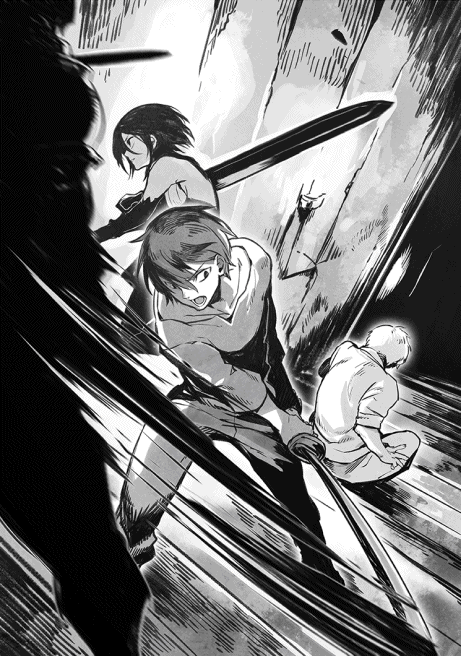
この差は大きかった。
......しかし、心底うんざりすることに、五階まで来ると、状況が一変した。
そこには、クリスタリカの直属軍とも言える魔族兵士達が、軽く数百名は群がっていたのだ。
しかも、今まで上ってきた階段はこの五階までで、最上階の六階に上がるためには、この廊下を逆方向の端にまで行く必要がある。
そこまで行かないと、最上階に上がれない仕組みになっているわけだ。
防御のための工夫だろうが、ショウ達からすればよい迷惑である。
なにしろ、結構な長さの廊下に、ずらりと戦闘スーツ姿の魔族兵士が詰めかけているのだ。まさにすし詰め状態であり、悪い意味で壮観だった。
「みんな、クリスタリカに騙されるなっ」
遅れていたアシュレイが、慌てて前へ出てきた。
「クリスタリカはグールの侵攻を人間の仕業として罪をなすりつけ、我々魔族と人間を悪戯に戦わせようとしているんだぞっ」
「何がグールだっ。そのような太古の種族の名を持ち出し、悪戯に陛下の名を貶めるな！ 貴様もロキも、人間共に寝返った裏切り者に過ぎんっ」
この階の指揮官らしき戦士が、唾を飛ばして言い返した。
「貴様こそ、今降伏するなら命だけは助けるぞ！」
「ええい、分からず屋めっ」
「アシュレイさん、ユキナに任せて」
意外なことに、ここで先制したのはユキナだった。
アシュレイはおろか、自ら動こうとしたショウより先に、唇を引き結び、前へさっと出てしまう。
「エ、エリーゼ様っ」
「エリーゼ様だ！」
さすがに元魔将だったユキナはほとんどの者が知っていて、剣を連ねる戦士達からざわめきが洩れた。
「ユキナはエリーゼじゃないわ。おにいちゃんの妹で、ユ・キ・ナ！ 間違えないでっ」
ぴしりとユキナが言い返す。
「えっ......しかし」
驚いたように呟く兵士に、最初にアシュレイに言い返した指揮官が怒鳴った。
「馬鹿者っ。もうあいつも裏切り者だ！ いいから倒せっ」
「わからないの、貴方達はあの女に騙されているのっ。いい加減に目を覚ましなさい！」
叫ぶなり刀を構え、ほぼ同じ戦闘スーツの兵士達を見渡す。緊張はしているようだが、顔には並々ならぬ決意があり、そのまま大きく刀を振りきった。
「お願い、シューティングスター！」
言下に、白く輝く光刃が大きく広がり、廊下内を激しく乱舞して通り過ぎた。どうやら今回は手加減したらしく、即死した者こそ皆無だが、たちまちにして悲鳴と怒号の大合唱が湧き起こり、文字通りの鮮血が雨となって床を叩く。
なまじ、密集していたのが仇となったのだ。
「道を空けてっ」
ユキナが前進しようとする前に、ショウ自身が飛び出して廊下を突っ走った。幸い、今の攻撃で大勢が気絶するか倒れ伏して呻いていて、すぐには止められない。
ただ、廊下の向こうから続々と援軍が現れつつあり、すぐにまた前進を阻まれることになってしまう。
「ちくしょうっ。どうしても倒して行くしかないのか！」
ショウは、血相を変えて迫る魔族達を見て顔をしかめた。
......それに、今一つ気になることがある。
元々この作戦は、先行したショウ達が暴れている間に、別働隊が西館の地下牢にいるロキ達を救う手はずだったはずだ。
そっちが成功していれば、とうにショウ達の背後で混乱が起こっているはずである。本来、解放されたロキとジェイル達が、ショウ達を攻める敵兵を背後から撃つ算段なのだから。
しかし、今に至るもその兆候はなく、相変わらずショウ達は孤軍のままである。それに、少し前に東館まで揺れるような大爆発の音が、西館の方から聞こえてきたが......そちらも気になる。
敵兵も様子を見に行っただろうに、状況にさほどの変化がないのも不審だ。
もしかすると、ジェイル達は失敗したのではないか？ ショウは迫り来る敵兵に刀を向けつつ、密かに胸騒ぎがしていた。
☆
「冗談じゃないわよ、敵はせいぜい数百名そこそこでしょうっ。いつまで制圧に時間かかってるの！」
何度目かの報告に訪れた伝令の兵士に、クリスタリカは八つ当たりしていた。
今のところ、この最上階にまで敵兵は姿を見せていないが、そろそろ剣撃の音が聞こえ始めているので、ショウ達は相当に近いのだろう。
少なくとも、二つ下の階くらいには来ているかもしれない。
焦りはしないものの、さすがに腹立たしかった。
「はっ。申し訳ありませんっ。敵である人間共には、どうやらエリーゼ様や得体の知れない女戦士も味方していて、一筋縄ではいかないようでして──」
「言い訳はいいわっ」
戦闘スーツ姿の男を、クリスタリカは改めて怒鳴りつけた。
「戻って、指揮を執る千騎士に厳命しなさいっ。『いつまで遊んでいるのかと、あたしが怒っていた』とねっ」
「ははあっ」
震え上がった伝令が慌てて踵を返すと、そいつの背中にさらに喚く。
「それから、さっきの西館の大爆発はなにっ。その報告もまだ来てないわよ！ 新たに兵士を送って、早急に調べなさいっ」
「は、ははっ」
伝令は追い打ちまで食って、それこそ逃げるように姿を消した。
クリスタリカは真紅に色変わりした瞳で息を吐くと、ソファーを立って窓際まで歩いた。そこからだと、連なるように建つ西館が少し見えるのだ。
先程から爆発の音が聞こえたり、大勢が叫ぶような声が聞こえたりと、不審なことが続いているのだが......なぜか、西館の騒ぎの方からは一向に報告が来ない。
「......ショウが攻めてきたということは、やはりロキとショウは通じていたということ。おまえとあたしの推測は正しかったようだから、そこまではわかるわ」
独白のように続け、クリスタリカは苛立ったように美しく塗られた爪を噛む。
「いえ、西館で騒ぎが起こっているのも、どうせロキの救出のために、別働隊でもいたってことでしょう。それもわかるのよ。ただ、いくら西館に様子見の兵士を送っても、こっちに情報が入ってこないのはどういうことよ！ それに、魔族兵士のふがいなさときたらっ」
「今の段階では、最後が一番問題ですね」
そばに控えていたヘンリーがそっと隣に立ち、ため息をついた。
「ああ見えてロキ殿は、軍内では人望の厚い魔将でした。迎撃の指揮を執る千騎士に、迷いがあるのかもしれません」
「考えられるわね」
険しい顔つきでクリスタリカは頷く。
「尊敬してたロキが拘束されて、動揺しているってことかしら。でも、あいつを押さえなきゃ、今頃はもっとひどいことになってたわよ」
「それは確かに。ただ今回は、反乱軍の戦士共に、ソウルバイブルを会得した者が多数いたのも不利に働きました。......こちらも、同じことをする必要がありますか」
「必要だと判断すれば、そうするわ」
漆黒のマントといつものドレスを着込んだクリスタリカは、きっぱりと言い切った。
「おまえが持ち帰ったソウルバイブルは、未だにあたしの手にある。あれの一部を皆に覚えさせることも可能でしょう......いいかもしれないわね、それ」
そこでクリスタリカは、真っ赤な唇に皮肉な笑みを刻んだ。
「苦しむなら、全員もろともってことね。元々、そうすべきだったのかもしれない」
そう言ってる間にも、また下の方で一際大きな叫び声や悲鳴がした。
今度のはかなり近かった。
クリスタリカとヘンリーはとっさに顔を見合わせる。
「クリスタリカ様だけでも、一時退避されては？」
思い切ったようにヘンリーが意見した。
「六階程度の高さなら、ソウルバイブルを知るクリスタリカ様なら、何とでもなりましょう。後は、僕が残って指揮を執りますよ」
「そうはいかないわよっ」
クリスタリカは渋面で首を振った。
「以前ならそれでもよかったけど、今のあたしは魔王なのよっ。魔王の座にある者が、人間を相手に、しかも数百名程度の敵に怯えて逃げ出せるものですか！ いえ、切羽詰まればその限りではないけど、一矢も報いずに逃げる気はないわっ」
また爪を噛み、革靴で床を蹴る。
「だいたい、報告を聞く限りじゃ、ロクデナシの兄やロクサーヌの姿もないって言うじゃない？ エリーゼとショウくらいでしょ、問題なのは？ その程度の敵を相手に、やられっぱなしで逃げられるものですか！」
「では──」
そこで大きなため息を吐き出し、ヘンリーはタキシードの上着を脱いだ。
戦闘スーツの持ち合わせはないが、一応は帯剣している。
「僕が下へ赴き、敵を排除してきましょう」
「それも許さないわ、ヘンリー」
クリスタリカはあっさり言い放った。
「おまえは以前、ショウと戦い、危うく斬られそうになってるじゃない!? いま再戦すればわからないかもしれないけど、危険過ぎる賭けに腹心は出さないわ。自分の右手を賭けに差し出すなら、もっと危険が迫った時よ」
「ク、クリスタリカ様」
珍しく感激した様子で目を潤ませるヘンリーに構わず、クリスタリカは冷笑を浮かべて、ドアの方を振り返った。
いよいよ、剣撃の音が近くなっているのだ。
まだ階下ではあるが、この分だともうすぐこの最上階にヤツらが来るだろう。
「......まあいいでしょう。退くにしても、その前に奴らに身の程を教えてやるのも、一興かもしれないわね」
クリスタリカはこの時、半ば覚悟を決めた。
調子に乗った敵に思い知らせてやるのも、時には必要かもしれない。
☆
魔族戦士達の一部に迷いがあるらしいのは、ショウも気付いていた。
さもなくば、いかに有利な階段を主戦場にしたとはいえ、さすがにショウ達ウォーリアにも、もっと多くの被害が出ていただろう。
だが、魔族戦士の大多数は未だにクリスタリカを盲信しているし、過去のこともあって、頑固なまでに人間を敵視している。
そういう連中は、ショウ達がいかに「クリスタリカに騙されるなっ」と怒鳴ったところで、耳を貸すことはない。ただひたすら、斬りかかってくるのだ。
勇猛さと身体能力では遥かに人間を上回る魔族だけに、もしもショウ達突入部隊がソウルバイブルを会得していなければ、途中で壊滅していたはずだ。
しかし、先頭で戦うショウは、ついに五階の廊下をほぼ制圧し終わり、最上階へ上がる階段の目前まで来ていた。
無論、背後からはまだ増援が来ているが、そちらは後ろの仲間が踏ん張って支えてくれている。
「よし、いよいよ六階へ突入できそうだ」
眼前に立ち塞がった最後の敵の首筋を薙いで倒し、ショウは大きく息を吐いた。
「どうせ斬るなら、個人的に恨みも深いクリスタリカにしたいもんだなっ」
「賛成です」
「ユキナも！」
ユウリとユキナが同時に応じた。スーツの上衣だけを脱いだジェレミーも追い付いてきて、ショウに頷いて見せた。
「じゃあ、本番だね」
「ああ、まだあの女の気配は上階に健在だ。どうやら待ち構えているらしいが、望むところだな」
ショウが力強く言って階段を駆け上がろうとしたその瞬間、ようやく待ちに待っていた声がした。
「待ってください、ショウっ」
「おおっ」
喜色満面でショウが振り返ると、これまで渡ってきた廊下の向こう側に、ロクサーヌとリシャールが連れ立って立っていた。
ただし......救出したはずのロキ達や、それに別働隊を率いるジェイルの姿がない。
しかも、突入部隊のショウ達とロクサーヌ達の間には、まだ敵味方が入り交じって戦っている最中なのに、彼女はリシャールに何か頼んだかと思うと、即座に二人してショウのそばに転移してきた。
「うわっ。おいおい、そのペンダントの魔力は、いつ尽きるかわからないんだろ！ こんなことでいちいち消耗させて──」
言いかけたショウは、二人の顔色を見て、目を瞬いた。
ひたすら青ざめているリシャールはともかくとして、ロクサーヌなどは今にも泣きそうに美しい顔を歪めている。
たちまち、ショウの胸に黒雲が立ち籠めた。
「何かあったのか!?」
「あ、兄上がっ」
ロクサーヌがショウの胸にすがりつき、必死の面持ちで揺さぶった。
「兄上が殺されそうなのですっ」
「どういうことだっ。落ち着いて話してくれ」
ロクサーヌの肩に手を置いたショウに、リシャールが告げた。
「ヴェルマだよ、ショウ君」
「なにっ」
血相を変えて顔を見合わせたショウ達に、リシャールは手短に説明する。
「ロキ殿達を地下牢から解放したところで、あいつとビーストマスターのアランフェスが現れ、我らに介入してきたのさ。のっけからソウルバイブルを使われ、現在、西館の地下階と一階は、地獄のような有様だ。──そこで彼女が」
リシャールは気の毒そうな目でロクサーヌを見て、両手を広げた。
「ジェイル殿の危機を見て、私にショウのところへ連れて行ってくれと頼んできたのでね。私も自分が加勢するより、君達の援軍を求めた方がまだマシだと思ったわけだ」
ショウが答えるより先に、ジェレミーが素早く言った。
「西館の援軍には、僕とアシュレイさん達が向かおう。君は、このままクリスタリカのいる最上階に突入してくれ！ 今はそれが最善だと思うよ」
「でも、それではっ」
取り乱したロクサーヌが訴えるより先に、ショウが断固として言い切った。
「駄目だ！ アランフェスだけならともかく、あのヴェルマを相手にすれば、下手すれば全員が殺られる。ここは俺が行くっ」
早口で説明すると、素早くリシャールの腕を取った。
「リシャール、今すぐ俺をヴェルマのところへ転移させてくれっ」
「おいおい」
不満そうなデイルがずいっと前に出た。
「少しはさらに強くなったこのデイル様を信頼してだな──」
何か言いかけたが、ジェレミーが静かに口を挟んだ。
「君の選択は尊重するが、本当にそれでいいのかい？ 今はクリスタリカを追い詰める絶好のチャンスだろう？」
返り血でシャツを染めたジェレミーとショウは、この時、真っ向から視線を交わした。ジェレミーの碧眼は戦闘の最中とは思えないほど落ち着いていて......そして、ショウが落ち着かなくなるほど静かだった。
また胸騒ぎがしたものの、ショウは無理にジェレミーから目を逸らし、自分にすがり付いたままのロクサーヌを見た。懸命な瞳で自分を見上げるロクサーヌに、ショウはそっと微笑した。
「大丈夫、仲間は見捨てないさ」
安心させるように大きく頷き、ジェレミー達に告げた。
「計画を変更して、俺は下へ戻るっ。今はそれが最善だと信じてるんだ。リシャール、俺をジェイルさん達のところへ送ってくれ！」
「わかった！」
ショウの意図を正確に読んだリシャールは、すぐにマジックアイテムのペンダントに手を掛ける。
その瞬間を見計らい、ショウはさっとリシャールの肩に手を当てる。もちろん、意表を衝いた合図のつもりである。
「みんなは、このまま撤退しろ！」
最後にそう命じた瞬間、ユキナとユウリが計ったように同時に動き、ショウに抱き付いてきた。最初から、タイミングを狙っていたとしか思えない素早さだった。
「あ、こらっ」
二人はここに残って撤退の援護を──そう注意しようとしたものの、既にショウの眼前で空間が揺らぎ、転移に入ってしまった。
☆
転移直後、ショウは視界が霧に覆われたように霞んでいるのを見て、眉をひそめた。
濃厚なスープに似た白いものが周囲を覆っているので、もしかしてこれは本物の霧かと勘違いしそうになったほどだ。
しかし、独特の臭気ですぐに理解した......これは、瓦礫が舞ったことで立ち籠めた、塵灰の類いらしい。つまり、何か破壊的な力がこの地下階を荒れ狂ったのだ。
ショウがよくよく見渡せば、地下牢のあるここはとんでもない有様になっていた。
鉄格子付きの牢は大半が飴のようにねじ曲がり、奇妙に共通して同じ方向へ倒壊している。それに堅牢なはずの石床には大地震の後のようにひび割れが無数に走っているのだ。
いや、床だけではなく、壁にも天井にも同じくひび割れが走っていて、もはやこの地下階全体が倒壊しそうに見えた。
実際、天井などは既に石材の一部が落下していて、こうなるといつ全体が崩落しても不思議ではない。
それに、ショウ達の足下に点々と散らばる無数の影......それらが全て、倒れた魔族達の死骸であることに気付き、ショウは顔をしかめた。
どの死体も損壊が激しく、ねじ曲がった鉄格子と同じく、同じ方向に頭を向けて倒れている。やはり、奥にいた誰かが破壊的な魔法を使ったのだろう。
「あ、兄上っ。兄上はどこっ!?」
唖然としていたロクサーヌが慌てて奥に走りそうになるのを、ショウは手を掴んで断固として止めた。
「俺が先に出るよっ。ユウリ達は、後ろを警戒してくれ！」
「はいっ」
「わかったわ、おにいちゃん！」
さすがに二人とも、今は大人しく言うことを聞いてくれた。
リシャールを含めた三人で、ロクサーヌを囲むようにして後ろから付いてくる。沈黙していたリシャールが、そっと囁いた。
「気をつけたまえ、ショウ君。奥にまだ誰かいる」
「うん......気配は俺も感じてる」
ショウも囁き返し、あちこち盛り上がり、波打ったようになってしまっている中央通路を、慎重に進んでいく。
ただ、途中で微かな気合いの声と剣撃の音が聞こえ、慌てて駆け出した。
「ジェイルさん、無事か！ て、わっ」
いきなり塵灰の向こうから何かが飛んできて、ショウは慌てて受け止めた。
見れば、身体の前面を血に染めたジェイルで、しかも左目が潰れていた。残った右目でショウやロクサーヌを見て、ジェイルは引きつったような笑みを浮かべる。
「兄上っ」
ロクサーヌが涙声で手を握った。
「ふ......不甲斐ないところを......見られたな。せめて逆転してから来て......ほしかったものだ」
「リシャール！ ジェイルさんを頼むっ」
皆まで聞かず、ショウはリシャールにジェイルを預けた。どう見ても、一刻を争う傷だったからだ。
「ショウ、アランフェスの死体があります！」
今度はユウリがショウを呼んだ。
「近くには、ノイマンさんとロキさんがっ」
「二人とも無事かっ」
「......ノイマンさんは、既に亡くなってます」
ユウリが押し殺した声を上げた。
ショウも見覚えがある男を抱え上げ、そっと息を吐く。
「ロキさんは、まだ辛うじて息がありますね」
「じゃあ、ユキナと協力して、二人で治癒を頼む」
「しかし──」
「俺は大丈夫だっ」
ショウは声を励まし、一人でゆっくりと前へ進んだ。
やがて......一番奥の上部に換気口がある壁際に、ヴェルマが立っているのが見えた。新たに銀色のマスクを着けていて、ショウを見ると口元だけでニイッと笑った。
「ジェイルとやらは、まあまあだったわよ、ショウ。......まあ、おまえほど楽しいヤツでもなかったけどね」
「......暴れまくってくれたもんだな」
ショウは咽の奥で唸る。
しかも、こいつ自身は剥き出しの腕などに少し裂傷がある程度で、おおむねピンピンしているのだ。
転移してきたリシャールから状況を聞いた限りでは、ヴェルマはアランフェスしか連れていなかったそうなのに、それでこの有様らしい。
ロキはまだ生きているそうだが、それ以外の彼の部下は全滅に近い。
「おまえに朗報があるぞ、ショウ」
ヴェルマは、疲れの片鱗も見せない顔で言ってくれた。
「今回、私は既に目的を達した。こちらもアランフェスを失ったのは計算外だったが、これ以上ここで粘っていても、大勢に見られるだけで何の益もない。退かせてもらおう」
「寝ぼけたことを言ってんじゃない！ デビジョンっ」
ショウは一瞬で刀を分割すると、双刀を振り上げてヴェルマに躍り込んでいった。
「ここで倒すっ」
「お呼びじゃないと言ったはずだ！」
二人の叱声が重なり、ショウの双刀とヴェルマの大剣が真っ向から激突する。しかし、神速で襲ってきた剣に弾き飛ばされたのは、ショウの方だった。
「くっ」
もちろん、すぐに跳ね起きたが、その間にヴェルマは攻撃魔法で上部に空いた換気口の周囲を破壊してそこから飛び出している。
「逃がすかよっ」
ショウは、すぐに自らの意志でルナティックモードに突入して駆け出し、大きくジャンプして、同じく換気口から飛び出している。外に飛び出す寸前、ユウリやユキナが叫ぶ声がしたような気がしたが、返事する余裕はなかった。
それにルナティックモードの超スピード状態に入ると、少なくとも同じ速度で動いている相手の声以外は、届きにくくなる。
半地下であった地下階から飛び出すと、外は既に城壁の外部に当たっていたが......そこで、あらぬ方からヴェルマが叫ぶ声がした。
「かかったな、ショウ！ ダークディスペアーの餌食になって消えるがいいっ」
叫ぶと同時に、即座に詠唱に入っていた。
「ダ、ダークディスペアーだとっ。しかしあれは、発動のための魔法媒体を、周囲に分散させる準備が必要のはず──」
そこまで言いかけ、ショウは内心で呻いた。
もちろん、ヴェルマは用意していたのだ。地下階に侵入する際、あらかじめ追っ手がかかることを予測して、準備していたのだろう。
「ま、まずいっ。リシャール、この声が聞こえたら、即座に城の外へ脱出しろっ」
ショウは自らが逃げるより先に、振り返って換気口の方へ叫んだ。
「ヴェルマの大規模破壊魔法が来るっ。逃げ遅れたら、全員死ぬぞ！ 急げぇええっ」
言ってるそばから、ショウと城の一部を囲むように、真紅の光が周囲を覆い尽くす。その不気味な光は、ショウを中心に大きく左右に広がり、アルバラン城の一画を丸々飲み込んだピラミッド型へと成長していく。
さほど時をかけずに、たちまち夜空に血の色に輝くピラミッドが屹立した。
そこで詠唱を終えたヴェルマが、勝ち誇って叫ぶ。
「吹き飛べ、ショウっ。──来たれ、ダークディスペアーっ」
ショウは、その光のカーテン越しに、遥か先にいるヴェルマを睨み付け、ほぼ同時にコマンドワードを叫んだ。
「我が魂を糧とし、闇の波動よ力を示せっ。──来たれ、ダークストリーム!!」
次の瞬間、ショウから放たれた青白い光を放つ激流と、それにヴェルマの巨大な結界の中で収束した真紅の光が、真っ向から激突した。
ショウ自身も初めて使うソウルバイブル故に、何が起こったのか、正確なところはわからなかった。
ただ、ソウルバイブルの奥義同士が互いにぶつかり、どちらも完全には敵の攻撃を跳ね返せなかったのは確かだ。
結果的に、度を過ぎたエネルギーはその場で四散し、城壁の一画を完全に破壊し尽くし、地下階どころか西館の一階部分と二階の大半の壁を崩落させた。
ショウ自身は、反発した暗黒の魔力同士の余波を食らい、大地に叩き付けられていた。
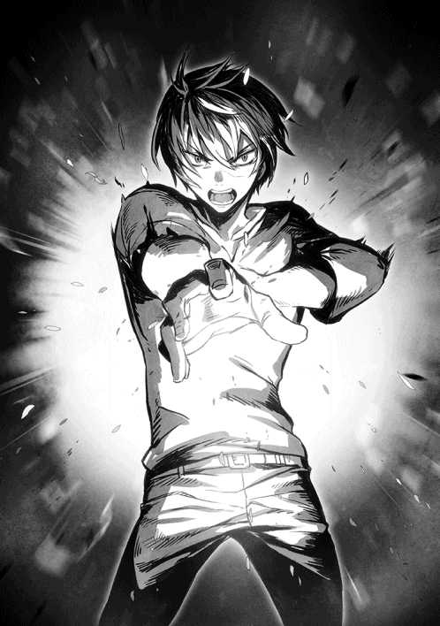
最後の瞬間、ショウは誰かの名前を呼んだ気がするが......それが誰の名前だったのか自分でもわからないまま、意識を失っていた。
終章 命令ではなく、己の意志で戦え
アルバラン城内の戦いは、結果的には反乱軍の侵攻作戦が勝利を収めた。
囚われていた魔将のロキは、実はこのような場合に備え、魔族軍内に密かに賛同者を増やしていたのだが、今回はそれが大きな力を発揮した形である。
何より、侵攻軍を迎え撃つ立場にあった千騎士──つまり、魔将に次ぐ地位の魔族戦士が、ロキの潜在的な味方であったことが幸いした。
彼は、最初から反乱軍の鎮圧に乗り気ではなかったし、クリスタリカが城を退去した途端に、はっきりと「これ以上の戦いは無意味だ」と宣言し、自ら降伏してしまったのだ。
これは、おそらく途中で介入したヴェルマにとっても、計算外の出来事だったかもしれない。
なぜなら、ヴェルマの存在をまだ知らずにいるクリスタリカは、ショウとヴェルマの戦いを、反乱軍の増援だと勘違いしたからだ。
ショウとヴェルマの激突は、最後に二人がソウルバイブルの奥義を互いにぶつけ合って終わったが、その際に生じた余波は、驚くべきことに城壁の一画を大きく破壊している。
この時の破壊音を、クリスタリカは完全に誤解して受け止めたらしい。
つまり......まとまった数の反乱軍が、外部から増援に押し寄せたのだろうと。
事実は、たった二人のソウルバイブルの使い手による戦いが原因だったのだが、クリスタリカもさすがにそこまでは想像できなかったのだ。
彼女はあくまでも常識的に考え、あの時の破壊を「こちらの想定外の増援だろう」と判断したわけだ。
ただ、クリスタリカとて、何も得ることなく逃げたわけではない。
最後の瞬間、彼女が滞在する部屋のすぐそばまで来ていたジェレミーに襲いかかり、彼に重傷を負わせている。
ショウは、自分もヴェルマとの戦いでしばらく意識がなかったが......こちらはすぐに回復し、目覚めた後にその顛末を聞いて唇を噛んだ。
後から報告を聞くと、他にも地下でロキ達と共にいたノイマンは既にヴェルマに倒され、ジェイルもまだ怪我がひどくて動けずにいる。
被害だけで見るなら、実は侵攻してきた反乱軍の方が大きかったと言えるだろう。
......ただし、最後にヴェルマと魔法をぶつけ合う瞬間、ショウの叫び声を聞いたリシャールが、まだ健在だった仲間を、全員転移させてくれた。
お陰で、あの戦いで新たに死者が出ることだけはなかった。ショウにとっては、それだけは唯一の慰めだったのだ。
☆
「貴方も、まだ休んでいた方がいいと思うが」
ショウが心配して言ったが、ロキはきっぱりと首を振った。
「いや、命長らえたからには、務めを果たさないとね」
右腕が骨折しており、まだ首から包帯で吊ったままである。それでも彼は、あえて副官のアシュレイと共に、東館一階に来ていた。
ここは、東館の正面入口を入ったすぐの場所であり、二階の歩廊まで吹き抜けの大ホールになっている。
今、その広間に降伏した魔族軍の将兵が全員集められ、意外な表情で正面──つまりそこに立つショウ達を眺めていた。
普通なら捕縛されて当然なのに、なぜか戦闘スーツ姿のまま、捕虜の全てがここに呼ばれているのだ。武器を回収された以外は、全ての戦士が元の姿のままだった。
ショウは、全員がざわめきを止めるのを待ち、積まれた木箱に上がり、即席の壇上に立つ。
最初にまず、捕虜の先頭に立つ千騎士に低頭し、お礼を述べた。
「貴方のお陰で、無益な戦闘が早く終わった。礼を言います」
頭を下げられた千騎士は、むしろ面目なさそうに首を振った。
「いえ......私にもう少し力があれば、もっと早い段階で戦いを終えられたのですが......力が足りず、申し訳ない」
ショウは微笑んで首を振り、今度は仲間の列からリシャールを呼んだ。
「すまない、リシャール。俺の隣へ来てくれるか」
別に打ち合わせをしたわけでもないのに、リシャールは悠然と歩き、落ち着いた態度で上がってきた。
おそらく、ショウが何をさせるか予測していたのだろう、頼む前に、もう自分でマスクを取ってくれた。
戦士階級とは思えない理知的な顔が露わになったが......周囲が一斉にざわめいたのは、もちろんそのためではない。
彼の瞳が──真紅の色で彩られていたからだ。
白目を含む、瞳全体が紅く染まっているのを見て、捕虜の魔族兵士達は等しく驚きの声を洩らしていた。
そんな特徴を持つ種族は、それこそ太古の文献に出てくるグールくらいのものだ。
「もういいよ、悪かったな」
肩を叩いてリシャールを下がらせ、ショウはまた魔族戦士達に向き直る。
「リシャールは俺達の仲間だが、彼の目を見れば、伝承が真実だとわかるだろう」
おもむろに口火を切った。
「クリスタリカは、グールなど太古の伝承にしか存在しない種族だと断言するが、実際にはこうして実在するし、その脅威も明らかだ。西館と一体化した城壁が崩れたのは、何も増援が来たからじゃない。ヴェルマというグールの戦士と、その腹心が攻め込んできたからだ。連中を迎え撃ったのは俺だが、戦いが長引けば、こうして皆の前に立っていられなかったかもしれない」
ここでショウはじっくりと魔族戦士達を見渡したが......全員、しわぶき一つせずに耳を傾けていた。
「ヤツらは俺達と魔族をぶつけて消耗させ、その隙にそっくり世界を掠め取る気でいる。つまり、俺達が殺し合いなどしたところで、喜ぶのはグールだけだということだ。その真実を知った俺達は、早くから魔族側にもグールの脅威を伝えようとした。しかし......あいにく、これまではクリスタリカがそれを許さず、全ての真実から目を背けてきた。だが、今ここにいるあんた達は俺の言葉を直接聞き、そしてリシャールを見てグールの実在もその目で確認したはずだ。信じてくれとは言わないが、せめてクリスタリカの宣言を盲信せず、自分自身で何が正しいのかを見極めてほしい」
声もなく見つめる彼らをまたゆっくりと見渡し、ショウは打って変わって柔らかく述べた。
「この後、ロキ殿からも話があるが......それが終われば、みんなに武器を返却し、全員を解放する。俺達は最初から、仲間を助けるのが目的であって、別に魔族を捕まえて殺すのが目的じゃないからな。......そこから先は、みんな自分で考えてくれ」
最後にショウは、静かに付け加えた。
「──戦うのなら、せめて命令されたからではなく、自分が信じたもののために戦うべきだ。俺が言いたいのは、それだけだな」
そこまで話すと、ショウは壇上を降り、今度は怪我を庇うようにゆっくり歩くロキと交代した。
ロキが自分の冤罪とクリスタリカの悪行について語り始めたが......その時にはショウは壁際まで下がり、大きく息を吐いていた。
これが一つの転機になるといいのだが......まだ戦いの行方は予断を許さないだろう。
なにしろ、ヴェルマもクリスタリカも健在なのだから。
「......ショウ」
壁にもたれたところで、心配そうな表情のロクサーヌが歩み寄り、腕に手を触れた。
「今回は、兄のためにご苦労をかけました。貴方も、まだ休んでいた方がいいのでは？」
「いや、大怪我したジェレミーに比べれば、なんてことないさ」
まだ意識が戻らない友人を思い出し、ショウは呟く。今はデイルが付いているが、魔族戦士の解放が終われば、自分もすぐに駆け付けたいと思っている。
「それにしても、魔族達を全員解放するというのは、本気ですか？」
遅れて隣にきたユウリが囁く。
「......城を出た途端、敵に回ったりしませんか？」
「さあ、どうかな」
ショウは笑って肩をすくめた。
「どう転ぶかはわからないが......でも、彼らをぶち込んだところで、俺達に得るものはないよ。だいたい、地下牢だって破壊されまくってもう使えないし」
冗談に紛らわせたつもりだが、あいにく誰も笑わなかった。
「きっと、みんなおにいちゃんの真意をわかってくれるわ」
最後にユキナが、正面から遠慮なく抱き付いてきた。
ロクサーヌとユウリが眉をひそめたが、全然気にした様子もなく言ってのける。
「ユキナにはわかるもの......きっと、おにいちゃんの今日の決断が、今後の戦いを決めることになるわ！」
「だといいな」
ショウは微笑して、ユキナの髪を撫でてやった。
お陰様で、五巻まで来ました。
お付き合いくださっている方達は、ありがとうございます。感謝です。
......ふと考えてみると、私はかれこれ十年この仕事やってますけど、五巻以上のシリーズに達したものって、このショウでまだ三作目なのですね。
しかも、現在続刊中のものを含めてのことです。
そう思うと、感慨深いものがありますね。
こればかりは、作者がいくら続けたくても、そうもいかない事情というのがあるわけですから。
それはともかく......人生、大きな流れというのがあるかもしれないなぁと思うのです。例えば、どれだけ周りから呆れられても、せっせと物語を綴っていると、いつの間にか本を出せるようになっていたりとか──。
あるいは、あまり好きじゃないと思っていた仕事でも、なぜか辞められずに、気付けば何十年も経っていたりとか。
多分そういう時って、本人が表面上でどう思っていようと、心の奥底では、今の流れが自分の性に合っているということでしょう。本当に嫌なら、逃げますからね。
逆に言うと、無理に今の流れに抵抗して、他の流れに向かおうとするなら──おそらく、今以上の覚悟がいるのかもしれません。
本作のショウもまた、望まないはずだった流れの中で、いつのまにか中心人物の一人として歴史を動かしています......全然、そんなつもりはなかったはずなのに。
彼の行き着く先を、一緒に見届けてくださると嬉しいです。
この本を出すに辺り、ご助力をくださった全ての方達にお礼を申し上げます。
最後はもちろん、この本を手にしてくださったあなたに、精一杯の感謝を。
吉野 匠 拝
著者プロフィール
吉野 匠
Yoshino Takumi
シリーズ累計120万部を突破した『レイン』（アルファポリス）を筆頭に、『ユート 拉致から始まる異世界軍師』（このライトノベルがすごい！文庫）、『アヴァロン42』（ぽにきゃんＢＯＯＫＳ）等、幅広い作品で活躍中。
２０１５年で作家デビュー10周年を迎えた。
ＨＰ「小説を書こう！」
ショウＶ ─決断の刻─
2015年８月１日発行 ver.1.0
著 者 吉野 匠
発行所 TOブックス
〒150-0045 東京都渋谷区神泉町18-８
松濤ハイツ２Ｆ
03-6452-5678（編集）
0120-933-772（営業フリーダイヤル）
Ⓒ2015 Takumi Yoshino
※無断で複製・複写・データ配信などをすることは、かたくお断りいたします。
本電子書籍は下記にもとづいて制作しました
ショウＶ ─決断の刻─
発行日 2015年７月１日 第１刷発行
本作品の全部または一部を無断で複製、転載、配信、送信したり、ホームぺージ上に転載することを禁止します。また、本作品の内容を無断で改変、改ざん等を行うことも禁止します。
本作品購入時にご承諾いただいた規約により、有償・無償にかかわらず本作品を第三者に譲渡することはできません。
本作品を示すサムネイルなどのイメージ画像は、再ダウンロード時に予告なく変更される場合があります。
本作品は縦書きでレイアウトされています。
また、ご覧になるリーディングシステムにより、表示の差が認められることがあります。